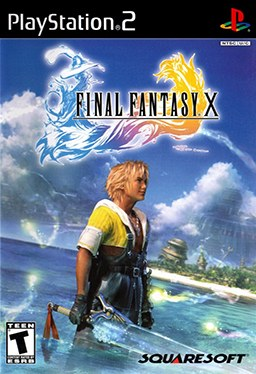

Avant de partir
Introduction : bien démarrer dans Final Fantasy X

Jaquette © SQUARE ENIX. Guide non officiel.
Présentation
Final Fantasy X te met dans la peau de Tidus, star du blitzball dans la grande cité de Zanarkand, projeté du jour au lendemain dans un monde inconnu : Spira, que terrorise une créature colossale appelée Sin. Il y croise Yuna, une jeune invokeuse qui part en pèlerinage de temple en temple pour obtenir le pouvoir de vaincre Sin, et ses gardiens. Tidus se joint à eux, avec une idée en tête : trouver un moyen de rentrer chez lui.
L'aventure suit une route presque linéaire, d'île en île et de temple en temple, jusqu'à l'obtention d'un vaisseau qui ouvre le monde, les quêtes annexes et les défis de fin de partie. Le jeu est long : compte une cinquantaine d'heures pour l'histoire, et bien davantage pour le 100 %.
Version couverte et mode d'emploi du guide
- Ce guide suit Final Fantasy X HD Remaster (PS3, PS Vita, PS4, PC, Switch, Xbox One). Il reprend le contenu de la version International : Sphérier expert, Chimères purgatrices, Der Richter et nouvelles créations du centre d'entraînement. La version PS2 européenne contient déjà ce contenu : le guide s'applique aussi à elle.
- ⚠️ Certains noms d'objets changent selon la version, en particulier les Symboles et Sceaux des armes ultimes (Mars ou Saturne, Jupiter ou Mercure…). Le guide donne les deux noms quand c'est le cas ; seul le nom change, pas l'objet ni son usage.
- Une section = une étape du voyage, dans l'ordre où tu la vis. Les quêtes annexes sont regroupées en fin de guide (sections 22 à 29), juste avant l'assaut final, car c'est là qu'on peut les terminer.
- Chaque section contient son butin exhaustif, ses alertes et une check-list. Les encadrés ⚠️ signalent un point de non-retour ou une précaution, les encadrés ⏳ un objet ou un événement manquable.
- Les informations qui n'ont pas pu être confirmées par deux sources portent la mention « ⚠️ à vérifier en jeu » ; elles sont rassemblées dans les annexes.
Conseils de départ
- Sauvegarde souvent. Toucher une sphère de sauvegarde remet aussi les HP et les MP du groupe au maximum : n'hésite pas à revenir t'y soigner.
- Fais participer tout le monde. Un personnage qui n'agit pas pendant un combat ne gagne pas de PC (points de compétence, l'expérience du jeu). Fais entrer chaque membre de l'équipe au moins une fois par combat : tu peux changer de personnage à tout moment pendant un combat, sans perdre de tour.
- Choisis le bon personnage pour chaque ennemi. Chaque membre du groupe a sa spécialité (voir plus bas) : c'est le cœur des combats de FFX.
- Ouvre les coffres secrets des temples. Chaque épreuve de temple cache un coffre qu'on ouvre avec une Sphère d'Initié : ils sont nécessaires pour la chimère secrète Anima (voir Collections).
- Ramasse les Manuels d'Al Bhed partout où tu passes : certains ne se récupèrent jamais.
- Donne au moins 1 001 Gils à O'aka XXIII sur le S.S. Liki : ses prix sur la route de Djose en dépendent (voir À bord du Liki).
- Lis les alertes de chaque section avant de la quitter : quelques rares objets ne se rattrapent pas.
Systèmes essentiels
Le combat au tour par tour
FFX utilise un système au tour par tour pur : le temps s'arrête quand c'est à toi de jouer. La liste des prochains tours s'affiche à droite de l'écran ; elle se met à jour quand tu survoles une action, ce qui te permet de prévoir. La Rapidité d'un personnage détermine la fréquence de ses tours, et Booster (Hâte) les accélère.
Trois personnages combattent à la fois, les autres attendent en réserve. Le remplacement est gratuit et instantané : c'est la clé du jeu.
| Personnage | Spécialité |
|---|---|
| Tidus | Rapide et précis : idéal contre les ennemis vifs qui esquivent. Apprend Booster et Encourager |
| Yuna | Soins, magie blanche et invocations (chimères) |
| Wakka | Attaque à distance : le seul à toucher facilement les ennemis volants |
| Lulu | Magie noire : indispensable contre les Flambos et les élémentaires, qui encaissent mal la magie mais résistent aux coups |
| Kimahri | Polyvalent ; Ryuken vole des HP et des MP et lui apprend les techniques ennemies |
| Auron | Coups puissants qui passent les carapaces des ennemis blindés ; Trépan, Émousse et Déprime affaiblissent les boss |
| Rikku | Voler et Utiliser (pour lancer les grenades et objets d'attaque) ; son Overdrive, Alchimie, mélange deux objets |
Les Astuces : dans certains combats, une commande spéciale apparaît (parler à un boss, demander à Cid de rapprocher le vaisseau…). Pense à les regarder.
L'Overkill : achever un ennemi avec des dégâts très supérieurs à ses HP restants donne un Overkill, qui rapporte plus de PC et souvent un meilleur butin.
Le Sphérier
Le Sphérier remplace les niveaux classiques. Les PC gagnés en combat se transforment en S-Niv (niveaux de Sphérier), qui permettent d'avancer d'une case sur la grille. Pour activer une case, il faut la sphère de la bonne couleur :
| Sphère | Active |
|---|---|
| Sphère Physique | HP, Force, Constitution |
| Sphère mentale | MP, Magie, Esprit |
| Sphère Agilité | Rapidité, Esquive, Précision |
| Sphère Comp | Compétences (magies, techniques, spéciaux) |
| Sphère Clé Niv.1 à 4 | Les verrous qui bloquent certains chemins |
Plus tard, d'autres sphères permettent de se téléporter sur la grille (Sphère Retour, Réunion, Succession, Téléport), d'activer une case déjà apprise par un allié (Sphère Carac, Tech, Spéc, Mag blanche, Mag noire), de transformer une case vide en bonus (Sphère HP, Force, Magie…) ou d'effacer une case (Sphère Annulation). La Sphère Joker active n'importe quelle case.
Standard ou expert ? En début de partie, la version HD te fait choisir la grille :
- Sphérier standard : chaque personnage suit sa propre branche, conçue pour son rôle. Idéal pour une première partie.
- Sphérier expert : tout le monde part du centre d'une grille plus compacte ; plus de liberté, mais il faut planifier davantage.
Les deux permettent de terminer le jeu à 100 %. En fin de partie, chaque personnage peut sortir de sa branche et apprendre les compétences des autres.
Les compétences
- Magie blanche (Yuna surtout) : Soin, Esuna, Booster, Carapace, Blindage, Récup, Boomerang (renvoie la magie), Dissipation, Auréole (ressuscite automatiquement), Vie max, Sidéral, les Anti (AntiFeu, AntiTonnerre, AntiEau, AntiGlace)…
- Magie noire (Lulu) : Brasier, Foudre, H2O, Glacier et leurs versions + et X, Cyanure (poison), Quart, Hadès, Saignée, Aspire, Atomnium, Ultima…
- Techniques : Voler, Utiliser, Encourager, Concentrer, Ryuken, Provoquer, Intimider, Sorcellerie (deux sorts par tour), Corruption (payer un ennemi pour qu'il parte en laissant des objets)…
- Spéciaux : les attaques qui infligent des altérations (Morphée, Silence, Cécité…), celles qui affaiblissent (Émousse, Annumagik, Trépan, Déprime, Déchéance), Délai (repousse le tour ennemi), Attaque éclair (frappe et rejoue vite)…
Les altérations d'état
| Altération | Effet | Remède |
|---|---|---|
| Poison | Perte de HP à chaque tour | Antidote, Remède, Esuna |
| Obscurité | Les attaques physiques ratent souvent | Collyre, Remède, Esuna |
| Mutisme | Plus de magie | Bocca, Remède, Esuna |
| Fossile | Pétrifié ; peut être brisé et retiré du combat | Défigeur, Remède, Esuna |
| Zombie | Les soins blessent | Eau bénite |
| Somni | Tours plus lents | Booster, qui l'annule |
| Folie, Furie, Sommeil | Personnage incontrôlable ou endormi | Remède, Esuna |
| K.-O. | Hors combat | Queue de phénix, Méga Phénix, magie de résurrection |
Le Remède soigne presque toutes les altérations : garde-en toujours. Rikku, elle, peut utiliser les Potions Al Bhed, qui soignent tout le groupe, pétrification et poison compris.
Les Overdrives
Chaque personnage a une jauge d'Overdrive. Pleine, elle débloque une attaque spéciale : l'Escrime de Tidus, l'Osmose de Yuna, les Arcanes d'Auron, l'Émulattak de Kimahri, le Jackpot de Wakka, Subjuguer pour Lulu et l'Alchimie de Rikku. Au départ, la jauge monte quand on subit des dégâts ; tu débloqueras ensuite d'autres modes d'Overdrive (attaquer, soigner, esquiver…) en répétant les actions correspondantes. Tout est détaillé dans la section Collections.
Kimahri et Ryuken
Kimahri apprend ses Overdrives en utilisant Ryuken sur certains monstres (Bicorne, Balsamine, Bombo, Basilisk…). Chaque fois qu'un de ces monstres apparaît, pense à lui lancer Ryuken. La liste complète est dans Collections.
Les chimères
Yuna invoque des chimères : elles remplacent tout le groupe le temps du combat et sont contrôlées directement. Leur puissance suit les caractéristiques de Yuna. Elles ont leur propre jauge d'Overdrive, et Osmose permet de les invoquer jauge pleine. Une chimère peut aussi encaisser un coup à la place du groupe : invoquée juste avant une attaque dévastatrice, elle protège tes personnages. Tu obtiendras cinq chimères pendant l'aventure et trois autres, secrètes, en quête annexe (voir Chimères secrètes).
La personnalisation de l'équipement
Chaque arme ou armure a de un à quatre emplacements de compétences automatiques (effets permanents : Atq Feu, HP +10 %, Déf Poison…). Dès que Rikku rejoint l'équipe, le menu Modifier permet de remplir un emplacement libre avec une compétence, en échange d'objets. L'opération est définitive : choisis bien ta pièce de base (idéalement avec 4 emplacements).
Quelques recettes clés pour la fin de partie :
| Compétence | Objets requis | Effet |
|---|---|---|
| Sécurité | Sel purificateur ×30 | Plus de combats aléatoires |
| Dégâts extra (arme) | H-Espace ×60 | Dépasser 9 999 dégâts |
| HP Extra | Portes de l'inconnu ×30 | Dépasser 9 999 HP |
| Ruban | H-Espace ×99 | Protection contre presque toutes les altérations |
| Auto Phénix | Méga Phénix ×20 | Ressuscite automatiquement un allié K.-O. |
| Lupin | Pendule ×30 | Toujours voler l'objet rare |
| PC X2 (arme) | Mégalixir ×20 | Double les PC gagnés |
| Atq surprise (arme) | Plume de chocobo ×6 | Agir en premier au début du combat |
La plupart de ces ingrédients s'obtiennent au centre d'entraînement et dans les quêtes annexes.
L'économie
- Les Gils tombent des combats et se gagnent en revendant l'équipement (le prix dépend du nombre d'emplacements et des compétences).
- O'aka XXIII, le marchand ambulant, te suit pendant l'aventure ; ses prix dépendent de tes dons (voir À bord du Liki) puis de ta réponse dans la forêt de Macalania.
- Les agences de Rin, tenues par un Al Bhed, jalonnent la route : boutiques, auberges et, sur le vaisseau, une boutique complète.
- Plus tard, la Corruption permet de payer certains monstres pour obtenir de grandes quantités d'objets.
L'al bhed et les manuels
Les Al Bhed parlent une langue codée où chaque lettre en remplace une autre. Chaque Manuel d'Al Bhed trouvé traduit une lettre : les dialogues deviennent peu à peu lisibles. Les 26 manuels et leur récompense sont listés dans Collections.
L'affinité
Tes choix de dialogue et tes actions en combat (soigner un allié, le protéger…) modifient discrètement l'affinité entre Tidus et ses compagnes. Elle influence quelques scènes et le personnage qui intervient dans l'Overdrive Champion de Blitz de Tidus. Aucun impact sur la fin ni sur le 100 %.
Le blitzball
Le sport national de Spira, entre water-polo et handball. Un match est imposé à Luca ; ensuite, les ligues et tournois se lancent depuis les sphères de sauvegarde et rapportent notamment les Overdrives de Wakka (voir Mini-jeux).
Erreurs de débutant
- Laisser des personnages sur le banc : ils ne gagnent aucun PC. Fais-les entrer, même pour une seule action.
- Taper un Flambos à l'épée : les Flambos encaissent presque sans dégâts les coups physiques. Sors Lulu.
- Ignorer les ennemis volants avec Tidus : Wakka les touche bien plus facilement.
- Oublier les coffres secrets des temples : sans eux, pas d'Anima. Celui de Bevelle ne se rattrape pas (la Lance des Braves se retrouve toutefois dans les cristaux de la fin du jeu).
- Négliger Home et Bevelle : les Manuels d'Al Bhed 19 à 22 y sont définitivement manquables.
- Ne pas parler à Wantz sur le sentier du mont Gagazet : son équipement à quatre emplacements ne sera jamais en vente (voir Mont Gagazet).
- Quitter la salle de Yunalesca sans le Symbole solaire (ruines de Zanarkand) : une Chimère purgatrice prend sa place.
- Revenir à Besaid avec le vaisseau sans préparation : une Chimère purgatrice attend à l'entrée du village. Fais plutôt l'aller-retour conseillé juste après Métasphère (voir Forêt de Macalania).
- Vendre ses objets rares : Méga Phénix, Portes de l'inconnu, Pendules, Tristella et H-Espace servent tous à la personnalisation.
- Foncer vers Sin : tout le contenu annexe reste accessible jusqu'au point de non-retour, clairement signalé dans la section Sin.
Alertes
- ⏳ Manquable : les principaux objets définitivement manquables sont récapitulés dans les annexes, avec la section où ils se trouvent.
- ⚠️ Point de non-retour : le seul vrai point de non-retour final se trouve dans la dernière zone de Sin. Avant, garde toujours une sauvegarde dans un emplacement séparé si tu veux explorer tranquillement.
Check-list
- Choisir son Sphérier (standard ou expert)
- Comprendre les rôles de chaque personnage
- Prendre l'habitude de sauvegarder et de faire tourner l'équipe
- Lire les alertes ⏳ et ⚠️ de chaque section
Partie 01
Prologue : Zanarkand
Objectif
Rejoindre le stade de blitzball, puis fuir la ville aux côtés d'Auron quand l'attaque commence. C'est un prologue court et très guidé : il sert surtout à t'apprendre les bases des combats et des Overdrives.
Itinéraire
- Devant la maison de Tidus, parle aux fans, puis descends la longue avenue qui mène au stade.
- Après la cinématique du match, suis Auron vers le sud sur l'autoroute suspendue. Si l'orientation te semble floue, fie-toi à la mini-carte plutôt qu'à la caméra.
- Avance jusqu'au bout du pont : la sphère de sauvegarde est à mi-chemin, le dernier combat se déroule juste après.
Déroulé pas à pas
- Nomme ton héros. Le nom par défaut est Tidus, c'est celui qu'utilise ce guide.
- Parle à tout le monde devant la maison. Les deux filles à droite réclament un autographe, le groupe d'enfants à gauche fait le « signe de la victoire » du blitzball. Pure ambiance.
- Sur l'avenue, cherche la fille en rose qui court partout à la recherche d'une place pour le match. Dis-lui que tu as des billets en trop : elle te remercie avec 2 Potions.
- Entre dans le stade. Après plusieurs cinématiques, la ville est attaquée et Tidus retrouve Auron sur l'autoroute.
- Premiers combats contre les Squamelles (Sinscales). Contente-toi de l'Attaque : elles sont trop faibles pour mériter mieux. Frappe uniquement celles qui sont devant toi, les autres ne bloquent pas le passage.
- Auron te donne l'Épée longue (Longsword), équipée automatiquement sur Tidus.
- Boss : Ems. Voir la fiche plus bas.
- Touche la sphère de sauvegarde au bas de l'écran. Même si tu ne sauvegardes pas, elle restaure HP et MP : prends ce réflexe à chaque sphère que tu croises.
- Combat contre une vague de Squamelles. Chaque Squamelle tuée est aussitôt remplacée. Achève en priorité celles dont les ailes clignotent : elles préparent une attaque plus forte. Au bout de quelques victimes, une cinématique se déclenche.
- Vise le Tanker, le camion-citerne sur la droite de l'écran. Tidus et Auron doivent le frapper tous les deux : 5 coups suffisent pour le faire exploser et mettre fin au combat.
- Le décor s'effondre et Tidus est aspiré. Dans la séquence onirique qui suit, appuie sur la touche indiquée à l'écran pour descendre, puis nage jusqu'à la silhouette sur la plateforme. Tidus se réveille ailleurs…
Boss : Ems (Sinspawn Ammes)
| HP | Vol | Butin | Faiblesse |
|---|---|---|---|
| 2 400 | Aucun | Aucun | — |
- Ce combat est impossible à perdre. Ems ne lance que Quart (Demi), qui retire environ 25 % des HP actuels de chaque personnage : ce sort ne peut donc jamais te mettre K.O.
- Auron commence avec sa jauge d'Overdrive pleine. Ouvre le menu des Overdrives (les Arcanes d'Auron) et lance Dent de Dragon. Une série de touches s'affiche : tape-la le plus vite possible. Même ratée, l'attaque suffit à balayer toutes les Squamelles.
- Après le deuxième Quart, l'Overdrive de Tidus (Escrime) se remplit. Lance Flip-Flap : un curseur défile sur une barre, et il faut appuyer quand il passe dans la zone grise. Tu as plusieurs essais.
- Finis ensuite Ems à l'attaque normale. Inutile de gaspiller des Potions.
Quêtes et lieux
- Aucune boutique, aucune quête annexe : Zanarkand n'est qu'un prologue. On y revient bien plus tard dans l'aventure, dans un tout autre état.
Butin exhaustif
| Nom exact | Type | Où / comment l'obtenir | Utilité |
|---|---|---|---|
| Potion ×2 | Soin | Fille en rose sur l'avenue : dis-lui que tu as des billets en trop | Rend 200 HP à un allié |
| Épée longue (Longsword) | Arme Tidus | Donnée par Auron au début de la fuite | Première vraie arme de Tidus |
Conseils et pièges
- Les Overdrives remplacent les « Limites » des anciens Final Fantasy. Quand la jauge est pleine, le nom de la commande clignote. Pour l'instant, elles se chargent quand tu subis des dégâts ; tu pourras changer ce mode plus tard (voir l'introduction).
- La rapidité d'exécution compte : pour Auron comme pour Tidus, plus tu réussis vite, plus l'attaque est puissante.
- Tidus débloquera ses Overdrives suivantes simplement en utilisant Escrime souvent : Assaut après 10 utilisations, Déluge après 30 et Champion de Blitz après 80. Autant la placer dès que possible pendant toute l'aventure.
Alertes
- ⏳ Manquable : les 2 Potions de la fille en rose. C'est peu, mais c'est ton seul butin du prologue.
Check-list
- 2 Potions obtenues auprès de la fille en rose
- Épée longue reçue d'Auron
- Ems vaincu
- Tanker détruit
Partie 02
Les ruines sous-marines et le navire al bhed
Objectif
Survivre seul dans des ruines englouties, allumer un feu pour ne pas mourir de froid, puis prêter main-forte à un équipage al bhed sur une mission de récupération sous-marine. Tu y découvres le Sphérier, le système de progression du jeu, ainsi que les Astuces, des commandes spéciales qui n'apparaissent que dans certains combats.
Itinéraire
- Ruines : nage au nord-ouest jusqu'à un petit escalier qui sort de l'eau, puis explore le côté est avant de continuer vers le nord.
- Salle immergée : sauvegarde, fais le détour à gauche, puis continue vers le nord, où t'attend une embuscade.
- Couloir, puis grande salle ronde : fouille la salle au sud, celle au nord et l'étage avant d'allumer le feu au centre.
- Navire al bhed : pont du navire, puis plongée le long de la chaîne jusqu'au bâtiment sous-marin.
Déroulé pas à pas
Les ruines
- Nage vers le nord-ouest et monte le petit escalier qui sort de l'eau. Tu y trouves une sphère d'association de manuels al bhed (Al Bhed Compilation Sphere) : si tu as une ancienne sauvegarde, elle récupère les manuels al bhed déjà trouvés dans ta partie précédente. Le coffre juste au sud contient 2 Potions.
- Côté est de la zone, près de graffitis al bhed, un coffre contient 200 Gils. Ne l'oublie pas avant d'aller au nord.
- Salle immergée : sauvegarde à gauche. Le chemin qui part à gauche mène à un coffre : Potion+.
- Continue vers le nord : Tidus est poussé à l'eau. Trois Sahuagins attaquent : deux coups d'épée chacun suffisent. Le troisième se fait dévorer par… le boss.
Boss : Geosgaeno
| HP | Vol | Butin |
|---|---|---|
| 32 767 | Magikoroc Eau (impossible à voler pour l'instant) | Aucun |
- Tu ne peux ni le battre ni perdre. Ses attaques retirent toujours 50 % de tes HP. Donne deux ou trois coups et le combat s'arrête tout seul : Tidus prend la fuite. Garde tes Potions.
- Tu le retrouveras bien plus tard, et il sera alors possible (et rentable) de le vaincre.
La grande salle et le feu
- Traverse le couloir jusqu'à la grande salle ronde. Une sphère de sauvegarde est au sud-ouest.
- Passe la porte à côté de la sauvegarde : la caisse au sol contient le Silex.
- Reviens au centre et longe le mur vers l'est : à droite de la grande porte verrouillée, un coffre renferme une Maxipotion.
- Prends la porte nord : un coffre t'attend juste à l'entrée, Éther. Monte l'escalier et ramasse les Fleurs séchées en haut.
- Suis le couloir qui repasse au-dessus de la grande salle : au bout, un coffre contient une Potion+.
- Retourne au centre et examine le foyer pour allumer le feu. Tidus s'endort… et se réveille face à un monstre.
Boss : Kourik (Klikk)
| HP | Vol | Butin |
|---|---|---|
| 1 500 | Grenade | Sphère Comp |
- Frappe à l'épée et soigne-toi à la Potion dès que tes HP passent sous la moitié : ce boss tape vraiment.
- En cours de combat, des Al Bhed font irruption et une fille en rouge te rejoint. Elle n'a que 2 Grenades : utilise-les, puis sers-toi de sa commande Voler sur Kourik pour en récupérer une troisième.
Le navire al bhed
- Sur le pont, parle à la fille en rouge : elle t'explique le Sphérier (voir l'introduction). Ouvre-le, déplace Tidus d'une case, puis utilise la Sphère Comp obtenue sur Kourik pour activer la compétence Encourager.
- Parle à l'Al Bhed à gauche : il te donne 3 Potions.
- Ramasse le Manuel d'Al Bhed 1 au fond du navire. C'est le premier des 26 manuels du jeu, chacun traduit une lettre de la langue al bhed (voir la section Collectionnables). Il débloque le trophée ou succès Speaking in Tongues.
- Sauvegarde, puis reparle à la fille en rouge et plonge.
- Sous l'eau, suis la chaîne vers le bas. Tu rencontres ici tes premiers combats aléatoires, faciles.
- Dans le bâtiment immergé, sauvegarde, examine le panneau de contrôle, puis suis ta partenaire et active le générateur dans la salle suivante. En repartant, embuscade.
Boss : Ultros (Tros)
| HP | Vol | Butin |
|---|---|---|
| 2 200 | Grenade | Sphère Physique |
- Tidus attaque, sa partenaire (affichée « ???? ») lance des Grenades et en vole de nouvelles sur le boss au besoin.
- Quand Ultros se réfugie derrière la colonne, tu ne peux plus le toucher. Le jeu te présente les Astuces : fais patienter tes deux personnages, ce qui leur rend quelques HP.
- La deuxième fois qu'il se cache, une nouvelle Astuce permet de le prendre en tenaille des deux côtés. Utilise-la : il ne pourra plus s'échapper ni lancer sa charge dévastatrice. Quelques coups et c'est fini.
- Rejoins ta partenaire pour une cinématique. De retour sur le navire, elle se présente : Rikku. Elle rejoindra ton équipe bien plus tard. Une nouvelle attaque envoie Tidus par-dessus bord… direction l'île de Besaid.
Quêtes et lieux
- Aucune boutique. Tout se récupère dans les coffres.
- Sphérier : chaque case activée augmente une statistique ou apprend une compétence. Pour avancer, il faut des S-Niv (gagnées en combat), puis des sphères de la bonne couleur pour activer les cases (Sphère Physique pour HP, Force et Constitution ; Sphère mentale pour MP, Magie et Esprit ; Sphère Agilité pour Rapidité, Esquive et Précision ; Sphère Comp pour les compétences).
- Les ruines reviendront : une fois le vaisseau obtenu, tu pourras revenir y battre Geosgaeno, récupérer 4 Méga Phénix et un Mégalixir, et y trouver l'arme ultime de Lulu (voir les sections Armes des Sept Astres et Chimères secrètes).
Butin exhaustif
| Nom exact | Type | Où / comment l'obtenir | Utilité |
|---|---|---|---|
| Potion ×2 | Soin | Coffre au sud de la sphère d'association, plateforme nord-ouest | Rend 200 HP |
| 200 Gils | Argent | Coffre côté est, près des graffitis al bhed | — |
| Potion+ | Soin | Coffre sur le chemin de gauche, salle immergée | Rend 1 000 HP |
| Silex | Objet clé | Caisse dans la salle à côté de la sauvegarde (grande salle) | Sert à allumer le feu |
| Maxipotion (X-Potion) | Soin | Coffre à droite de la grande porte verrouillée | Rend tous les HP |
| Éther | Soin | Coffre à l'entrée de la salle nord | Rend 100 MP |
| Fleurs séchées | Objet clé | En haut de l'escalier de la salle nord | Sert à allumer le feu |
| Potion+ | Soin | Coffre au bout du couloir de l'étage | Rend 1 000 HP |
| Grenade | Attaque | À voler sur Kourik et sur Ultros | Dégâts sur tous les ennemis |
| Sphère Comp | Sphère | Lâchée par Kourik | Active une case de compétence du Sphérier |
| Potion ×3 | Soin | Al Bhed à gauche sur le pont du navire | Rend 200 HP |
| Manuel d'Al Bhed 1 | Objet clé | Au sol, au fond du navire | Traduit une lettre de l'al bhed |
| Sphère Physique | Sphère | Lâchée par Ultros | Active une case HP, Force ou Constitution |
Conseils et pièges
- Les manuels al bhed ne servent pas qu'à comprendre les dialogues : les trouver tous donne une récompense de taille plus loin (voir Collectionnables). Chaque manuel manqué dans un lieu inaccessible est perdu, c'est une des principales sources de « manquables » du jeu.
- Tu ne peux pas mourir contre Geosgaeno, mais Kourik, lui, peut te mettre K.O. : ne sois pas trop économe en Potions ici, tu en récupères beaucoup dans les heures qui viennent.
- Astuces : dès qu'elles apparaissent dans un combat, elles sont presque toujours la clé du combat. Garde le réflexe d'ouvrir ce menu.
Alertes
- ⏳ Manquable : le Manuel d'Al Bhed 1 et les 3 Potions de l'Al Bhed. Tu ne remettras jamais les pieds sur ce navire.
- Les coffres des ruines sont aussi à prendre maintenant : le retour dans les ruines n'est possible que très tard, et tu auras besoin de ces soins bien avant.
Check-list
- 2 Potions (plateforme nord-ouest) et 200 Gils (côté est)
- Potion+ (salle immergée)
- Silex et Fleurs séchées
- Maxipotion, Éther et Potion+ (grande salle et étage)
- Kourik vaincu, Sphère Comp utilisée pour apprendre Encourager
- 3 Potions de l'Al Bhed et Manuel d'Al Bhed 1
- Ultros vaincu
Partie 03
L'île de Besaid
Objectif
Rejoindre le village de Besaid avec Wakka, franchir l'épreuve du temple et assister à l'arrivée d'une nouvelle invokeur, Yuna. Le lendemain, tu quittes l'île avec son escorte au complet : Wakka, Lulu, Kimahri et Yuna. C'est ici que ton équipe se forme.
Itinéraire
- Plage → carrefour (sauvegarde) → vallée : un passage qui se fait à la nage, sous l'eau.
- Pente du village → village de Besaid → temple, au nord du village.
- Après la nuit : sentier qui redescend vers la plage, ancien temple envahi par la végétation (embuscade), chemin des cascades, puis plage et quai.
Déroulé pas à pas
La plage et la vallée
- Avant de rejoindre les joueurs sur la plage, nage vers l'est : un coffre contient le Symbole lunaire. Il ne sert à rien pour l'instant, mais c'est une pièce indispensable de l'arme ultime de Yuna.
- Sur la gauche de la plage, près des barques et des filets, un coffre renferme 2 Antidotes.
- Rejoins le groupe. Wakka, capitaine des Besaid Aurochs, t'invite au village. Retrouve-le au nord-est de la plage, écoute ses explications sur Sin et sauvegarde.
- Dans la vallée, Wakka te pousse à l'eau. Fouille les fonds en nageant (touche de plongée) :
- au sud, un coffre immergé : Queue de phénix ;
- plus à l'est : Potion+ ;
- un peu plus loin le long du courant : 2 Antidotes.
- Wakka te propose de rejoindre son équipe de blitzball. Suis le chemin jusqu'au village ; tu croises Luzzu et Gatta, deux Bannisseurs (les soldats qui luttent contre Sin).
Le village
- À l'entrée, Wakka te demande si tu te souviens de la prière. Les deux réponses mènent au même résultat.
- Juste à gauche de l'entrée, un coffre : Queue de phénix.
- Un recoin à l'ouest du village apparaît grisé sur la mini-carte. On y trouve trois coffres : 2 Potions, Potion+ et 400 Gils.
- Visite la tente des Bannisseurs (en haut à gauche) si tu veux en savoir plus, puis entre dans le temple au nord. Approche-toi des statues à l'ouest : le prêtre te parle des invokeurs.
- Rejoins la tente de Wakka, celle du milieu sur la droite, et choisis de te reposer.
- Au réveil, retourne dans la tente des Bannisseurs : un pupitre de didacticiels y est installé, et le Manuel d'Al Bhed 2 t'attend à droite du bureau.
- Retourne au temple : un invokeur n'est pas ressorti de l'épreuve. Tidus fonce dans le cloître des épreuves.
L'épreuve du temple de Besaid
Chaque temple du jeu cache, en plus de l'énigme principale, un coffre secret qu'on ouvre avec une Sphère d'Initié (Destruction Sphere). Ouvre-les tous : c'est la condition pour obtenir la chimère secrète Anima plus tard.
-
Examine le symbole au fond de la première salle, puis touche le sceau sur le mur de droite : un passage secret s'ouvre.
-
Descends le premier escalier et prends la Sphère Sceau dans le mur. Descends le second escalier et insère-la dans la porte.
-
La porte s'ouvre : reprends la sphère.
-
Continue dans le couloir jusqu'à un emplacement où insérer la Sphère Sceau. Une pièce contenant une Sphère d'Initié se révèle. Ne la prends pas encore.
-
Continue jusqu'au piédestal. Touche le sceau juste en face, puis prends la Sphère de Besaid au fond de la salle qui vient de s'ouvrir et pose-la sur le piédestal.
-
Reviens chercher la Sphère d'Initié et place-la là où se trouvait la Sphère de Besaid. Le mur explose et révèle une salle secrète.
-
Ouvre le coffre de cette salle : Bâton d'Érudit, une arme pour Yuna.
-
Pousse le piédestal au fond de la pièce : il sert d'ascenseur.
-
Tu rencontres Lulu et Kimahri, puis Yuna ressort de la chambre du priant, devenue invokeur. Sur la place, elle appelle sa première chimère : Valefore.
-
Le soir, au feu de camp, parle à Yuna, puis à Wakka pour aller dormir.
-
Au matin, sauvegarde et sors : Wakka t'offre l'épée de son frère, Fraternité, équipée automatiquement.
Avant de partir : la seconde Overdrive de Valefore
- Retourne dans la boutique, la première tente à gauche en entrant. Parle à la jeune fille et réponds que tu n'achètes rien : elle raconte que son chien a déterré quelque chose.
- Va dans la tente tout en haut à droite, l'atelier de tissage, et examine le chien. Tu récupères « un truc gluant qui dégouline »… et Valefore apprend l'Overdrive Écho, bien plus puissante que son Hurlements de départ.
Le chemin du départ
- Tu enchaînes des combats d'initiation : les attaques de Wakka, très efficaces contre les ennemis volants, puis la magie noire de Lulu. Utilise Foudre contre le flan d'eau.
- En haut de la colline, Wakka te propose de prier ou de simplement regarder : aucune conséquence. Sauvegarde.
- Boss : Kimahri, fiche plus bas.
- Nouveau didacticiel : Yuna rejoint le groupe de combat et tu apprends à invoquer.
- Sur le quai, parle à tout le monde : on t'offre une Bague de Pèlerin, un Éther, 400 Gils et 3 Queues de phénix. Parle deux fois au garçon sur la planche pour obtenir un Remède.
- Monte à bord du bateau.
Boss : Kimahri
| HP | Vol | Butin |
|---|---|---|
| 750 | Aucun | Sphère Comp |
- Commence par Encourager sur Tidus (sa force et sa défense augmentent), puis attaque en boucle.
- Kimahri peut te faire mal avec son Overdrive Sauter : soigne-toi à la Potion si besoin. Ton propre Overdrive devrait se remplir pendant le combat, place-le. En quatre ou cinq tours, c'est plié.
Quêtes et lieux
- Boutique (première tente à gauche) : Potion 50 Gils, Queue de phénix 100 Gils, Antidote 50 Gils. L'équipement n'apparaît dans la boutique qu'après le combat contre Kimahri, à 150 Gils la pièce : armes Force +3 % pour Tidus et Wakka, Magie +3 % pour Yuna et Lulu, armures HP +5 %. Revenir au village pour ça n'est pas indispensable.
- Tente des Bannisseurs : lit pour se reposer, pupitre de didacticiels et Manuel d'Al Bhed 2.
- Plus tard dans le jeu : une sphère de Jecht apparaîtra à droite de l'entrée du temple, après le combat contre Métasphère dans la forêt de Macalania. Elle est indispensable pour le dernier Overdrive d'Auron, et la section Forêt de Macalania explique comment la récupérer avant que le village ne soit bloqué. Besaid cache aussi un combat optionnel de très haut niveau, réservé à la fin de partie (voir Chimères purgatrices).
Butin exhaustif
| Nom exact | Type | Où / comment l'obtenir | Utilité |
|---|---|---|---|
| Valefore | Chimère | Fin de l'épreuve du temple de Besaid | Première chimère de Yuna ; encaisse les coups à la place du groupe |
| Symbole lunaire | Objet clé | Coffre en nageant vers l'est depuis la plage | Pièce de l'arme ultime de Yuna |
| Antidote ×2 | Soin | Coffre à gauche de la plage, près des barques | Soigne le Poison |
| Queue de phénix | Soin | Coffre immergé au sud de la vallée | Ranime un allié K.O. |
| Potion+ | Soin | Coffre immergé à l'est de la vallée | Rend 1 000 HP |
| Antidote ×2 | Soin | Coffre immergé plus loin dans la vallée | Soigne le Poison |
| Queue de phénix | Soin | Coffre juste à gauche de l'entrée du village | Ranime un allié K.O. |
| Potion ×2 | Soin | Recoin ouest du village | Rend 200 HP |
| Potion+ | Soin | Recoin ouest du village | Rend 1 000 HP |
| 400 Gils | Argent | Recoin ouest du village | — |
| Manuel d'Al Bhed 2 | Objet clé | Tente des Bannisseurs, à droite du bureau, après ta sieste | Traduit une lettre de l'al bhed |
| Bâton d'Érudit | Arme Yuna | Coffre secret de l'épreuve du temple (Sphère d'Initié) | Trésor de temple, requis pour Anima |
| Fraternité | Arme Tidus | Offerte par Wakka au matin | Excellente épée pour le début du jeu |
| Écho | Overdrive Valefore | Boutique (fille) puis chien de l'atelier de tissage | Overdrive la plus puissante de Valefore |
| Sphère Comp | Sphère | Lâchée par Kimahri | Active une compétence du Sphérier |
| Bague de Pèlerin | Armure Yuna | Offerte sur le quai | Protection de Yuna |
| Éther | Soin | Offert sur le quai | Rend 100 MP |
| 400 Gils | Argent | Offerts sur le quai | — |
| Queue de phénix ×3 | Soin | Offertes sur le quai | Ranime un allié K.O. |
| Remède | Soin | Garçon sur la planche du quai, parle-lui deux fois | Soigne presque toutes les altérations |
Conseils et pièges
- Change de personnage en plein combat. C'est une des grandes originalités de FFX : chaque personnage a son rôle (Wakka contre les volants, Lulu contre les flans et les monstres en carapace, Tidus contre les ennemis rapides, Kimahri polyvalent). Un personnage qui agit, même une seule fois, gagne de l'expérience à la fin du combat.
- Le Sphérier : fais avancer chacun sur sa propre branche pour l'instant. Tidus vers Booster (qui accélère un allié) et la Rapidité, Yuna vers les soins, Lulu vers la magie noire, Wakka vers ses attaques qui infligent des altérations (Cécité, Silence…).
- Valefore est une alliée précieuse contre les boss des prochaines heures : quand tes personnages sont en difficulté, invoque-la pour encaisser à leur place.
Alertes
- ⏳ Manquable : les cadeaux du quai (Bague de Pèlerin, Éther, 400 Gils, 3 Queues de phénix et Remède). Récupère-les avant d'embarquer.
- ⏳ Manquable : le coffre secret du temple (Bâton d'Érudit), requis pour Anima. Dans les versions HD, International et PS2 européenne, un boss optionnel redoutable (une Chimère purgatrice) bloque l'entrée du village quand tu reviens avec le vaisseau. Refaire l'épreuve plus tard impose donc de le battre : prends ce coffre maintenant.
- ⏳ Manquable : l'Overdrive Écho de Valefore, pour la même raison. Tu auras une seule autre occasion de venir la chercher sans affronter ce boss (voir la section Forêt de Macalania) : fais-le maintenant.
Check-list
- Symbole lunaire et 2 Antidotes sur la plage
- Queue de phénix, Potion+ et 2 Antidotes dans la vallée
- Queue de phénix à l'entrée et trois coffres du recoin ouest du village
- Manuel d'Al Bhed 2 dans la tente des Bannisseurs
- Bâton d'Érudit (coffre secret du temple)
- Écho pour Valefore (fille de la boutique, puis chien)
- Kimahri vaincu
- Tous les cadeaux du quai, dont le Remède du garçon
Partie 04
À bord du S.S. Liki
Objectif
Traverser la mer de Besaid à Kilika. La traversée est courte mais importante : tu y rencontres O'aka XXIII, le marchand ambulant qui te suivra tout le long du jeu, et le bateau subit une attaque en pleine mer.
Itinéraire
- Pont : parle à Wakka.
- Pont inférieur : O'aka, la cabine avec le coffre, la valise, puis la salle des machines.
- Retour sur le pont pour parler à Yuna, ce qui déclenche les combats.
Déroulé pas à pas
- Parle à Wakka sur le pont : il t'annonce la route, Kilika puis Luca.
- Descends au pont inférieur. Sauvegarde, puis parle à l'homme au gros sac vert : O'aka XXIII. Il te demande un don (voir le tableau plus bas).
- Dans la pièce en face d'O'aka, un coffre contient un Remède.
- Frappe la valise posée au sol : chaque coup te donne une Potion, tant que tu en as moins de 20 dans ton inventaire. Remplis ton stock à 20, c'est gratuit.
- Entre dans la salle des machines, juste à côté d'O'aka (des chocobos y voyagent). Le Manuel d'Al Bhed 3 est dans le coin en bas à droite.
- Remonte sur le pont et approche-toi de Yuna : la foule parle de son père, le grand invokeur Braska. Parle à Wakka, puis, quand la foule s'est dispersée, à Yuna.
- Boss : Sin (Aileron), puis immédiatement Ekyu. Aucune sauvegarde entre les deux : voir les fiches ci-dessous.
- Après une cinématique, le bateau accoste dans ce qui reste de Porto Kilika.
Donner des Gils à O'aka
Tu peux lui donner des Gils à quatre endroits : ici, sur le S.S. Winno, à Luca et sur la vieille route de Mi'ihen. C'est la dernière occasion : une fois sur la route de Djose, les dons sont fermés. Le montant total fixe les prix de ses boutiques sur la route de Djose, où il vend pour la première fois de l'équipement intéressant :
| Total donné | Prix d'O'aka sur la route de Djose |
|---|---|
| 0 à 100 Gils | Prix normaux ×2 |
| 101 à 1 000 Gils | Prix normaux ×1,5 |
| 1 001 à 10 000 Gils | Prix normaux ×1,2 |
| Plus de 10 000 Gils | Prix normaux ×0,7 |
Conseil : donne-lui 1 001 Gils maintenant. Tu n'as rien d'autre à acheter pour l'instant, et tu pourras compléter plus tard si tu vises la réduction de 30 %. Plus loin, dans la forêt de Macalania, ses prix dépendront d'autre chose : ta réponse quand il te demande ce que tu penses de ses tarifs (voir cette section).
Boss : Sin (Aileron)
| HP | Vol | Butin |
|---|---|---|
| 2 000 | Aucun | Aucun |
- Des Squamelles accompagnent l'aileron. Élimines-en deux sur trois : si tu les tues toutes, d'autres arrivent aussitôt.
- L'aileron est hors de portée des attaques au corps à corps de Tidus et Yuna. Seuls Lulu (magie), Wakka (tir) et Kimahri (compétence Ryuken) peuvent le toucher : mets ces trois-là en ligne.
- Lance Encourager avec Tidus en début de combat, puis retire-le du combat.
- Vers 1 000 HP restants, fais entrer Yuna et invoque Valefore : son Overdrive (Écho si tu l'as récupérée au chien de Besaid, sinon Hurlements) termine le travail.
- Préserve Tidus et Wakka : ce sont les deux seuls personnages du combat suivant, et leurs HP ne remontent pas entre les deux.
Boss : Ekyu (Sinspawn Echuilles)
| HP | Vol | Butin | Point faible |
|---|---|---|---|
| 2 000 | Aucun | Sphère Comp | Cécité |
- Combat sous l'eau, avec Tidus et Wakka seulement.
- Ignore les Squamelles : elles réapparaissent à chaque fois. Tout sur Ekyu.
- Tidus : Encourager une ou deux fois. Wakka : Cécité sur Ekyu, ce qui rend ses attaques physiques presque inoffensives.
- Ekyu vole des HP avec Saignée. Après deux Saignées, il enchaîne une attaque qui touche tout le monde : soigne-toi à la Potion quand Tidus ou Wakka passent sous 50 %.
Quêtes et lieux
- O'aka XXIII (pont inférieur) : pas de boutique pour l'instant, seulement le don. Tu le recroiseras sur le Winno, à Luca, sur la route de Mi'ihen et bien plus loin.
- Valise à Potions : Potions gratuites jusqu'à 20 en stock.
Butin exhaustif
| Nom exact | Type | Où / comment l'obtenir | Utilité |
|---|---|---|---|
| Remède | Soin | Coffre de la pièce en face d'O'aka | Soigne presque toutes les altérations |
| Potion (jusqu'à 20 en stock) | Soin | Frappe la valise posée au sol, pont inférieur | Rend 200 HP |
| Manuel d'Al Bhed 3 | Objet clé | Salle des machines, coin en bas à droite | Traduit une lettre de l'al bhed |
| Sphère Comp | Sphère | Lâchée par Ekyu | Active une compétence du Sphérier |
Conseils et pièges
- Remplis ton stock de Potions à 20 grâce à la valise avant de parler à Yuna : les combats s'enchaînent ensuite sans pause.
- Ryuken (la compétence de départ de Kimahri) vole des HP et des MP à distance. Elle sert surtout à apprendre les techniques ennemies de Kimahri (voir la section Kimahri de l'introduction).
Alertes
- ⏳ Manquable : le Manuel d'Al Bhed 3. Si tu l'oublies, un exemplaire de rattrapage t'attendra bien plus tard dans le désert de Sanubia, mais autant le prendre maintenant.
- ⚠️ Point de non-retour : une fois que tu as parlé à Yuna, les deux combats s'enchaînent sans sauvegarde possible. Sauvegarde juste avant.
Check-list
- Don d'au moins 1 001 Gils à O'aka
- Remède dans la pièce en face d'O'aka
- Stock de Potions rempli à 20 grâce à la valise
- Manuel d'Al Bhed 3 (salle des machines)
- Sin (Aileron) et Ekyu vaincus
Partie 05
Porto Kilika, la forêt et le temple
Objectif
Aider Porto Kilika, ravagée par Sin, puis traverser la forêt de Kilika jusqu'au temple, où Yuna doit obtenir sa deuxième chimère. En chemin, un boss optionnel coriace, l'Ochu égaré, garde de belles récompenses.
Itinéraire
- Quais (sauvegarde) : prends à gauche à l'embranchement pour assister à la cérémonie.
- Quartier résidentiel : auberge, cabanes, bar. Wakka t'attend à l'est.
- Forêt de Kilika, à l'ouest du village : explore les sentiers latéraux, puis la route principale.
- Chemin du pèlerinage, un grand escalier de pierre (boss obligatoire), puis le temple de Kilika et son épreuve.
- Retour par la forêt et le village jusqu'aux quais, pour embarquer sur le S.S. Winno.
Déroulé pas à pas
Porto Kilika
- Sauvegarde sur les quais, prends à gauche et rejoins la foule : Yuna accomplit un envoi, le rite qui guide l'âme des morts vers l'Au-delà pour qu'ils ne deviennent pas des monstres.
- Tidus se réveille à l'auberge. Sauvegarde et sors. Datto t'informe que Wakka te cherche, mais pas si vite :
- la cabane en haut à gauche contient un coffre : 3 Potions ;
- une petite fille est assise dans une cabane à gauche. Approche-toi : la cabane s'effondre et Tidus la sauve. C'est indispensable pour le coffre suivant.
- Va vers la droite de l'auberge et entre dans la cabane en haut de l'écran, le bar. Sa patronne est la sœur de la fillette : grâce à ton sauvetage, tu peux ouvrir le coffre, qui contient un Éther. Sur le rebord du comptoir, prends le Manuel d'Al Bhed 4.
- La boutique a rouvert (voir « Quêtes et lieux »). Achète au moins le Pampa Chercheur pour Lulu : il affiche les HP et les faiblesses des ennemis.
- Parle à Wakka, à l'est du bar, puis repars vers l'ouest jusqu'à l'entrée de la forêt. Sauvegarde et parle à ton groupe : Yuna demande à Tidus de devenir son gardien.
La forêt de Kilika
Un énorme monstre dort au milieu du chemin : c'est l'Ochu égaré, un boss optionnel. Explore d'abord les sentiers et gagne quelques niveaux avant de t'y frotter.
- Sentier de droite (est) depuis l'entrée : ton premier combat t'apprend à utiliser Ryuken avec Kimahri. Au bout du sentier, un coffre : 2 Sphères mentales.
- Reviens à l'entrée (sauvegarde) et prends le sentier de gauche. À la première fourche, un petit passage caché mène à un coffre : Recruteuse, une balle de blitzball pour Wakka.
- Continue vers l'ouest, puis vers le nord. Le chemin tourne à droite et tu croises des Bannisseuses :
- parle deux fois à celle qui se trouve à l'ouest de l'Ochu : Remède ;
- parle à celle qui se trouve au nord de l'Ochu : Potion+ ;
- parle deux fois à Luzzu avant d'affronter l'Ochu : 4 Antidotes.
- Continue vers le nord, puis prends le chemin de gauche : un coffre contient une Sphère Chance. Garde-la. Elle sert à placer une case « Chance +4 » sur un emplacement vide du Sphérier, mais l'activer demande une sphère spéciale que tu n'as pas encore.
- Ochu égaré (optionnel) : prépare-toi à la sauvegarde, soigne tout le monde (le sort Soin de Yuna s'utilise aussi depuis le menu), puis fonce sur lui. Fiche plus bas.
- Après ta victoire, parle à Luzzu : Élixir. La Bannisseuse de l'ouest te donne un Bouclier Rouge pour Tidus, qui protège automatiquement du feu quand ses HP sont bas.
- Suis le chemin vers l'est, puis vers le nord jusqu'au pont.
Le chemin du pèlerinage
- Sauvegarde au pied du grand escalier, puis monte : Guno t'attend. Fiche plus bas.
- En haut, tu croises l'équipe de blitzball de Luca, les Luca Goers. Sauvegarde, entre dans le temple et prie avec Wakka ou regarde-le faire : aucune conséquence.
- L'invokeur Dona et son gardien Barthello sortent en se moquant de ton groupe. L'équipe descend dans le cloître sans Tidus. Attends que l'ascenseur remonte et essaie de le prendre : Dona et Barthello t'y poussent de force.
L'épreuve du temple de Kilika
-
Entre dans le cloître et prends la Sphère de Kilika sur le piédestal à gauche.
-
Insère-la dans le mur nord : la porte de flammes disparaît. Reprends la sphère et passe dans la salle suivante.
-
Insère la sphère dans le mur nord de cette salle : un sceau apparaît. Reprends la sphère, insère-la dans l'un des murs latéraux, puis touche le sceau : le mur s'ouvre.
-
Prends la Sphère Sceau sur son piédestal et insère-la dans l'autre mur latéral.
-
Entre dans la dernière pièce et place-toi sur la dalle clignotante à droite : le piédestal de la salle précédente est téléporté ici.
-
Prends la Sphère de Kilika du mur de droite et pose-la sur ce piédestal.
-
Retourne dans la salle précédente, reprends la Sphère Sceau et place-la dans l'encoche désormais libre de l'autre salle. Une chambre secrète s'ouvre : elle contient une Sphère d'Initié.
-
Pousse le piédestal qui porte la Sphère de Kilika sur la dalle.
-
Descends l'escalier, prends la nouvelle Sphère de Kilika et insère-la à la sortie du cloître.
-
Reviens chercher la Sphère d'Initié et insère-la à l'emplacement que tu viens de vider, là d'où venait la Sphère de Kilika placée dans la porte nord.
-
Une seconde pièce secrète s'ouvre : son coffre contient le Brassard Écarlate, une armure pour Kimahri.
-
Reprends la Sphère de Kilika pour éteindre la porte de flammes et entre dans l'antichambre.
-
Parle à Wakka et à Lulu jusqu'à ce que la discussion s'épuise, puis essaie de repartir : Yuna ressort avec une nouvelle chimère, Ifrit.
-
Redescends par la forêt et le village jusqu'aux quais, termine tes achats et embarque sur le S.S. Winno.
Boss optionnel : Ochu égaré (Lord Ochu)
| HP | Vol | Butin | Point faible |
|---|---|---|---|
| 4 649 | Potion | Sphère MP (courant) ou Sphère HP (rare) | Feu |
- Équipe idéale : Tidus, Wakka et Lulu, avec Yuna en réserve. Arrive avec les jauges d'Overdrive pleines si possible, en te battant un peu dans la forêt avant.
- Booster sur Lulu avec Tidus, puis Brasier avec Lulu à chaque tour.
- Ses griffes empoisonnent : garde des Antidotes sous la main (Luzzu t'en donne quatre).
- L'Ochu se rendort pour récupérer des HP. Quand il dort, frappe fort pour annuler ses soins. Mais attention : le réveiller déclenche une attaque de séisme sur tout le groupe. Remonte les HP de tout le monde avant de le réveiller, ou invoque Valefore pour encaisser à ta place.
- En dernier recours, Valefore et sa magie de feu viennent à bout des derniers HP.
Boss : Guno (Sinspawn Geneaux)
| HP | Vol | Butin | Point faible |
|---|---|---|---|
| 3 000 (+ 2 tentacules de 450) | Aucun | Sphère Physique | Feu |
- Au début, Guno est enfermé dans sa carapace, qui renvoie les attaques physiques. Ses deux tentacules absorbent la magie qui lui est destinée : détruis-les d'abord, l'un après l'autre.
- N'utilise jamais H2O : l'eau les soigne. Lulu lance Brasier (avec Booster si possible), et Kimahri perce la carapace grâce à la compétence Percer de son arme.
- Sous 2 400 HP, la carapace s'ouvre : Silence avec Wakka pour l'empêcher de lancer ses sorts d'eau, puis attaque de tous les côtés.
Quêtes et lieux
- Boutique de Porto Kilika (ouverte après l'envoi) : armes à 250 Gils (375 pour Kimahri) qui affichent les HP et les faiblesses des ennemis, armures HP +5 % à 150 Gils. Le Pampa Chercheur de Lulu est l'achat prioritaire.
- Auberge : repos et sauvegarde.
- Bar : Éther (si tu as sauvé la fillette) et Manuel d'Al Bhed 4.
- Kimahri peut apprendre sa première technique ennemie ici : utilise Ryuken sur une Balsamine (la plante de la forêt) pour gagner l'Overdrive Graine-obus.
Butin exhaustif
| Nom exact | Type | Où / comment l'obtenir | Utilité |
|---|---|---|---|
| Ifrit | Chimère | Fin de l'épreuve du temple de Kilika | Chimère de feu |
| Potion ×3 | Soin | Coffre de la cabane en haut à gauche, quartier résidentiel | Rend 200 HP |
| Éther | Soin | Coffre du bar, après avoir sauvé la fillette | Rend 100 MP |
| Manuel d'Al Bhed 4 | Objet clé | Rebord du comptoir du bar | Traduit une lettre de l'al bhed |
| Sphère mentale ×2 | Sphère | Coffre au bout du sentier est de la forêt | Active une case MP, Magie ou Esprit |
| Recruteuse | Arme Wakka | Coffre du passage caché, fourche du sentier ouest | Balle de blitzball |
| Remède | Soin | Bannisseuse à l'ouest de l'Ochu (parle-lui deux fois) | Soigne presque toutes les altérations |
| Potion+ | Soin | Bannisseuse au nord de l'Ochu | Rend 1 000 HP |
| Antidote ×4 | Soin | Luzzu, deux fois, avant de battre l'Ochu | Soigne le Poison |
| Queue de phénix ×3 | Soin | Bannisseuse de l'ouest, si tu approches l'Ochu par l'ouest puis fuis le combat ⚠️ à vérifier en jeu | Ranime un allié K.O. |
| Sphère Chance | Sphère | Coffre du chemin de gauche, au nord de la forêt | Place une case Chance +4 |
| Sphère MP ou Sphère HP | Sphère | Lâchée par l'Ochu égaré | Place une case MP ou HP sur un emplacement vide |
| Élixir | Soin | Luzzu, après ta victoire sur l'Ochu | Rend tous les HP et MP |
| Bouclier Rouge | Armure Tidus | Bannisseuse de l'ouest, après ta victoire sur l'Ochu | Protège du feu quand les HP sont bas |
| Sphère Physique | Sphère | Lâchée par Guno | Active une case HP, Force ou Constitution |
| Brassard Écarlate | Armure Kimahri | Coffre secret de l'épreuve du temple (Sphère d'Initié) | Trésor de temple, requis pour Anima |
Conseils et pièges
- L'Ochu égaré vaut le détour : une Sphère MP ou HP à ce stade du jeu, plus l'Élixir et le Bouclier Rouge. Si tu échoues, tu recommences depuis la sauvegarde juste à côté.
- Change de personnage souvent. Les abeilles de la forêt esquivent beaucoup : fais-les tomber avec Wakka. Les élémentaires résistent au physique : c'est le travail de Lulu.
- Avant de quitter le port, vérifie que chacun porte la meilleure arme disponible. Avec la Recruteuse et le Pampa Chercheur, tu sais toujours combien de HP il reste à un boss.
Alertes
- ⏳ Manquable : l'Éther du bar, qui dépend du sauvetage de la fillette. Fais la scène de la cabane avant d'aller voir Wakka.
- ⏳ Manquable : les cadeaux des Bannisseuses et de Luzzu dans la forêt. Les 4 Antidotes ne s'obtiennent qu'avant d'avoir vaincu l'Ochu.
- ⏳ Manquable : l'Ochu égaré lui-même, et donc sa sphère, l'Élixir et le Bouclier Rouge. Ne compte pas le retrouver plus tard : fais-le pendant ce passage.
- Le Brassard Écarlate (coffre secret du temple) est requis pour Anima.
Check-list
- 3 Potions (cabane en haut à gauche)
- Fillette sauvée, puis Éther et Manuel d'Al Bhed 4 au bar
- Pampa Chercheur acheté pour Lulu
- 2 Sphères mentales, Recruteuse et Sphère Chance dans la forêt
- Remède, Potion+ et 4 Antidotes (Bannisseuses et Luzzu)
- Ochu égaré vaincu, puis Élixir et Bouclier Rouge
- Guno vaincu
- Brassard Écarlate (coffre secret du temple)
- Ifrit obtenu
Partie 06
À bord du S.S. Winno
Objectif
Rallier Luca, la grande ville du blitzball. La traversée est courte, mais elle contient un mini-jeu important : la technique de blitzball Jecht Shoot, qui te facilitera énormément le tournoi de Luca.
Itinéraire
- Cabine des Aurochs, sur le pont inférieur, où Tidus se réveille.
- Pont : cabine de pilotage à gauche, arrière du bateau, puis pont supérieur.
- Retour au centre du pont, où t'attend la balle de blitzball.
Déroulé pas à pas
- Dans la cabine où se réveille Tidus, derrière Letty, un coffre contient une Potion+.
- Sauvegarde sur le pont inférieur. C'est important : le mini-jeu du Jecht Shoot ne s'essaie qu'une fois pendant la traversée, et recharger est le seul moyen de retenter.
- O'aka XXIII est de nouveau à bord. Complète ton don si tu as des Gils en trop (barème dans la section À bord du Liki).
- Monte sur le pont et entre dans la cabine de pilotage par la porte de gauche : le Manuel d'Al Bhed 5 est au sol, derrière la barre.
- Va à l'arrière du bateau : les Luca Goers provoquent l'équipe. Parle ensuite à Yuna.
- Monte l'escalier pour surprendre une conversation entre Wakka et Lulu. Pour l'entendre en entier, monte et redescends l'escalier plusieurs fois.
- Reviens au milieu du pont et approche-toi de la balle de blitzball : c'est le mini-jeu du Jecht Shoot (voir plus bas).
- Parle à Yuna pour une dernière scène. Prochaine escale : Luca.
Le mini-jeu du Jecht Shoot
- Un mode d'entraînement t'est d'abord proposé. Fais-le : les règles sont déroutantes la première fois.
- Pendant l'épreuve, des mots défilent à différents endroits de l'écran. Il faut pencher le stick vers l'endroit où apparaît le mot et valider au bon moment, sans erreur et dans le temps imparti.
- Réussite : Tidus apprend Jecht Shoot, un tir qui écarte deux défenseurs adverses. C'est de loin le meilleur tir du jeu à ce stade, et il débloque le trophée ou succès Striker.
- Échec : recharge ta sauvegarde et recommence. Sinon, il faudra attendre bien après Luca, avec le vaisseau, pour reprendre le bateau et retenter.
Quêtes et lieux
- O'aka XXIII : don possible, pas encore de boutique.
- Mini-jeu du Jecht Shoot sur le pont.
Butin exhaustif
| Nom exact | Type | Où / comment l'obtenir | Utilité |
|---|---|---|---|
| Potion+ | Soin | Coffre derrière Letty, dans la cabine des Aurochs | Rend 1 000 HP |
| Manuel d'Al Bhed 5 | Objet clé | Cabine de pilotage, au sol derrière la barre | Traduit une lettre de l'al bhed |
| Jecht Shoot | Technique de blitzball Tidus | Réussir le mini-jeu de la balle sur le pont | Tir qui écarte deux défenseurs |
Conseils et pièges
- Le match de Luca approche. Il se gagne bien plus facilement avec le Jecht Shoot : prends le temps de réussir le mini-jeu, quitte à recharger plusieurs fois.
- Si tu as des Gils en trop, pousse ton don à O'aka : il vend plus loin des objets introuvables en boutique.
Alertes
- ⏳ Manquable : le Manuel d'Al Bhed 5. Un exemplaire de rattrapage existe dans le désert de Sanubia, mais autant le prendre ici.
- ⏳ Manquable temporairement : le Jecht Shoot. Une seule tentative pendant la traversée, puis plus rien avant d'avoir le vaisseau.
Check-list
- Potion+ (cabine des Aurochs)
- Sauvegarde avant le mini-jeu
- Manuel d'Al Bhed 5 (cabine de pilotage)
- Conversation complète entre Wakka et Lulu
- Jecht Shoot appris
Partie 07
Luca et le tournoi de blitzball
Objectif
Participer au grand tournoi de blitzball de Luca, retrouver Auron et, au passage, tirer Yuna d'un mauvais pas sur les quais. À la fin du chapitre, Auron rejoint définitivement le groupe : il ne manquera plus qu'un membre à ton équipe.
Itinéraire
- Quai 1, puis quai 3 : arrivée d'un haut dignitaire de la religion de Yevon.
- Stade : vestiaire des Aurochs (sous-sol A), porte principale, vestiaire adverse (sous-sol B).
- Tour des quais 1, 2 et 5, puis le pont, le théâtre des sphères au nord du pont, la place et les abords de la ville.
- Café de la place, puis course à travers les quais 1 à 4 (boss), retour au stade pour le match.
- Après le match : bataille dans le stade, puis rendez-vous aux abords de la ville.
Déroulé pas à pas
Arrivée et exploration
- Suis la flèche rouge jusqu'au quai 3 pour assister à l'arrivée du Grand Maître Mika et apercevoir le Maître Seymour.
- Dans le vestiaire des Aurochs (sous-sol A), Wakka te propose les didacticiels du blitzball. Lis-les, ils te serviront tout de suite.
- Yuna déboule : elle a aperçu Auron. Sors avec elle jusqu'à la porte principale du stade, mais ne descends pas l'escalier tout de suite.
- Entre dans l'autre vestiaire, à gauche de la plateforme (sous-sol B). Le Manuel d'Al Bhed 6 est au sol derrière l'homme en vert. Au bout du couloir, un coffre contient 2 Potions+.
- Descends l'escalier, puis contourne par les quais à gauche :
- quai 1 : O'aka XXIII (voir « Quêtes et lieux »), un coffre de 600 Gils et, plus loin, un coffre avec la Lance des Eaux pour Kimahri ;
- quai 2 : un coffre avec 2 Queues de phénix ;
- saute les quais 3 et 4 et va au quai 5 : un petit passage passe derrière les caisses empilées, avec deux coffres, Sphère HP et Sphère Magie.
- Reviens vers le stade et descends vers le pont : Yuna essaie d'apprendre à siffler.
- Au nord du pont, entre dans le théâtre des sphères : le Manuel d'Al Bhed 7 est au sol devant l'escalier de l'accueil.
- Continue jusqu'à la place. La dame en rouge, près des charrettes, tient une boutique. Monte l'escalier au nord-est vers les abords de la ville : un coffre au sol contient 1 000 Gils.
L'enlèvement
- Entre dans le café, au nord de la place. Kimahri y croise deux Ronso, Biran et Yenke. On découvre alors que Yuna a disparu : des Al Bhed l'ont enlevée et l'ont emmenée au quai 4.
- Retourne au stade et sauvegarde. La passerelle est bloquée : passe par les quais 1, 2 et 3. Le coffre de 600 Gils du quai 1 s'est rempli à nouveau : reprends-le.
- Trois groupes de machines t'attaquent en route. Elles sont très faibles contre Foudre : Lulu à l'avant, ou Kimahri s'il porte une lance qui frappe avec la foudre.
- Au bout du quai 4 : boss, le Lanceur Al Bhed. Fiche plus bas.
Le match et l'attaque du stade
- De retour au vestiaire, sauvegarde, puis parle à Wakka pour lancer le match contre les Luca Goers. Conseils plus bas.
- Après le match, des monstres envahissent le stade :
- combat contre une série de Sahuagins (17 au total), faciles. Garde un œil sur les HP ;
- Auron entre en scène seul contre une Vouivre : une attaque suffit ;
- Tidus, Wakka et Auron affrontent ensemble un Garuda, sans difficulté.
- Le Maître Seymour met fin au chaos avec une chimère impressionnante. Sauvegarde, puis suis Auron jusqu'aux abords de la ville.
- Auron devient gardien de Yuna, à condition que Tidus le devienne aussi officiellement. Parle ensuite à Yuna pour une scène… mémorable.
- Le symbole de l'arme ultime de Wakka n'est pas encore là à la fin du tournoi : il n'apparaît dans le vestiaire des Aurochs (sous-sol A, deuxième casier en partant du mur, près de Botta) qu'une fois que tu as mis le pied sur la route de Mi'ihen. Fais l'aller-retour à ce moment-là (voir Route de Mi'ihen) : c'est le Symbole de Jupiter sur les versions PlayStation, le Symbole de Mercure sur Switch et Xbox.
- Dirige-toi vers la route de Mi'ihen.
Boss : Lanceur Al Bhed (Oblitzerator)
| HP | Vol | Butin | Point faible | Immunité |
|---|---|---|---|---|
| 6 000 | Potion | Élixir | Foudre | Eau (feu et glace réduits de moitié) |
- La méthode rapide, c'est la grue. Tente d'utiliser la grue avec l'Astuce de Tidus : elle ne marche pas, et Lulu remarque qu'elle manque d'énergie.
- Lance Foudre sur la grue, pas sur le boss, jusqu'à ce qu'elle soit rechargée (trois sorts environ). Le boss ne riposte que lorsqu'on le vise lui-même.
- Réessaie l'Astuce de la grue : elle arrache un morceau du boss (environ 5 500 dégâts). Il ne reste qu'à l'achever.
- En attendant, Encourager et Booster avec Tidus.
- Si tu l'attaques directement, il riposte : Cécité contre le physique, Silence contre la magie. Prévois des Collyres et des Bocca.
Le match contre les Luca Goers
- Le match est truqué par le scénario. La première mi-temps se termine forcément sur un match nul, et Tidus sort du terrain au bout de trois minutes en seconde mi-temps, remplacé par Wakka.
- Tu as donc environ trois minutes pour marquer avec Tidus. Passe en contrôle manuel (Manuel A), garde le ballon et tire avec Jecht Shoot quand les défenseurs se rapprochent.
- Une fois Wakka sur le terrain, défends ton avance.
- Victoire : une Sphère Force et le trophée ou succès Teamwork!. Défaite : aucune conséquence sur l'histoire. Ne t'acharne pas si tu as du mal, tu pourras décrocher ce trophée dans n'importe quel autre match plus tard.
Quêtes et lieux
- Boutique de la porte principale du stade (ouverte après l'arrivée d'Auron) : Potion 50, Queue de phénix 100, Antidote 50, Collyre 50, Bocca 50 (contre le Silence). Armes de base à 150 Gils (225 pour Kimahri et Auron), armures Constitution +3 % à 250 Gils.
- Boutique de la place (dame en rouge) : Potion, Queue de phénix, Antidote, et le même équipement.
- O'aka XXIII (quai 1) : objets de base et premier équipement intéressant. Une arme de Tidus qui ralentit l'ennemi, une arme de Wakka qui empoisonne, une lance de Kimahri qui frappe avec la foudre (idéale contre les machines et le Lanceur Al Bhed), des protections MP +5 % pour Yuna et Lulu et une armure anti-feu pour Kimahri. Tu peux encore compléter ton don ici.
- Théâtre des sphères : on y regarde les cinématiques et on y écoute les musiques qu'on a débloquées au fil de l'aventure. Plus d'infos dans la section Collectionnables.
- Blitzball : après le tournoi, tu peux lancer des matchs depuis n'importe quelle sphère de sauvegarde et recruter des joueurs en parlant aux habitants (voir Mini-jeux).
- Plus tard : une sphère de Jecht apparaîtra près des vestiaires du stade (voir Collectionnables).
Butin exhaustif
| Nom exact | Type | Où / comment l'obtenir | Utilité |
|---|---|---|---|
| Manuel d'Al Bhed 6 | Objet clé | Vestiaire adverse (sous-sol B), derrière l'homme en vert | Traduit une lettre de l'al bhed |
| Potion+ ×2 | Soin | Coffre au bout du couloir du sous-sol B | Rend 1 000 HP |
| 600 Gils | Argent | Coffre du quai 1 | — |
| Lance des Eaux | Arme Kimahri | Coffre au bout du quai 1 | Lance pour Kimahri |
| Queue de phénix ×2 | Soin | Coffre du quai 2 | Ranime un allié K.O. |
| Sphère HP | Sphère | Coffre derrière les caisses, quai 5 | Place une case HP +300 |
| Sphère Magie | Sphère | Coffre derrière les caisses, quai 5 | Place une case Magie +4 |
| Manuel d'Al Bhed 7 | Objet clé | Accueil du théâtre des sphères, devant l'escalier | Traduit une lettre de l'al bhed |
| 1 000 Gils | Argent | Coffre au sol aux abords de la ville (escalier nord-est de la place) | — |
| Potion | Soin | À voler sur le Lanceur Al Bhed | Rend 200 HP |
| Élixir | Soin | Lâché par le Lanceur Al Bhed | Rend tous les HP et MP |
| Sphère Force | Sphère | Victoire contre les Luca Goers | Place une case Force +4 |
| Symbole de Jupiter ou de Mercure (selon la version) | Objet clé | Deuxième casier près de Botta, vestiaire des Aurochs, une fois arrivé sur la route de Mi'ihen | Pièce de l'arme ultime de Wakka |
Conseils et pièges
- Les Sphères HP, Magie et Force ne s'utilisent pas comme les autres sphères : elles créent une nouvelle case sur un emplacement vide du Sphérier. Réserve-les aux personnages que tu comptes garder jusqu'au bout.
- Kimahri a un Sphérier très court et central : il peut emprunter les chemins des autres personnages. Pour l'instant, oriente-le vers la magie blanche ou les compétences de Tidus, selon ce qui te manque.
- Auron débarque avec une grosse force et la compétence Émousse, qui fait chuter la défense ennemie. C'est ta réponse aux ennemis blindés (tortues, monstres à carapace) des prochaines zones.
Alertes
- ⚠️ Point de non-retour : le match contre les Luca Goers démarre dès que tu parles à Wakka au vestiaire. Termine ton exploration et tes achats avant.
- Les manuels 6 et 7 ne sont pas manquables à proprement parler, puisque Luca reste accessible plus tard. Mais le retour est long : prends-les maintenant.
Check-list
- Manuel d'Al Bhed 6 et 2 Potions+ (sous-sol B)
- 600 Gils et Lance des Eaux (quai 1), 2 Queues de phénix (quai 2)
- Sphère HP et Sphère Magie (quai 5, derrière les caisses)
- Manuel d'Al Bhed 7 (théâtre)
- 1 000 Gils (abords de la ville)
- Lanceur Al Bhed vaincu (Élixir)
- Match contre les Luca Goers joué (Sphère Force si victoire)
- Auron dans l'équipe
- Symbole de Jupiter ou de Mercure (casier du vestiaire des Aurochs)
Partie 08
Route de Mi'ihen
Objectif
Remonter la longue route de Mi'ihen, de Luca jusqu'aux portes de la route des Mycorocs. C'est un grand trajet à pied, puis à dos de chocobo, plein de PNJ généreux et de coffres cachés. Au programme aussi : ton premier duel de chimères contre la mystérieuse Belgemine et un boss affamé devant l'agence de voyages de Rin.
Itinéraire
- Extrémité sud → route sud → route centrale : à pied, en parlant à tout le monde.
- Agence de voyages de Rin (sauvegarde, repos, boutique) → boss juste à la sortie.
- À dos de chocobo : nouvelle route (sud, puis nord) → extrémité nord → détour par la vieille route (nord, puis sud) jusqu'au bout de l'impasse.
- Retour à l'extrémité nord, où tu descends du chocobo, puis la porte de la route des Mycorocs.
Déroulé pas à pas
Extrémité sud
- Sauvegarde : le jeu t'explique comment recruter des joueurs de blitzball (voir Mini-jeux).
- ⏳ Fais demi-tour vers Luca maintenant : le symbole de l'arme ultime de Wakka (Symbole de Jupiter, ou de Mercure sur Switch et Xbox) vient d'apparaître dans le vestiaire des Aurochs, deuxième casier près de Botta. Il reste disponible plus tard, mais c'est le moment le plus simple.
- Garde Yuna dans l'équipe et laisse sa jauge d'Overdrive se remplir en chemin. Tu en auras besoin dans quelques minutes.
- Mets Auron en première ligne : beaucoup d'ennemis de la route sont blindés, et ses attaques percent l'armure. Contre les Bicornes (rhinocéros qui frappent fort), utilise la Cécité de Wakka.
- Parle aux voyageurs : l'un te donne 2 Antidotes, un autre une Lance de Chasseur pour Kimahri.
- Tu rencontres Maechen, un vieil érudit intarissable sur l'histoire de Spira. Derrière les ruines qu'il commente, un coffre contient une Épée de Glace pour Tidus.
- En fin de zone, sur la droite, Belgemine défie Yuna en duel de chimères. Fiche plus bas.
Route sud et route centrale
- Route sud : un coffre au nord de l'écran, derrière la Bannisseuse à chocobo, contient un Remède. Un homme passe en courant et te donne une Bague Écarlate.
- Plus loin, un ballon de blitzball traîne au sol. Ne shoote pas dedans : le garçon à côté te remerciera avec 3 Défigeurs.
- Route centrale : un homme qui passe te donne une Sphère Clé Niv.1, qui ouvre un verrou de niveau 1 sur le Sphérier.
- Un coffre à droite du chemin contient 2 000 Gils. Un voyageur te donne 4 Antidotes. Un homme fait les cent pas sur la route : parle-lui pour obtenir 600 Gils.
- Approche-toi du chariot, qui s'écarte. Parle à la personne à gauche de la route : Éther. Un peu plus loin, une autre te donne une Potion+.
- Sur la droite, Gatta et Luzzu parlent de l'offensive qui se prépare. Plus loin, Shelinda t'explique la position de Yevon sur les machines.
- Au bout de la route, un coffre contient 3 Collyres.
L'agence de voyages de Rin
- Sauvegarde devant l'agence. Une sphère d'association de manuels al bhed se trouve en bas de l'écran.
- Repose-toi à l'agence. Au réveil, un jeune homme te donne ta deuxième Sphère Clé Niv.1. En sortant, tu fais la connaissance de Rin, le patron al bhed de l'agence, qui t'offre le Manuel d'Al Bhed 8.
- Avance vers l'écran suivant : boss, Chocobogre. Fiche plus bas.
- Après le combat, sauvegarde et fais tes achats chez Rin (voir « Quêtes et lieux »). Parle ensuite à la femme devant l'agence pour monter sur un chocobo. Ne descends pas avant la fin de la vieille route : plusieurs coffres ne s'atteignent qu'à dos de chocobo.
À dos de chocobo : nouvelle route et vieille route
Repère les plumes jaunes au sol, souvent peu visibles. Quand tu es à côté, appuie sur la touche d'action : le chocobo s'envole jusqu'à un coffre caché.
- Nouvelle route, nord : dans le virage, une plume te mène à une Lance Ardente pour Kimahri. Un peu plus loin, le Manuel d'Al Bhed 9 est au sol, sur le bord du chemin.
- Extrémité nord : le chocobo ouvre d'un coup de patte un coffre au sol, 2 Potions+. Avant de continuer vers le nord, prends le chemin du sud-est, vers la vieille route.
- Vieille route, nord : une plume sur la gauche te mène à un Raikomaru pour Auron. Le chocobo trouve ensuite tout seul un coffre qui contient une Recruteuse.
- Vieille route, sud : à l'embranchement en Y, prends la branche qui mène à une nouvelle plume. Elle te hisse jusqu'à une Sphère Étoile : c'est elle qui active la case Chance que la Sphère Chance de Kilika permet de placer.
- Plus loin, O'aka XXIII : c'est ta dernière occasion de lui donner des Gils. Au-delà de 10 000 Gils au total, ses prix de la route des Mycorocs baissent de 30 %. Revends tes doublons si tu vises ce palier, sinon ce n'est pas indispensable.
- Sauvegarde un peu plus loin. Tout au bout de l'impasse, un coffre contient le symbole de l'arme ultime d'Auron : le Symbole de Mars sur les versions PlayStation (et probablement PC ⚠️ à vérifier en jeu), le Symbole de Saturne sur Switch et Xbox, ainsi que sur la PS2 européenne d'après FFWorld. Seul le nom change selon ta version, pas l'objet ni son usage (voir la section Armes des Sept Astres).
Retour vers la porte
- Reviens à l'extrémité nord et descends du chocobo. Parle à Dona, puis sauvegarde. Si tu es descendu trop tôt, parle à Clasko : il te demande de retrouver son capitaine, ce qui te redonne un chocobo.
- Approche-toi de la caravane qui bloque la route. Le garde en bas à gauche demande des dons pour l'opération militaire en préparation : 100 Gils rapportent une Recruteuse, 1 000 Gils une Lance de Glace et 10 000 Gils une Bague Lunaire. Aucun ne vaut son prix, ignore-le.
- Le passage est refusé. Éloigne-toi de la porte : le Maître Seymour arrive et vous ouvre la route des Mycorocs.
Duel : Belgemine (Ifrit contre Valefore)
| HP d'Ifrit | Récompense si tu gagnes | Récompense si tu perds |
|---|---|---|
| 3 500 | Bague d'Écho | Bague de Pèlerin |
- Seule Valefore est disponible. Si la jauge d'Overdrive de Yuna était pleine avant le combat, Valefore commence avec la sienne pleine : lance son Overdrive dès le premier tour.
- Ifrit alterne attaque simple et Magma. Utilise Garde (la commande défensive des chimères) quand il prépare Magma, et Glacier le reste du temps : Ifrit est faible contre la glace.
- Garde ne recharge pas la jauge de Valefore, d'où l'intérêt d'arriver avec un Overdrive prêt. En cas d'échec, recharge ta sauvegarde : la Bague d'Écho est meilleure.
Boss : Chocobogre (Chocobo Eater)
| HP | Vol | Butin si tu le pousses dans le ravin | Point faible |
|---|---|---|---|
| 10 000 | Aucun | 2 Sphères Clé Niv.1 | Feu |
- Deux façons de gagner : vider ses HP, ou le pousser dans le ravin derrière lui. Seule la seconde rapporte les 2 Sphères Clé Niv.1.
- Le terrain compte quatre zones. Environ 1 200 dégâts le renversent sur le dos. Tant qu'il est à terre, chaque tranche d'environ 500 dégâts le fait reculer d'une zone. Trois reculs, et il tombe.
- Attention, ça marche dans les deux sens. En se relevant, il repousse ton groupe d'une zone. Si ton groupe est repoussé jusqu'au bord de la corniche derrière toi et tombe, le combat s'arrête sans aucune récompense. Une chimère invoquée ne recule jamais : c'est une bonne façon de tenir la position.
- Encourager avec Tidus, Booster sur Lulu puis Brasier en boucle. Auron utilise Émousse, Wakka Cécité.
- Quand un message à l'écran désigne sa prochaine victime, prépare un soin : son coup de poing qui suit peut dépasser 1 000 dégâts. À bas HP, il lance Glacier sur le groupe.
Quêtes et lieux
- Agence de voyages de Rin (boutique ouverte après le Chocobogre) : Potion 50, Queue de phénix 100, Antidote 50, Collyre 50, Bocca 50, Grenade 300, Carte 50. Armes de base à 150 Gils (225 pour Kimahri et Auron), armures Esprit +3 % à 250 Gils. Fais une petite réserve de Cartes et de Grenades : ce seront d'excellents ingrédients pour l'Overdrive d'un futur membre de l'équipe.
- O'aka XXIII (vieille route, sud) : objets de base, dernier don possible.
- Belgemine : tu la recroiseras plusieurs fois, avec de nouveaux défis (voir Mini-jeux).
- Kimahri peut apprendre ici deux techniques avec Ryuken : Géhenne sur un Bicorne, Kamikaze sur une Bomb (descends du chocobo sur la vieille route pour en croiser).
- Plus tard : une sphère de Jecht apparaîtra au sud de la vieille route, et la statue de Mi'ihen jouera un rôle dans la quête de l'arme d'Auron (voir Armes des Sept Astres et Collectionnables).
Butin exhaustif
| Nom exact | Type | Où / comment l'obtenir | Utilité |
|---|---|---|---|
| Antidote ×2 | Soin | Voyageur, extrémité sud | Soigne le Poison |
| Lance de Chasseur | Arme Kimahri | Voyageur, extrémité sud | Lance pour Kimahri |
| Épée de Glace | Arme Tidus | Coffre derrière les ruines, extrémité sud | Frappe avec l'élément glace |
| Bague d'Écho ou Bague de Pèlerin | Armure Yuna | Duel contre Belgemine (victoire ou défaite) | Protection de Yuna |
| Remède | Soin | Coffre derrière la Bannisseuse à chocobo, route sud | Soigne presque toutes les altérations |
| Bague Écarlate | Armure Yuna | Homme qui passe en courant, route sud | Protection de Yuna |
| Défigeur ×3 | Soin | Garçon, si tu ne shootes pas dans son ballon (route sud) | Soigne la Pétrification |
| Sphère Clé Niv.1 | Sphère | Homme sur la route centrale | Ouvre un verrou de niveau 1 du Sphérier |
| 2 000 Gils | Argent | Coffre à droite, route centrale | — |
| Antidote ×4 | Soin | Voyageur, route centrale | Soigne le Poison |
| 600 Gils | Argent | Homme qui fait les cent pas, route centrale | — |
| Éther | Soin | Personne à gauche après le chariot | Rend 100 MP |
| Potion+ | Soin | Voyageur un peu plus loin | Rend 1 000 HP |
| Collyre ×3 | Soin | Coffre au bout de la route centrale | Soigne la Cécité |
| Sphère Clé Niv.1 | Sphère | Jeune homme à l'agence, au réveil | Ouvre un verrou de niveau 1 |
| Manuel d'Al Bhed 8 | Objet clé | Offert par Rin en sortant de l'agence | Traduit une lettre de l'al bhed |
| Sphère Clé Niv.1 ×2 | Sphère | Chocobogre poussé dans le ravin | Ouvrent des verrous de niveau 1 |
| Lance Ardente | Arme Kimahri | Plume de chocobo, nouvelle route nord | Frappe avec l'élément feu |
| Manuel d'Al Bhed 9 | Objet clé | Au sol, nouvelle route nord | Traduit une lettre de l'al bhed |
| Potion+ ×2 | Soin | Coffre au sol ouvert par le chocobo, extrémité nord | Rend 1 000 HP |
| Raikomaru | Arme Auron | Plume de chocobo, vieille route nord | Frappe avec l'élément foudre |
| Recruteuse | Arme Wakka | Coffre trouvé par le chocobo, vieille route nord | Balle de blitzball |
| Sphère Étoile | Sphère | Plume de chocobo, vieille route sud | Active une case Chance |
| Symbole de Mars ou de Saturne (selon la version) | Objet clé | Coffre au bout de l'impasse, vieille route sud | Pièce de l'arme ultime d'Auron |
Conseils et pièges
- Débloque le mode d'Overdrive Combativité : à force d'attaquer, tes personnages l'apprennent en combat. Il recharge la jauge à chaque attaque, bien plus vite que le mode par défaut, qui attend que tu encaisses des coups. À régler dans le menu Overdrive, personnage par personnage.
- Les Sphères Clé Niv.1 ouvrent des raccourcis vers d'autres branches du Sphérier : Tidus vers la magie blanche de Yuna, par exemple. Garde-les pour les verrous qui débouchent sur une compétence qui t'intéresse.
- La Sphère Étoile est rare à ce stade. Utilise-la sur le personnage qui a posé la case Chance, ou garde-la pour plus tard.
Alertes
- ⏳ Manquable : les cadeaux des voyageurs (Antidotes, Lance de Chasseur, Bague Écarlate, 600 Gils, Éther, Potion+, Sphère Clé). Parle à tout le monde en passant : beaucoup de ces PNJ disparaissent ensuite.
- ⏳ Manquable : les 3 Défigeurs, uniquement si tu ne shootes pas dans le ballon.
- ⏳ Manquable : les 2 Sphères Clé Niv.1 du Chocobogre, uniquement si tu le pousses dans le ravin.
- ⚠️ Point de non-retour pour les dons à O'aka : après la vieille route, c'est fini.
- Le Symbole de Mars ou de Saturne reste accessible plus tard, mais le chemin est long sans chocobo : prends-le maintenant.
Check-list
- Antidotes, Lance de Chasseur et Épée de Glace (extrémité sud)
- Duel contre Belgemine gagné (Bague d'Écho)
- Remède, Bague Écarlate et 3 Défigeurs (route sud)
- Sphère Clé, 2 000 Gils, 4 Antidotes, 600 Gils, Éther, Potion+ et 3 Collyres (route centrale)
- Sphère Clé du jeune homme et Manuel d'Al Bhed 8 (agence)
- Chocobogre poussé dans le ravin (2 Sphères Clé Niv.1)
- Lance Ardente et Manuel d'Al Bhed 9 (nouvelle route nord)
- 2 Potions+ (extrémité nord)
- Raikomaru, Recruteuse et Sphère Étoile (vieille route)
- Don final à O'aka si besoin
- Symbole de Mars ou de Saturne (bout de l'impasse)
Partie 09
Route des Mycorocs et l'opération Mi'ihen
Objectif
Traverser la route des Mycorocs, où Bannisseurs et Al Bhed préparent ensemble une offensive de grande ampleur contre Sin, puis survivre à la bataille qui suit. Les soldats sont très généreux avant l'assaut : parle à chacun d'eux.
Itinéraire
- Entrée de la route : soldats, puis Clasko t'indique le chemin du poste de commandement, à gauche.
- Vallée (sauvegarde, premier élévateur) → précipice (deux détours à gauche) → élévateur principal.
- Plateau → crête : le poste de commandement de l'opération (sauvegarde, O'aka, boss).
- Lendemain de la bataille, sur la plage, puis en route vers le nord et Djose.
Déroulé pas à pas
Entrée de la route
- Parle à tous les soldats près de l'entrée : un Remède (Bannisseur en chemise bleue), un Anneau d'Endurance pour Lulu (homme au casque gris), un Éther (homme au casque violet), une Potion+ (femme en bleu) et 2 Queues de phénix (l'homme à côté d'elle).
- Clasko te barre la route vers le fond : prends à gauche, vers le poste de commandement. O'aka est juste après le virage. Les dons sont désormais fermés, mais tu peux acheter.
Vallée
- Sauvegarde. La femme près de la sphère de sauvegarde te donne une Potion+. Monte sur la plateforme et active l'élévateur.
- Le chemin est linéaire. Tu trouves un coffre de 1 000 Gils, et le soldat à côté te donne 10 Potions. Deux autres coffres contiennent un Remède et une Potion+. Prends l'élévateur au bout.
Précipice
- Le soldat à la sortie de l'élévateur te donne une Maxipotion.
- Premier détour : avant de suivre la flèche, prends le chemin de gauche jusqu'à un carré vert sur la mini-carte. C'est un élévateur, qui descend vers un coffre contenant le Brassard de Pureté pour Kimahri. Remonte.
- Second détour : plus loin, un autre chemin part à gauche. Tout au bout, ramasse le Manuel d'Al Bhed 10.
- Un Bannisseur fait les cent pas dans la zone : parle-lui pour obtenir 400 Gils. La femme près de l'élévateur principal te donne une Mégapotion.
- Sauvegarde après le virage. Au sud, une scène entre Gatta et Luzzu : parle ensuite à Luzzu. Prends l'élévateur et observe les machines de guerre al bhed.
Plateau et crête
- Sur le plateau, Wakka passe ses nerfs sur les machines et Lulu raconte l'histoire de son frère. Rien à ramasser ici.
- Sur la crête, sauvegarde. O'aka est juste derrière la sphère, avec cette fois de l'équipement intéressant (voir « Quêtes et lieux »).
- Le choix de Gatta. Si tu parles deux fois à Gatta et que tu choisis à chaque fois la deuxième réponse (celle qui l'encourage à monter en première ligne), il sera envoyé au front. Sinon, c'est Luzzu. L'un des deux ne reviendra pas. Ce choix n'a aucune autre conséquence sur l'histoire.
- Tu croises le Maître Kinoc, une vieille connaissance d'Auron.
- Avant de parler au garde, reviens en arrière près de Yuna et Lulu : un coffre contient une Mégapotion, et un autre, encore plus loin, un Poignet de Sérénité pour Auron.
- Sauvegarde, puis parle au garde. L'opération commence : boss, Ghi, en deux manches.
Le lendemain
- Sur la plage, va vers les falaises au fond pour retrouver le Bannisseur survivant, puis sauvegarde.
- À gauche, au milieu des dernières scènes, un coffre contient une Potion+.
- En passant près d'Auron, une scène importante se déclenche. Suis ensuite le chemin vers le nord : Shelinda soigne ton groupe, et O'aka attend sur la droite.
- Achète au moins 10 Défigeurs avant de partir : sur la route de Djose, des basilics pétrifient tes personnages.
Boss : Ghi (Sinspawn Gui), première manche
| Partie | HP | Absorbe | Immunité |
|---|---|---|---|
| Corps (Ghi) | 12 000 | Foudre | Eau |
| Tête | 4 000 | Foudre | Eau |
| Bras (×2) | 800 chacun | — | — |
Vol : Potion. Butin : aucun.
- Les bras protègent le corps contre les attaques physiques. Détruis-les d'abord, avec Auron (ses coups percent l'armure) ou Kimahri. Ils repoussent au bout d'un moment : recommence.
- La tête lance des sorts. Quand le message « la tête bouge de façon suspecte » apparaît, frappe-la immédiatement (Wakka ou Lulu, les seuls à l'atteindre) : sinon elle crache un venin dévastateur.
- Le corps alterne coup de poing et Quart. Garde Yuna en réserve pour soigner (Soin, et Esuna contre le poison).
- Booster avec Tidus sur tout le monde et Encourager plusieurs fois (l'effet se cumule jusqu'à cinq fois). Lulu lance Brasier ou Glacier, surtout pas Foudre ni H2O : le boss absorbe l'une et ignore l'autre.
- Fais agir tous tes personnages au moins une fois : ce combat rapporte beaucoup d'expérience.
- N'invoque une chimère que si sa jauge d'Overdrive est pleine : elles sont lentes, et ce boss punit les temps morts.
Boss : Ghi, seconde manche
| HP (corps) | Vol | Butin |
|---|---|---|
| 6 000 | Potion | Sphère Clé Niv.1 ×3 |
- Le Maître Seymour combat à tes côtés. Un seul de ses sorts de feu détruit la tête. Concentre-toi ensuite sur le corps.
- Profites-en pour regarder l'Overdrive de Seymour : c'est la seule fois du jeu où tu pourras la voir.
Quêtes et lieux
- O'aka XXIII, à trois endroits (entrée, crête, lendemain de la bataille). Ses prix dépendent de ton don total (voir la section À bord du Liki). Sur la crête, il vend notamment une épée à Contre-attaque pour Tidus (4 050 Gils à prix normal) et un katana avec Initiative pour Auron (9 075 Gils), qui permet d'agir en premier à chaque combat. Ce sont deux excellents achats si tu as les moyens.
- Shelinda, au lendemain de la bataille : soins gratuits.
- Plus tard dans le jeu : la statue de Mi'ihen, dans la zone de la bataille, est la clé de l'arme ultime d'Auron. Une sphère d'Auron apparaîtra au bord de la falaise près de l'élévateur principal. Un champ de bataille secret, accessible par coordonnées avec le vaisseau, cache une armure pour Lulu. Et un combat optionnel très difficile t'attend ici en fin de partie (voir les sections Armes des Sept Astres, Collectionnables et Chimères purgatrices).
Butin exhaustif
| Nom exact | Type | Où / comment l'obtenir | Utilité |
|---|---|---|---|
| Remède | Soin | Bannisseur en chemise bleue, entrée | Soigne presque toutes les altérations |
| Anneau d'Endurance | Armure Lulu | Homme au casque gris, entrée | HP +20 % et un emplacement libre |
| Éther | Soin | Homme au casque violet, entrée | Rend 100 MP |
| Potion+ | Soin | Femme en bleu, entrée | Rend 1 000 HP |
| Queue de phénix ×2 | Soin | Homme à côté de la femme en bleu, entrée | Ranime un allié K.O. |
| Potion+ | Soin | Femme près de la sauvegarde, vallée | Rend 1 000 HP |
| 1 000 Gils | Argent | Coffre de la vallée | — |
| Potion ×10 | Soin | Soldat à côté du coffre, vallée | Rend 200 HP |
| Remède | Soin | Coffre de la vallée | Soigne presque toutes les altérations |
| Potion+ | Soin | Coffre de la vallée | Rend 1 000 HP |
| Maxipotion | Soin | Soldat à la sortie de l'élévateur, précipice | Rend tous les HP |
| Brassard de Pureté | Armure Kimahri | Coffre en bas du petit élévateur, premier détour du précipice | Protège de la Cécité et de Berserk |
| 400 Gils | Argent | Bannisseur qui fait les cent pas, précipice | — |
| Manuel d'Al Bhed 10 | Objet clé | Au bout du second détour, précipice | Traduit une lettre de l'al bhed |
| Mégapotion | Soin | Femme près de l'élévateur principal | Rend 2 000 HP à tout le groupe |
| Mégapotion | Soin | Coffre près de Yuna et Lulu, crête | Rend 2 000 HP à tout le groupe |
| Poignet de Sérénité | Armure Auron | Coffre plus en arrière, crête | HP +5 % et protection contre Berserk |
| Sphère Clé Niv.1 ×3 | Sphère | Lâchées par Ghi (seconde manche) | Ouvrent des verrous de niveau 1 |
| Potion+ | Soin | Coffre à gauche, lendemain de la bataille | Rend 1 000 HP |
Conseils et pièges
- Encourager se cumule, jusqu'à cinq fois. Sur les longs combats de boss, deux ou trois utilisations en début de combat changent tout.
- Ne néglige pas l'équipement d'O'aka. L'Initiative d'Auron et la Contre-attaque de Tidus sont des compétences qui font gagner beaucoup de temps pendant des heures de jeu.
- Si la bataille contre Ghi tourne mal, invoque une chimère pour gagner quelques tours : elle encaisse les coups pendant que tu soignes tes personnages en réserve.
Alertes
- ⏳ Manquable : tous les cadeaux des soldats (Remède, Anneau d'Endurance, Éther, Potions+, Queues de phénix, 10 Potions, Maxipotion, 400 Gils, Mégapotion). Ils disparaissent après la bataille.
- ⏳ Manquable : les coffres de la crête (Mégapotion et Poignet de Sérénité) sont à prendre avant de parler au garde.
- ⚠️ Point de non-retour : parler au garde de la crête lance la bataille, que tu ne peux pas interrompre.
- ⏳ Manquable : l'Overdrive de Seymour, visible uniquement pendant la seconde manche contre Ghi.
Check-list
- Cadeaux des soldats à l'entrée (Remède, Anneau d'Endurance, Éther, Potion+, 2 Queues de phénix)
- Potion+, 1 000 Gils, 10 Potions, Remède et Potion+ (vallée)
- Maxipotion, Brassard de Pureté, 400 Gils, Mégapotion et Manuel d'Al Bhed 10 (précipice)
- Mégapotion et Poignet de Sérénité (crête), avant de parler au garde
- Achats chez O'aka sur la crête (Contre-attaque, Initiative)
- Ghi vaincu deux fois (3 Sphères Clé Niv.1)
- Potion+ du lendemain et au moins 10 Défigeurs en poche
Partie 10
Route et temple de Djose
Objectif
Rejoindre le temple de Djose, qui se dresse au milieu d'un champ de rochers flottants, et réussir son épreuve pour que Yuna obtienne sa troisième chimère. Sur la route, gare aux basilics et à leur regard pétrifiant.
Itinéraire
- Route de Djose (sauvegarde en entrant) jusqu'à la fourche.
- Chemin du pèlerinage, qui traverse un pont, jusqu'au temple de Djose : cour, boutique-auberge, temple et cloître des épreuves.
- Le lendemain, retour vers la fourche par le chemin du pèlerinage, puis direction nord vers le Sélénos.
Déroulé pas à pas
La route de Djose
- Sauvegarde. Les basilics de la route lancent un regard qui pétrifie. Un personnage pétrifié ne gagne ni expérience ni S-Niv, et si toute l'équipe est pétrifiée, c'est la fin de la partie. Soigne avec un Défigeur ou le sort Esuna de Yuna.
- Utilise Ryuken avec Kimahri sur un basilic : il apprend Pétrasouffle, l'une de ses meilleures techniques.
- Un coffre sur la route contient 2 Queues de phénix. Juste après, derrière un pilier, ramasse le Manuel d'Al Bhed 11.
- Parle à tous les voyageurs :
- un Bannisseur à qui il faut parler deux fois te donne l'Espérance, une épée pour Tidus avec Force +3 % et trois emplacements libres ;
- le Bannisseur au casque gris : Bague de Pierre pour Yuna, qui immunise contre la Pétrification ;
- le Bannisseur au casque violet : Mégapotion ;
- le prêtre : Potion+ ;
- le Bannisseur en armure jaune-vert : Éther.
- Un coffre caché sur le bord de la route contient l'Anneau Aurore pour Lulu.
- À la fourche, quelques scènes, puis prends le chemin du pèlerinage jusqu'au temple. Parle à Lucil et à ses Bannisseurs à chocobo au passage.
La cour du temple
- Sauvegarde. Au nord-est, à côté de la boutique, un coffre contient 4 Sphères Comp.
- Tout à gauche de la cour, au-delà de Lucil, un coffre contient 4 000 Gils.
- Entre dans le temple. Après la rencontre avec Isaaru, un autre invokeur, fouille les deux salles de part et d'autre de l'escalier : Remède à gauche, Méga Phénix à droite.
L'épreuve du temple de Djose
Le but de l'épreuve est d'illuminer entièrement le symbole de Yevon dessiné au sol de la grande salle. Un interrupteur de réinitialisation, à gauche du symbole, remet tout à zéro si tu t'emmêles.
-
Première salle : prends les deux Sphères de Djose posées sur les murs latéraux et insère-les dans les deux encoches de la porte. Elle s'ouvre.
-
Grande salle : à droite du symbole, un mur comporte deux encoches vides. Prends les deux Sphères de Djose au fond de la salle et insère-les dans ces encoches. Une partie du symbole s'éteint, c'est normal. Un pilier s'allume au plafond.
-
Pousse le piédestal du centre de la salle jusque sous le pilier du plafond.
-
Prends la Sphère de Djose chargée, celle qui brille en vert, et insère-la dans l'encoche à droite de la porte du fond. Un passage s'ouvre, barré par un champ électrique.
-
Reprends les deux Sphères de Djose du mur, pose-les sur le piédestal et pousse-le dans la pièce au champ électrique : il tombe dans la fosse et devient une plateforme. Traverse en sautant dessus.
-
De l'autre côté, pousse le piédestal dans le mur : un nouveau segment du symbole s'allume.
-
Reviens dans la grande salle et marche sur l'interrupteur de réinitialisation : le piédestal revient à sa place. Reprends les deux Sphères de Djose qu'il porte et insère-les dans les deux encoches de la première salle. Deux côtés du symbole s'illuminent.
-
Retire la Sphère de Djose chargée de l'encoche de droite et place-la dans l'encoche à gauche de la porte. Le symbole est entièrement illuminé : monte sur la plateforme au centre.
-
À l'étage, pousse tous les piédestaux dans le mur : un escalier apparaît. Ne le prends pas encore.
-
Redescends par l'élévateur. Près de l'interrupteur de réinitialisation, un sceau brille sur le mur : touche-le pour faire apparaître une Sphère d'Initié.
-
Remonte et place la Sphère d'Initié sur le piédestal au centre de la salle du haut : un mur s'effondre et révèle un coffre, la Sphère Magie.
-
Monte l'escalier pour rejoindre l'antichambre.
-
Tu retrouves Dona et Barthello. Essaie de sortir : Yuna ressort avec une nouvelle chimère, Ixion.
-
Au réveil de Tidus, va voir Yuna dans la pièce à gauche du cloître, puis sauvegarde. Dans la boutique-auberge, un coffre derrière le comptoir contient la Balle Modifiable pour Wakka.
-
Fais tes achats (voir « Quêtes et lieux ») et repars vers la fourche.
-
Sur le chemin du pèlerinage, les voyageurs sont maintenant généreux : l'homme au bout du pont te donne une Hallebarde pour Kimahri, un autre 10 Potions, et le moine qui fait les cent pas 2 Potions+.
Quêtes et lieux
- Boutique-auberge du temple de Djose : Potion 50, Queue de phénix 100, Antidote 50, Collyre 50, Bocca 50, Défigeur 50. Armes Force +5 % pour Tidus et Wakka, Magie +5 % pour Yuna et Lulu (550 Gils), armes de base de Kimahri et d'Auron (825 Gils), armures Constitution +3 % (550 Gils). Compare avec ton équipement actuel avant d'acheter.
- Repos gratuit à l'auberge.
- Isaaru, un autre invokeur en pèlerinage : tu le recroiseras.
Butin exhaustif
| Nom exact | Type | Où / comment l'obtenir | Utilité |
|---|---|---|---|
| Ixion | Chimère | Fin de l'épreuve du temple de Djose | Chimère de foudre |
| Queue de phénix ×2 | Soin | Coffre sur la route de Djose | Ranime un allié K.O. |
| Manuel d'Al Bhed 11 | Objet clé | Derrière un pilier, juste après ce coffre | Traduit une lettre de l'al bhed |
| Espérance | Arme Tidus | Bannisseur de la route, parle-lui deux fois | Force +3 % et trois emplacements libres |
| Bague de Pierre | Armure Yuna | Bannisseur au casque gris | Immunise contre la Pétrification |
| Mégapotion | Soin | Bannisseur au casque violet | Rend 2 000 HP à tout le groupe |
| Potion+ | Soin | Prêtre sur la route | Rend 1 000 HP |
| Éther | Soin | Bannisseur en armure jaune-vert | Rend 100 MP |
| Anneau Aurore | Armure Lulu | Coffre caché sur le bord de la route | Protège de la Cécité, un emplacement libre |
| Sphère Comp ×4 | Sphère | Coffre au nord-est de la cour, près de la boutique | Activent des compétences du Sphérier |
| 4 000 Gils | Argent | Coffre tout à gauche de la cour | — |
| Remède | Soin | Salle à gauche de l'escalier, dans le temple | Soigne presque toutes les altérations |
| Méga Phénix | Soin | Salle à droite de l'escalier, dans le temple | Ranime tout le groupe |
| Sphère Magie | Sphère | Coffre secret de l'épreuve (Sphère d'Initié) | Place une case Magie +4, requise pour Anima |
| Balle Modifiable | Arme Wakka | Coffre derrière le comptoir de la boutique-auberge | Balle de blitzball |
| Hallebarde | Arme Kimahri | Homme au bout du pont, au retour | Lance pour Kimahri |
| Potion ×10 | Soin | Voyageur du chemin du pèlerinage, au retour | Rend 200 HP |
| Potion+ ×2 | Soin | Moine qui fait les cent pas, au retour | Rend 1 000 HP |
Conseils et pièges
- Équipe la Bague de Pierre sur Yuna pour la route : ta soigneuse ne peut plus être pétrifiée.
- L'Espérance a trois emplacements libres. Plus tard, grâce à la personnalisation (voir l'introduction), tu pourras y ajouter les compétences de ton choix.
- Ixion est une chimère de foudre, parfaite contre les machines et les monstres aquatiques.
Alertes
- ⏳ Manquable : les cadeaux des voyageurs, à l'aller comme au retour (Espérance, Bague de Pierre, Mégapotion, Potion+, Éther, Hallebarde, 10 Potions, 2 Potions+). Parle à tout le monde deux fois.
- Le coffre secret de l'épreuve (Sphère Magie) compte pour Anima.
- ⚠️ La pétrification de toute l'équipe provoque un Game Over : garde toujours des Défigeurs.
Check-list
- 2 Queues de phénix et Manuel d'Al Bhed 11
- Espérance, Bague de Pierre, Mégapotion, Potion+ et Éther (voyageurs de la route)
- Anneau Aurore (coffre caché)
- Pétrasouffle appris par Kimahri (Ryuken sur un basilic)
- 4 Sphères Comp et 4 000 Gils (cour du temple)
- Remède et Méga Phénix (salles du temple)
- Sphère Magie (coffre secret de l'épreuve)
- Ixion obtenu
- Balle Modifiable (auberge)
- Hallebarde, 10 Potions et 2 Potions+ au retour
Partie 11
Sélénos
Objectif
Longer le Sélénos, un fleuve paisible couvert de lueurs, jusqu'à l'embarcadère, le traverser à dos de shoopuf et gagner la rive nord, porte de Guadosalam. En chemin : un deuxième duel contre Belgemine, qui te fait un cadeau décisif pour tes chimères, et l'arrivée du septième et dernier membre de l'équipe.
Itinéraire
- Route de la rive sud : plusieurs petits détours à droite et à gauche, puis Belgemine.
- Rive sud → embarcadère sud : O'aka, coffres, shoopuf.
- Traversée en shoopuf (boss), puis embarcadère nord et rive nord, vers l'ouest.
- Route de la rive nord, jusqu'à l'entrée de Guadosalam.
Déroulé pas à pas
La route de la rive sud
- Remets Yuna dans l'équipe et laisse sa jauge d'Overdrive se charger : Belgemine attend un peu plus loin.
- Les Ochus abondent ici. Une armure qui protège du Poison ou de la Confusion simplifie beaucoup ces combats, si tu en as une.
- Juste à droite de Shelinda, un petit chemin mène à un coffre : 3 Sphères Clé Niv.1.
- Tu croises Biran et Yenke, les deux Ronso de Luca, qui se moquent encore de Kimahri. Derrière le groupe, un coffre contient une Maxipotion.
- Un autre chemin part vers la droite : au bout, un coffre avec 3 Sphères Clé Niv.1 de plus.
- Belgemine propose un nouveau duel. Fiche plus bas. Qu'importe le résultat, elle t'offre le Cœur d'invokeur.
- Juste après elle, un chemin part à gauche jusqu'à un coffre : Sphère Esprit.
L'embarcadère sud
- Après la cinématique de découverte du fleuve, prends à gauche (ouest). Un coffre contient 2 Queues de phénix, et O'aka est là.
- Plus à l'ouest, derrière Lulu, un coffre contient 5 000 Gils. Maechen te raconte l'histoire des shoopufs.
- Sauvegarde. Si tu as des armes qui frappent avec la foudre (Atq Tonnerre), équipe-les sur Tidus et Wakka : ce sont les deux seuls personnages du prochain combat.
- Parle à l'Hypello, le petit personnage bleu, pour embarquer sur le shoopuf. En pleine traversée, Yuna est enlevée sous l'eau : boss, le Piégeur Al Bhed.
La rive nord
- Sauvegarde à l'arrivée sur l'embarcadère nord.
- Un écran plus à l'ouest, ramasse le Manuel d'Al Bhed 12. O'aka ne vend ici que des objets.
- Encore un écran à l'ouest : un coffre contient un Éther.
- Au bout du chemin, une vieille connaissance rejoint le groupe : Rikku. Elle devient ta septième et dernière recrue, ce qui débloque le trophée ou succès All Together.
- Un combat scripté te présente son Overdrive, Alchimie, qui mélange deux objets pour créer un effet puissant. Plus loin, un coffre sur la droite contient 4 Antidotes.
- Route de la rive nord : un coffre en fin de chemin contient une Mégapotion. L'entrée de Guadosalam est juste après.
Duel : Belgemine (Ixion contre Ifrit)
| HP d'Ixion | Si tu gagnes | Si tu perds | Dans tous les cas |
|---|---|---|---|
| 6 000 | 2 Écailles de dragon | 6 Grenades aveuglantes | Cœur d'invokeur |
Si tu gagnes, Belgemine te donne 2 Écailles de dragon ; si tu perds, 6 Grenades aveuglantes. Le Cœur d'invokeur, lui, t'est remis dans tous les cas.
- Invoque Ifrit. Si la jauge de Yuna était pleine, celle d'Ifrit l'est aussi : ouvre avec son Overdrive, Divine Comédie.
- Soigne Ifrit en lui lançant Brasier. Une chimère absorbe son propre élément.
- Ixion s'accélère lui-même et enchaîne les attaques. Utilise Garde quand il prépare son Overdrive.
- Deux Divine Comédie suffisent en général. Si Ifrit tombe, Valefore peut finir le travail.
Boss : Piégeur Al Bhed (Extractor)
| HP | Vol | Butin | Point faible | Dégâts réduits de moitié |
|---|---|---|---|---|
| 4 000 | Aucun | — | Foudre | Feu, Eau, Glace |
- Combat sous l'eau, avec Tidus et Wakka seulement.
- Tidus lance Booster sur lui-même, puis sur Wakka, et Encourager.
- Quand le Piégeur remonte pour larguer ses charges explosives (dégâts et Cécité sur tes deux personnages), inflige-lui environ 500 dégâts : il redescend sans rien lâcher.
- Si l'Overdrive de Wakka est prête, lance Éléments et essaie d'aligner les symboles de foudre.
- Soigne à la Potion+ au besoin : le combat n'est pas long.
Quêtes et lieux
- Cœur d'invokeur (Summoner's Soul) : à partir de maintenant, tes chimères peuvent apprendre des compétences en échange d'objets, depuis le menu Chimères. Chaque compétence demande un certain nombre d'un objet précis, et les Écailles de dragon de Belgemine font partie de ces monnaies d'échange.
- O'aka XXIII : sur l'embarcadère sud, objets et équipement. Il vend notamment une épée pour Tidus qui frappe à la fois avec le feu et la glace. Sur l'embarcadère nord, il ne vend que des objets.
- Marchands de l'embarcadère sud : plusieurs vendeurs proposent des armures avec des protections variées (Poison, Pétrification, Cécité, glace, etc.), plus chères qu'en boutique. Pratique pour compléter l'équipement de chacun.
- Rikku : ses compétences Voler et Utiliser (indispensable pour lancer les objets d'attaque comme les grenades) en font un personnage très polyvalent. Son Overdrive, Alchimie, est détaillée dans l'introduction et la section Collectionnables.
- Plus tard : une sphère de Jecht apparaîtra près de l'embarcadère du shoopuf (voir Collectionnables).
Butin exhaustif
| Nom exact | Type | Où / comment l'obtenir | Utilité |
|---|---|---|---|
| Sphère Clé Niv.1 ×3 | Sphère | Coffre du petit chemin à droite de Shelinda | Ouvrent des verrous de niveau 1 |
| Maxipotion | Soin | Coffre derrière Biran et Yenke | Rend tous les HP |
| Sphère Clé Niv.1 ×3 | Sphère | Coffre du chemin de droite, plus loin | Ouvrent des verrous de niveau 1 |
| Cœur d'invokeur | Objet clé | Offert par Belgemine après le duel | Permet d'apprendre des compétences aux chimères |
| Écaille de dragon ×2 | Attaque | Victoire contre Belgemine | Dégâts d'eau ; sert aussi à apprendre des compétences aux chimères |
| Sphère Esprit | Sphère | Coffre du chemin de gauche après Belgemine | Place une case Esprit +4 |
| Queue de phénix ×2 | Soin | Coffre de l'embarcadère sud | Ranime un allié K.O. |
| 5 000 Gils | Argent | Coffre derrière Lulu, embarcadère sud | — |
| Manuel d'Al Bhed 12 | Objet clé | Un écran à l'ouest de l'embarcadère nord | Traduit une lettre de l'al bhed |
| Éther | Soin | Coffre deux écrans à l'ouest de l'embarcadère nord | Rend 100 MP |
| Antidote ×4 | Soin | Coffre à droite, après l'arrivée de Rikku | Soigne le Poison |
| Mégapotion | Soin | Coffre en fin de route de la rive nord | Rend 2 000 HP à tout le groupe |
Conseils et pièges
- Utilise les Sphères Clé Niv.1 : tu en as maintenant beaucoup. Elles ouvrent des passages entre les branches du Sphérier, par exemple pour donner Booster ou des soins à un personnage qui n'en a pas.
- Rikku est excellente contre les machines : son vol leur arrache souvent des grenades, et sa commande Utiliser les rend redoutables.
- Mets Kimahri sur le chemin de Rikku dans le Sphérier s'il n'a pas encore de rôle précis : il devient un bon voleur de secours.
Alertes
- ⏳ Manquable : le duel contre Belgemine et sa récompense de victoire (2 Écailles de dragon). Le Cœur d'invokeur, lui, est donné quoi qu'il arrive.
- ⚠️ Point de non-retour temporaire : une fois sur le shoopuf, le combat contre le Piégeur démarre sans pause. Équipe tes armes de foudre avant.
Check-list
- 6 Sphères Clé Niv.1 (deux coffres) et Maxipotion (route de la rive sud)
- Duel contre Belgemine gagné (2 Écailles de dragon) et Cœur d'invokeur
- Sphère Esprit
- 2 Queues de phénix et 5 000 Gils (embarcadère sud)
- Piégeur Al Bhed vaincu
- Manuel d'Al Bhed 12 et Éther (rive nord)
- Rikku dans l'équipe
- 4 Antidotes et Mégapotion
Partie 12
Guadosalam
Objectif
Répondre à l'invitation du Maître Seymour dans sa demeure de Guadosalam, la cité des Guado bâtie dans les racines d'un arbre immense, puis accompagner Yuna jusqu'à l'Au-delà, le lieu où les vivants peuvent revoir l'image de leurs disparus. C'est un chapitre calme, sans boss, riche en dialogues et en petits trésors. On y apprend aussi la personnalisation d'équipement.
Itinéraire
- Entrée de la ville : auberge (première porte), coffre à droite de la grande porte rouge.
- Maison tout à gauche de la ville, puis le réverbère au sud de cette maison.
- Boutique au centre de la ville, puis demeure de Seymour (la grande porte rouge au fond).
- Chemin de l'Au-delà, par le niveau le plus haut de la ville, puis l'Au-delà lui-même.
- Retour devant la demeure, puis sortie vers la Plaine foudroyée, par la rampe près de l'entrée.
Déroulé pas à pas
La ville
- À l'entrée, Tromell, le majordome guado, vous invite chez Seymour. Rikku t'explique ensuite la personnalisation : on peut remplir les emplacements vides d'une arme ou d'une armure avec des compétences, en échange d'objets. Plus de détails dans l'introduction.
- La première porte devant toi est l'auberge : repos et sauvegarde.
- À droite de la grande porte rouge de la demeure de Seymour, un coffre contient une Mégapotion.
- Entre dans la maison tout à gauche de la ville : le Manuel d'Al Bhed 13 est au sol, et un coffre au fond de la pièce, perdu dans le bric-à-brac, contient 3 000 Gils.
- Au sud de cette maison, deux personnes discutent près d'un réverbère : un coffre tout proche contient un Élixir.
- La porte du centre de la ville mène à la boutique (voir « Quêtes et lieux »).
La demeure de Seymour
- Passe la grande porte rouge. À l'étage, un coffre caché derrière le balcon contient 2 Potions+.
- Parle à tout le monde dans le hall, puis essaie d'ouvrir la porte du rez-de-chaussée : Tromell vous fait entrer.
- Dans la grande salle, parle une dernière fois à tes compagnons. Seymour arrive, vous montre des visions de Spira… et fait une demande inattendue à Yuna.
- De retour dehors, Yuna décide d'aller réfléchir à l'Au-delà.
L'Au-delà
- Monte au niveau le plus haut de la ville. Sur le chemin de l'Au-delà, fouille la gauche de l'écran : un coffre contient 8 Globes électriques. Ne le rate pas : ils vont t'être très utiles dans la zone suivante.
- Dans l'Au-delà, parle d'abord à Wakka, puis à Lulu, enfin à Yuna. Après la conversation de Wakka avec son frère, l'épée Fraternité de Tidus gagne de nouvelles compétences : Force +10 %, Atq Eau (dégâts d'eau) et l'analyse des ennemis (HP et faiblesses). Elle devient une excellente arme : équipe-la.
Avant de partir
- Retourne devant la demeure. Parle à Lulu, puis à chacun de tes compagnons pendant que Yuna rencontre Seymour. Suis Lulu et reparle-lui, puis trouve Rikku, accrochée à la rambarde du balcon.
- Le choix de Lulu. Elle demande à Tidus de ne pas tomber amoureux de Yuna. Trois réponses possibles, en substance : promettre, avouer qu'il est déjà trop tard, ou répondre que c'est Lulu qui est plutôt son genre. Ton choix influence discrètement l'affection des personnages envers Tidus, qui décide de qui participe à certaines scènes plus tard. Aucun impact sur le gameplay : réponds comme tu le sens.
- Passe à la boutique : tu croises Kimahri, qui vante les potions locales.
- Descends la rampe près de l'entrée : Shelinda t'apprend que Seymour est déjà parti.
- Retourne dans l'Au-delà maintenant que Seymour a quitté la ville : un coffre sur la gauche contient le symbole de l'arme ultime de Lulu. C'est le Symbole de Vénus sur les versions PlayStation, le Symbole de Mars sur Switch et Xbox (seul le nom change).
- Reviens devant la demeure et parle une dernière fois à Lulu. Une fois Yuna revenue dans le groupe, prends la sortie vers la Plaine foudroyée.
Quêtes et lieux
- Boutique de Guadosalam : Potion 75, Queue de phénix 150, Antidote, Collyre, Bocca et Défigeur à 75 Gils. Armes à emplacements vides, prêtes à personnaliser (1 237 Gils, 2 475 pour Kimahri et Auron), et armures qui protègent de la foudre à 3 487 Gils pièce.
- Conseil d'achat : la Plaine foudroyée bombarde ton groupe d'éclairs. Ces armures anti-foudre sont très utiles, mais l'agence de Rin, au milieu de la plaine, vend exactement le même stock moins cher. Achète une ou deux pièces ici pour tes personnages principaux, ou utilise tes Globes électriques en personnalisation, et complète chez Rin. Tidus recevra en plus un bouclier gratuit dans la plaine.
- Auberge : repos gratuit.
- Plus tard : l'Au-delà et Guadosalam changeront d'ambiance au fil de l'histoire, et la ville reste accessible avec le vaisseau.
Butin exhaustif
| Nom exact | Type | Où / comment l'obtenir | Utilité |
|---|---|---|---|
| Mégapotion | Soin | Coffre à droite de la porte rouge de la demeure | Rend 2 000 HP à tout le groupe |
| Manuel d'Al Bhed 13 | Objet clé | Au sol, maison tout à gauche de la ville | Traduit une lettre de l'al bhed |
| 3 000 Gils | Argent | Coffre au fond de la même maison | — |
| Élixir | Soin | Coffre près du réverbère, au sud de cette maison | Rend tous les HP et MP |
| Potion+ ×2 | Soin | Coffre caché derrière le balcon, étage de la demeure | Rend 1 000 HP |
| Globe électrique ×8 | Attaque | Coffre à gauche du chemin de l'Au-delà | Dégâts de foudre ; ingrédient de personnalisation |
| Fraternité (améliorée) | Arme Tidus | Automatique après la visite de l'Au-delà | Force +10 %, Atq Eau, analyse des ennemis |
| Symbole de Vénus ou de Mars (selon la version) | Objet clé | Coffre à gauche dans l'Au-delà, après le départ de Seymour | Pièce de l'arme ultime de Lulu |
Conseils et pièges
- La personnalisation remplit un emplacement vide avec une compétence, contre une certaine quantité d'un objet. Protections contre les éléments, attaques élémentaires, bonus de statistiques : fais le tour du menu « Personnaliser » pour voir ce que tes objets permettent.
- Garde tes Globes électriques pour la personnalisation plutôt que de les lancer : une armure qui te protège de la foudre vaut de l'or dans la zone suivante.
- L'affection ne se joue pas qu'aux dialogues : soigner ou protéger un personnage en combat l'augmente aussi. Tu n'as pas besoin d'y penser pour finir le jeu.
Alertes
- ⏳ Manquable temporairement : les 8 Globes électriques du chemin de l'Au-delà. Ils restent accessibles plus tard, mais tu en as besoin maintenant, pour la Plaine foudroyée.
- Le symbole de Lulu n'apparaît qu'après le départ de Seymour. Si l'Au-delà semble vide à ta première visite, c'est normal : reviens après la scène de Shelinda.
Check-list
- Mégapotion (à côté de la porte rouge)
- Manuel d'Al Bhed 13 et 3 000 Gils (maison tout à gauche)
- Élixir (près du réverbère)
- 2 Potions+ (étage de la demeure)
- 8 Globes électriques (chemin de l'Au-delà)
- Conversations dans l'Au-delà, Fraternité améliorée et équipée
- Armures anti-foudre achetées ou personnalisées
- Symbole de Vénus ou de Mars (Au-delà, après le départ de Seymour)
Partie 13
Plaine foudroyée
Objectif
Traverser la Plaine foudroyée, une étendue sous un orage éternel où la foudre tombe au hasard sur le groupe, jusqu'à la forêt de Macalania. À mi-chemin, l'agence de voyages de Rin offre un abri pour la nuit. C'est aussi le théâtre de deux quêtes annexes majeures, qu'on termine plus tard : l'esquive des éclairs et l'arme ultime de Kimahri.
Itinéraire
- Plaine sud : longe le mur ouest, puis explore le petit passage est avant de suivre le chemin jusqu'à l'agence.
- Agence de voyages de Rin : une nuit sur place.
- Au départ, reviens un peu vers le sud et prends la seconde sortie nord, celle que la flèche rouge ne montre pas.
- Plaine nord, jusqu'à la forêt de Macalania.
Déroulé pas à pas
Esquiver la foudre
Des éclairs frappent régulièrement ton groupe dans toute la plaine. Appuie sur la touche d'action au moment où l'écran flashe : Tidus esquive et tu ne prends aucun dégât. Le timing est serré, mais on s'y fait vite. Toutes tes esquives réussies d'affilée sont comptabilisées (voir « Quêtes et lieux »).
Plaine sud
- À gauche de la sphère de sauvegarde, un coffre contient 2 Queues de phénix. Sauvegarde.
- Au nord-ouest de la sauvegarde, un coffre contient 2 Potions+.
- Longe le mur ouest : derrière une statue de pampa lumineuse (« une pierre étrange »), un coffre contient 5 000 Gils.
- Côté est, un petit passage mène à un coffre : l'Aquaballe, une balle pour Wakka avec Atq Eau et un emplacement libre. Équipe-la : l'eau fait des ravages sur les monstres de foudre de la plaine.
- Tu croises Shelinda : tes réponses n'ont aucune importance. Continue jusqu'à l'agence.
L'agence de voyages de Rin
- Sur le comptoir, un livre qui ressemble à un manuel al bhed raconte en fait la légende des pierres de pampa de la plaine. Un autre ouvrage tient le compte de tes esquives d'éclairs.
- Sauvegarde et parle à Rikku. Rin arrive et te demande comment avance ton étude de sa langue : choisis la première réponse (en substance, « ça va ») pour recevoir le Manuel d'Al Bhed 14.
- Rejoins Yuna au fond de l'agence pour la suite de l'histoire, puis reparle à Rikku au matin.
- En sortant, un objet brille au sol : c'est le Bouclier Ambré, qui annule les dégâts de foudre. Équipe-le immédiatement sur Tidus.
Plaine nord
- Reviens vers le sud et prends la sortie nord que la flèche rouge ne montre pas. Juste à droite en arrivant, un coffre contient une Maxipotion.
- Gare aux grands chevaliers en armure (Iron Giant en anglais), qui frappent très fort. Émousse avec Auron réduit fortement leurs dégâts, et ils rapportent beaucoup d'expérience.
- Sauvegarde plus au nord. À mi-chemin, Yuna interrompt le voyage pour une annonce importante.
- Juste derrière la structure où a lieu la discussion, à gauche, un coffre contient un Éther. De l'autre côté, à droite, un coffre contient 2 000 Gils.
- Continue jusqu'à la forêt de Macalania.
Quêtes et lieux
- Agence de voyages de Rin : Potion 50, Queue de phénix 100, Antidote, Collyre, Bocca, Défigeur à 50 Gils, Grenade 300, Carte 50. Armes à emplacements vides (825 Gils, 1 650 pour Kimahri et Auron) et armures anti-foudre à 2 475 Gils : moins cher qu'à Guadosalam. Repos gratuit.
- Wantz, le frère d'O'aka, rôde près de l'agence : tu le recroiseras plus loin.
- Quête annexe : l'esquive des éclairs. Les compteurs de l'agence récompensent tes esquives consécutives. Les paliers : 5 esquives (2 Maxipotions), 10 (2 Mégapotions), 20 (2 Sphères MP), 50 (3 Sphères Force), 100 (3 Sphères HP), 150 (4 Mégalixirs), 200 (le Sceau de l'arme ultime de Lulu, qui s'appelle Sceau de Vénus sur PlayStation et Sceau de Mars sur Switch et Xbox). Réussir les 200 débloque le trophée ou succès Lightning Dancer. C'est long et exigeant : garde ça pour plus tard, quand tu auras la compétence qui évite les combats aléatoires. Méthode détaillée dans la section Mini-jeux.
- Quête annexe : les pierres de pampa. Prier devant les pierres lumineuses de la plaine mène à l'arme ultime de Kimahri, mais le coffre ne s'ouvre qu'avec un objet obtenu bien plus tard (voir Armes des Sept Astres).
- Kimahri et Rikku : vole des Rideaux de lune aux larves de la plaine, ce sont d'excellents ingrédients pour l'Alchimie de Rikku.
- Plus tard : une sphère de Jecht apparaîtra près de la tour de droite, au centre de la plaine sud (voir Collectionnables), et un combat optionnel très difficile t'attendra ici en fin de partie (voir Chimères purgatrices).
Butin exhaustif
| Nom exact | Type | Où / comment l'obtenir | Utilité |
|---|---|---|---|
| Queue de phénix ×2 | Soin | Coffre à gauche de la sauvegarde, plaine sud | Ranime un allié K.O. |
| Potion+ ×2 | Soin | Coffre au nord-ouest de la sauvegarde | Rend 1 000 HP |
| 5 000 Gils | Argent | Coffre derrière la statue de pampa lumineuse, mur ouest | — |
| Aquaballe | Arme Wakka | Coffre du petit passage est | Atq Eau et un emplacement libre |
| Manuel d'Al Bhed 14 | Objet clé | Donné par Rin à l'agence (première réponse) | Traduit une lettre de l'al bhed |
| Bouclier Ambré | Armure Tidus | Au sol devant l'agence, au départ | Annule les dégâts de foudre |
| Maxipotion | Soin | Coffre à droite de l'entrée de la plaine nord | Rend tous les HP |
| Éther | Soin | Coffre derrière la structure, à gauche, plaine nord | Rend 100 MP |
| 2 000 Gils | Argent | Coffre à droite du chemin, plaine nord | — |
| Remède | Soin | Cité par deux sources, emplacement non précisé ⚠️ à vérifier en jeu | Soigne presque toutes les altérations |
Conseils et pièges
- Équipe l'Aquaballe sur Wakka et le Bouclier Ambré sur Tidus, et utilise tes Globes électriques pour personnaliser une armure anti-foudre pour Yuna ou Lulu.
- Ne va pas te battre sur les chemins de traverse pour rien : la foudre te fait perdre des HP en permanence si tu rates les esquives. Traverse d'un pas décidé.
- Les chevaliers en armure sont les meilleurs monstres de la zone pour gagner de l'expérience, à condition de les affaiblir avec Émousse.
Alertes
- ⏳ Manquable : le Manuel d'Al Bhed 14, si tu ne réponds pas « ça va » à Rin. Un exemplaire de rattrapage existe dans le désert de Sanubia.
- Les paliers d'esquive se remettent à zéro dès que la foudre te touche : il faut les enchaîner d'affilée.
Check-list
- 2 Queues de phénix et 2 Potions+ (autour de la sauvegarde)
- 5 000 Gils (derrière la statue de pampa)
- Aquaballe (passage est)
- Manuel d'Al Bhed 14 (Rin, première réponse)
- Bouclier Ambré (au sol devant l'agence)
- Maxipotion, Éther et 2 000 Gils (plaine nord)
Partie 14
Forêt de Macalania
Objectif
Traverser la forêt de Macalania, un labyrinthe de branches et de cristaux lumineux, jusqu'au lac gelé. Sur le chemin, Auron entraîne Tidus dans un détour secret où l'attend un boss au comportement très particulier. Sa victoire débloque une quête qui court sur tout le jeu : les sphères de Jecht.
Itinéraire
- Forêt sud (sauvegarde) : suis les branches vers le haut et la gauche.
- Forêt centrale : cul-de-sac nord, puis Barthello et le mini-jeu des papillons.
- Forêt nord : chemin rectiligne.
- Chemin du lac (sauvegarde, O'aka), puis le détour d'Auron vers la source secrète (boss).
- Retour au chemin du lac, puis direction nord vers le lac Macalania.
Déroulé pas à pas
Préparer l'équipement
- Les monstres de la forêt sont aquatiques : c'est l'inverse de la Plaine foudroyée. Retire les armes Atq Eau (dont la Fraternité de Tidus et l'Aquaballe de Wakka), qui soignent ces ennemis, et équipe plutôt des armes Atq Tonnerre si tu en as. Une armure qui protège de l'eau aide aussi.
- Rattrape Auron devant toi pour une courte scène, puis sauvegarde.
Forêt sud et centrale
- Suis le groupe sur les branches, vers le haut et la gauche. Juste après le virage, un coffre caché contient le Cait Sith Morphée, une arme pour Lulu qui endort l'ennemi. Plus loin sur le chemin, un coffre contient 2 000 Gils.
- Forêt centrale : va jusqu'au point le plus au nord de la zone. Derrière un arbre, un coffre contient 3 Queues de phénix.
- Plus bas sur le chemin, Barthello cherche Dona, qu'il a perdue dans la forêt.
- Utilise Ryuken avec Kimahri sur une Chimaira (monstre à plusieurs têtes) pour apprendre Aquasouffle. Contre ce monstre coriace, Émousse avec Auron et n'hésite pas à invoquer une chimère.
- Un peu plus loin, une étrange créature propose le mini-jeu des papillons : attraper les papillons bleus en évitant les rouges, dans le temps imparti. Tu peux t'y essayer maintenant pour quelques objets. Sa grande récompense, une pièce de l'arme ultime de Kimahri, ne s'obtient qu'en fin de partie (voir Mini-jeux).
Forêt nord et chemin du lac
- Forêt nord : chemin rectiligne. Derrière un arbre, un coffre contient un Remède.
- Chemin du lac : sauvegarde. O'aka est un peu plus loin, et vend pour la première fois des Potions+.
- L'astuce d'O'aka : ouvre sa boutique, puis ressors sans rien acheter. Il te demande ce que tu penses de ses prix. Réponds qu'ils sont trop chers : il les baisse de 25 %, ici et plus tard au lac et au temple. Si tu dis qu'ils sont trop bas, ou si tu ne lui parles pas, ils augmenteront de 25 % aux deux étapes suivantes.
- À mi-chemin, ramasse le Manuel d'Al Bhed 15 au sol.
- Le chemin qui part tout de suite à droite est bloqué : il ne sert que bien plus tard.
- Continue vers le nord. Auron arrête le groupe et ouvre un passage secret vers une source : boss, Métasphère.
- Après le combat, tu obtiens la première sphère de Jecht, et Auron apprend l'Overdrive Comète. Sauvegarde juste au sud de l'endroit où Auron a tranché le passage, puis repars vers le nord.
Boss : Métasphère (Spherimorph)
| HP | Vol | Butin |
|---|---|---|
| 12 000 | Éther (courant) ou Éther+ (rare) | Sphère Clé Niv.2 |
- Les attaques physiques font peu d'effet : tout se joue à la magie.
- Métasphère change d'élément en cours de combat. Chaque fois que tu l'attaques, il riposte avec un sort qui trahit son élément du moment. Réponds avec l'élément opposé :
| Il riposte avec… | Il est faible à… | Il absorbe… |
|---|---|---|
| Brasier | Glacier | Feu |
| Glacier | Brasier | Glace |
| Foudre | H2O | Foudre |
| H2O | Foudre | Eau |
- Méthode : Tidus frappe à l'arme non élémentaire pour révéler l'élément, puis Lulu lance le sort opposé. Après chaque sort réussi, il change d'élément : recommence.
- Annumagik avec Auron réduit la puissance de sa magie, et les sorts AntiFeu, AntiTonnerre, AntiEau et AntiGlace de Yuna annulent ses ripostes.
- Garde Yuna pour soigner Tidus pendant qu'il sert d'éclaireur.
Encadré : l'aller-retour vers Besaid (fortement conseillé)
Maintenant que tu as battu Métasphère, les sphères de Jecht sont apparues un peu partout dans Spira. Il en faut dix pour débloquer le dernier Overdrive d'Auron, Tornade.
Le piège : dans les versions HD, International et PS2 européenne, un boss optionnel extrêmement puissant (une Chimère purgatrice) bloque l'entrée du village de Besaid dès que tu y reviens avec le vaisseau. La sphère de Jecht de Besaid devient alors inaccessible sans le battre. Même chose pour l'Overdrive Écho de Valefore si tu ne l'as pas encore, et pour le coffre secret du temple de Besaid si tu l'as raté.
La seule fenêtre pour tout récupérer tranquillement, c'est maintenant, avant d'entrer dans la zone du lac Macalania, qui déclenche une longue suite d'événements sans retour possible. L'aller-retour est long (compte une à deux heures), mais il rapporte huit sphères de Jecht d'un coup :
- Forêt de Macalania, zone sud, à droite de l'entrée.
- Plaine foudroyée, zone sud, près de la tour de droite, au centre.
- Sélénos, près de l'embarcadère du shoopuf.
- Route des Mycorocs : la sphère d'Auron, au bord de la falaise près de l'élévateur principal.
- Route de Mi'ihen, au sud de la vieille route.
- Stade de Luca, près des vestiaires.
- S.S. Liki, dans la cabine de pilotage, à côté du capitaine : prends le bateau pour Kilika, puis Besaid.
- Village de Besaid, à droite de l'entrée du temple.
La dixième, la sphère de Braska, se trouve plus tard sur le mont Gagazet. Détails et effets de chaque sphère dans la section Collectionnables.
Si tu préfères ne pas faire le trajet maintenant, sache qu'Auron gardera Comète et Éradication (qui demande trois sphères), mais pas Tornade, sauf si tu bats plus tard la Chimère purgatrice de Besaid.
Quêtes et lieux
- O'aka XXIII (chemin du lac) : objets, dont les Potions+, et équipement. Réponds « trop cher » à sa question pour obtenir -25 % sur ses trois prochaines boutiques.
- Mini-jeu des papillons (forêt centrale) : voir Mini-jeux.
- Wantz, le frère d'O'aka, tiendra plus tard une boutique dans la forêt sud.
- Plus tard : la forêt cache un sentier scintillant et un autel qui jouent un rôle clé dans la quête des armes ultimes (voir Armes des Sept Astres).
Butin exhaustif
| Nom exact | Type | Où / comment l'obtenir | Utilité |
|---|---|---|---|
| Cait Sith Morphée | Arme Lulu | Coffre caché juste après le premier virage, forêt sud | Endort l'ennemi à l'impact |
| 2 000 Gils | Argent | Coffre plus loin, forêt sud | — |
| Queue de phénix ×3 | Soin | Coffre derrière un arbre, point le plus au nord de la forêt centrale | Ranime un allié K.O. |
| Remède | Soin | Coffre derrière un arbre, forêt nord | Soigne presque toutes les altérations |
| Manuel d'Al Bhed 15 | Objet clé | Au sol, à mi-chemin du chemin du lac | Traduit une lettre de l'al bhed |
| Sphère Clé Niv.2 | Sphère | Lâchée par Métasphère | Ouvre un verrou de niveau 2 |
| Sphère de Jecht | Objet clé | Après la victoire sur Métasphère | Auron apprend Comète ; lance la quête des sphères |
Conseils et pièges
- Ne garde pas d'arme Atq Eau dans la forêt : tu soignerais la moitié des ennemis.
- Les sorts AntiFeu, AntiTonnerre, AntiEau et AntiGlace de Yuna sont précieux contre Métasphère : lance celui qui correspond à l'élément actuel du boss, il protège tout le groupe.
- Si tu fais l'aller-retour vers Besaid, profites-en pour compléter tes Manuels al bhed oubliés et parler aux PNJ de blitzball.
Alertes
- ⚠️ Dernière occasion sans superboss pour la sphère de Jecht de Besaid (et l'Overdrive Écho, et le coffre secret du temple de Besaid) : fais l'aller-retour décrit plus haut avant d'entrer dans la zone du lac.
- ⏳ Les objets de la forêt restent accessibles plus tard, mais la zone du lac déclenche une longue séquence sans retour : prends-les maintenant.
Check-list
- Armes Atq Eau retirées, armes Atq Tonnerre équipées
- Cait Sith Morphée et 2 000 Gils (forêt sud)
- 3 Queues de phénix (forêt centrale)
- Aquasouffle appris par Kimahri (Ryuken sur une Chimaira)
- Remède (forêt nord)
- O'aka : réponse « trop cher »
- Manuel d'Al Bhed 15
- Métasphère vaincu, Sphère Clé Niv.2 et sphère de Jecht
- Aller-retour vers Besaid : huit sphères de Jecht (conseillé)
Partie 15
Lac et temple de Macalania
Objectif
Traverser le lac gelé de Macalania jusqu'au temple bâti sous la glace, où Yuna doit obtenir sa quatrième chimère. C'est l'un des moments forts de l'histoire : la visite du temple tourne mal et s'achève en fuite éperdue, avec une série de boss enchaînés. Prépare-toi bien avant d'entrer dans le temple, le retour en arrière ne sera plus possible avant longtemps.
Itinéraire
- Devant l'agence de Rin (sauvegarde, repos, boutique), au bord du lac.
- Vers l'ouest sur le lac gelé : scène avec Tromell, puis boss.
- Crevasse → route du temple → hall du temple (sauvegarde) → boss → cloître des épreuves.
- Fuite : route du temple, crevasse (fourche sud), boss, puis le fond du lac.
Déroulé pas à pas
Devant l'agence
- Ramasse le Manuel d'Al Bhed 16 au sol, à gauche de l'entrée de l'agence. O'aka est là, avec les prix fixés par ta réponse dans la forêt.
- Parle à Clasko et à son chocobo : il te demande quel métier tu l'imagines faire, chevalier ou éleveur de chocobos. Ta réponse ne change que le rôle qu'il tiendra quand tu le recroiseras : aucun enjeu.
- Un coffre est coincé derrière Clasko et son chocobo : impossible de l'atteindre pour l'instant. Il contient 4 000 Gils, à récupérer quand tu reviendras avec le vaisseau.
- Sauvegarde dans l'agence et fais tes achats (voir « Quêtes et lieux »). Équipe des armes Atq Tonnerre si tu en as.
- Pars vers l'ouest : Tromell emmène Yuna, et des Al Bhed l'attaquent un peu plus loin. Tu peux encore revenir à l'agence avant d'engager le combat. Boss : Canon Al Bhed, sans Yuna.
Le temple
- Crevasse : juste avant le temple, un coffre contient une Mégapotion.
- Route du temple : la soldate al bhed au pied de l'escalier te donne 400 Gils.
- Hall : sauvegarde. Tromell te remet la Targe Lazurite, un bouclier pour Rikku. Shelinda vient t'accueillir.
- Un coffre à gauche du hall contient 5 000 Gils. Un autre, du côté opposé, vers la caméra, contient 2 Maxipotions.
- Monte l'escalier : un acolyte t'interrompt et le groupe visionne une sphère laissée par le père de Seymour, Jyscal.
- Ensuite, un coffre au fond de la salle contient 2 Remèdes. La personne la plus proche te donne 2 Potions+.
- Dans la pièce voisine, parle aux hommes pour recevoir un Éther et un Élixir. Un coffre y contient 3 Queues de phénix.
- Sauvegarde et fais le plein chez O'aka, qui t'a suivi jusqu'ici. Boss : Seymour, puis sa chimère, sans pause entre les deux.
- Après ta victoire, sauvegarde et prends la porte à gauche de la sphère : l'épreuve du temple (plus bas). Yuna obtient Shiva.
- Descends l'escalier pour une scène tendue dans le hall.
La fuite
- Route du temple : dernier passage chez O'aka et sauvegarde. Des Gardes Guado te poursuivent. Ils courent plus vite que Tidus, donc quelques combats sont inévitables. Vole-leur leurs potions avec Rikku, sinon ils se soignent à chaque coup.
- Crevasse : à la première fourche, prends vers le sud (à droite) : un coffre contient une Sphère Clé Niv.1.
- Sauvegarde : boss, Wendigo.
- Fond du lac : sauvegarde et parle à chacun de tes compagnons. Récupère ensuite les deux coffres derrière eux : une Sphère Clé Niv.2 à côté de Kimahri, et au fond, près d'Auron, la Vengeresse, une épée à Contre-attaque pour Tidus.
- Parle à Auron, puis au groupe : la séquence se termine brutalement… et Tidus se réveille dans un endroit inconnu.
L'épreuve du temple de Macalania
Le but est de reconstruire le pont de glace qui mène à l'escalier du fond. Un sceau au sol, sur le pont, réinitialise tout : évite de marcher dessus par erreur.
- Descends la rampe de gauche. Prends la Sphère Sceau dans le pilier central et place-la dans le piédestal juste à côté.
- Pousse le piédestal vers l'est : il bute contre un glaçon. Pousse-le ensuite vers le nord : il bute sur un autre glaçon et tombe sur un passage en contrebas.
- Descends, retire la Sphère Sceau du piédestal et insère-la dans l'encoche la plus éloignée, à gauche. Une partie du sol se soulève et révèle une Sphère de Macalania.
- Remonte la chercher, redescends et place-la dans le pilier du niveau inférieur : un morceau du pont réapparaît.
- Remonte prendre la Sphère de Macalania du mur de droite (le glaçon disparaît, peu importe). Insère-la dans le piédestal du bas et pousse-le vers la droite : il glisse sous l'autre pilier, et un deuxième morceau du pont apparaît.
- Remonte prendre la Sphère de Macalania du mur du fond (la rampe disparaît, c'est normal) et insère-la dans le pilier central : le pont est complet.
Le coffre secret (Sphère d'Initié) :
- Monte sur le pont et marche sur le sceau : le piédestal avec la Sphère de Macalania apparaît sur le chemin de gauche. Pousse-le : il traverse la salle et sa sphère se change en Sphère d'Initié.
- Redescends et marche sur le sceau du sol : le piédestal revient avec la Sphère d'Initié. Avant de la prendre, retire la Sphère de Macalania du pilier central et place-la dans l'encoche du mur nord : la rampe réapparaît.
- Prends la Sphère de Macalania du pilier du niveau inférieur et place-la dans l'encoche de droite du niveau principal : le glaçon réapparaît.
- Place la Sphère d'Initié dans l'encoche encore inutilisée du niveau inférieur, la plus proche de la rampe : un coffre apparaît, il contient une Sphère Chance.
- Reconstruis le pont : remets la Sphère d'Initié dans le piédestal, monte sur le pont, marche sur le sceau et pousse de nouveau le piédestal (la sphère redevient une Sphère de Macalania). Marche sur le sceau du sol, pousse le piédestal à droite (contre le glaçon), puis vers le nord (vers la rampe), puis, en bas, vers la droite. Place la Sphère du mur de droite dans le premier pilier du bas, et celle de l'encoche près de la rampe dans le pilier central. Le pont est de nouveau complet : monte l'escalier.
Boss : Canon Al Bhed (Crawler) et Scelleur Al Bhed (Negator)
| Ennemi | HP | Vol | Butin | Point faible |
|---|---|---|---|---|
| Canon Al Bhed | 16 000 | Rideau de lune | Élixir | Foudre |
| Scelleur Al Bhed | 1 000 | Potion+ | — | — |
- Le Scelleur, la petite machine volante, bloque toute magie et toute invocation. Il vole trop haut pour les attaques au corps à corps : c'est le travail de Wakka.
- Pendant ce temps, Tidus lance Encourager et Lulu Vigilance (le groupe esquive mieux la mitrailleuse du Canon).
- Scelleur détruit : Booster sur tout le monde, puis Foudre + en boucle avec Lulu. Attention, le Canon lance alors un compte à rebours vers son Rayon magique, une attaque dévastatrice.
- Si tu lui infliges assez de dégâts pendant le décompte, il l'annule… mais relâche un nouveau Scelleur. Autre parade : si le décompte arrive à sa fin alors que le Scelleur est encore en vie, le rayon ne part pas. Dernière option : invoquer une chimère et utiliser Garde au moment du tir.
Boss : Seymour et ses Gardes Guado
| Ennemi | HP | Vol |
|---|---|---|
| Seymour | 6 000 | Éther+, Élixir |
| Garde Guado (×2) | 2 000 chacun | Potion+ |
- Seymour lance Glacier, Foudre, H2O et Brasier, toujours dans cet ordre : prépare à chaque fois le sort AntiGlace, AntiTonnerre, AntiEau ou AntiFeu correspondant avec Yuna.
- Les Gardes Guado s'interposent devant lui et se soignent automatiquement à chaque coup reçu (Auto-Potion). Vole-leur leurs potions avec Rikku, ou fige-les avec Intimider (Auron). Élimine-les d'abord.
- Astuces : Tidus peut parler à Seymour (sa Force augmente), Yuna et Wakka aussi (leur Esprit augmente). Utilise-les.
- Quand ses gardes tombent, Seymour invoque sa chimère : Anima.
Boss : Anima (chimère de Seymour)
| HP | Vol | Butin |
|---|---|---|
| 18 000 | Grenade motus, Ombre de l'Au-delà (rare) | Sphère Comp |
- Tidus suggère à Yuna d'invoquer sa nouvelle chimère, affichée « ???? » : c'est Shiva.
- Soigne Shiva en lui lançant Glacier + : une chimère absorbe son propre élément. Charge ainsi sa jauge, puis lance son Overdrive, Transcendentale (souvent 9 999 dégâts), de préférence quand Anima est en posture de puissance.
- Les attaques d'Anima peuvent tuer un personnage d'un coup, et son Overdrive peut balayer l'équipe : garde des Queues de phénix et un Méga Phénix sous la main.
- Anima vaincue, renvoie ta chimère tout de suite. Puis finis Seymour : Booster sur tout le monde, Déprime avec Auron (sa défense magique baisse) et Cyanure avec Lulu.
Boss : Wendigo et ses Gardes Guado
| Ennemi | HP | Vol | Butin | Point faible |
|---|---|---|---|---|
| Wendigo | 18 000 | Potion+ (courant), Maxipotion (rare) | Sphère Physique | Feu |
| Garde Guado (×2) | 1 200 chacun | Potion+ | — | — |
- Les Gardes lancent Booster et Furie (Berserk) sur le Wendigo, qui devient terrible. Ils lui soignent aussi sa Cécité avec des Collyres : élimine-les d'abord, en leur volant leurs potions.
- Sans ses gardes, le Wendigo profite de Carapace et Blindage, mais reste gérable.
- Cécité avec Wakka : en Furie, il n'utilise que des attaques physiques, qui rateront presque toutes. Émousse avec Auron pour les rares coups qui passent, et Intimider pour annuler sa Furie. Lulu lance Brasier en boucle.
Quêtes et lieux
- Agence de voyages de Rin (lac) : Potion 50, Potion+ 500, Queue de phénix 100, Antidote, Collyre, Bocca, Défigeur à 50 Gils, Grenade 300, Carte 50. Armes Force +5 % (Magie +5 % pour Yuna et Lulu) avec un emplacement libre, 825 Gils (1 650 pour Kimahri et Auron). Armures HP +10 % avec un emplacement libre, 1 575 Gils. Repos gratuit.
- O'aka XXIII : devant l'agence, dans le hall du temple (après la sphère de Jyscal) et sur la route du temple. Ses prix dépendent de ta réponse dans la forêt (-25 % si tu as répondu « trop cher », +25 % sinon).
- Shiva : chimère de glace, rapide, avec un Overdrive très puissant.
Butin exhaustif
| Nom exact | Type | Où / comment l'obtenir | Utilité |
|---|---|---|---|
| Manuel d'Al Bhed 16 | Objet clé | Au sol, à gauche de l'entrée de l'agence | Traduit une lettre de l'al bhed |
| 4 000 Gils | Argent | Coffre derrière Clasko (seulement plus tard, avec le vaisseau) | — |
| Élixir | Soin | Lâché par le Canon Al Bhed | Rend tous les HP et MP |
| Rideau de lune | Protection | À voler sur le Canon Al Bhed | Ingrédient d'Alchimie |
| Mégapotion | Soin | Coffre de la crevasse, juste avant le temple | Rend 2 000 HP à tout le groupe |
| 400 Gils | Argent | Soldate al bhed au pied de l'escalier | — |
| Targe Lazurite | Armure Rikku | Offerte par Tromell dans le hall | Protection de Rikku |
| 5 000 Gils | Argent | Coffre à gauche du hall | — |
| Maxipotion ×2 | Soin | Coffre du côté opposé du hall | Rend tous les HP |
| Remède ×2 | Soin | Coffre au fond de la salle, après la sphère de Jyscal | Soigne presque toutes les altérations |
| Potion+ ×2 | Soin | Personne près de ce coffre | Rend 1 000 HP |
| Éther | Soin | Homme de la pièce voisine | Rend 100 MP |
| Élixir | Soin | Homme de la pièce voisine | Rend tous les HP et MP |
| Queue de phénix ×3 | Soin | Coffre de la pièce voisine | Ranime un allié K.O. |
| Sphère Comp | Sphère | Lâchée par Anima | Active une compétence du Sphérier |
| Sphère Chance | Sphère | Coffre secret de l'épreuve (Sphère d'Initié) | Trésor de temple, requis pour Anima |
| Shiva | Chimère | Fin de l'épreuve du temple | Chimère de glace |
| Sphère Clé Niv.1 | Sphère | Coffre de la fourche sud, crevasse | Ouvre un verrou de niveau 1 |
| Sphère Physique | Sphère | Lâchée par le Wendigo | Active une case HP, Force ou Constitution |
| Sphère Clé Niv.2 | Sphère | Coffre à côté de Kimahri, fond du lac | Ouvre un verrou de niveau 2 |
| Vengeresse | Arme Tidus | Coffre près d'Auron, fond du lac | Contre-attaque automatique |
Conseils et pièges
- Avant le temple, fais le plein de Queues de phénix, de Potions+ et d'Éthers : trois combats de boss s'enchaînent quasiment sans répit (Seymour et Anima, puis le Wendigo).
- Rikku est la clé des combats contre les Gardes Guado : un vol par garde, et ils ne se soignent plus.
- Shiva se soigne toute seule avec ses propres sorts de glace : un vrai tank tant qu'elle a des MP.
Alertes
- ⚠️ Point de non-retour : une fois dans le temple, la suite des événements t'emmène loin d'ici, et tu ne pourras revenir qu'avec le vaisseau. Termine l'aller-retour vers Besaid avant (voir Forêt de Macalania).
- ⏳ Manquable : le coffre secret de l'épreuve (Sphère Chance), requis pour Anima. Dans les versions HD, International et PS2 européenne, une Chimère purgatrice garde plus tard l'entrée du temple : prends-le maintenant.
- ⏳ Manquable : les objets du hall (Targe Lazurite, 5 000 Gils, Maxipotions, Remèdes, Potions+, Éther, Élixir, Queues de phénix), pour la même raison.
- ⏳ Manquable : les deux coffres du fond du lac (Sphère Clé Niv.2 et Vengeresse). Récupère-les avant de parler à Auron.
Check-list
- Manuel d'Al Bhed 16
- Canon Al Bhed vaincu (Élixir)
- Mégapotion (crevasse) et 400 Gils (soldate)
- Targe Lazurite, 5 000 Gils et 2 Maxipotions (hall)
- 2 Remèdes, 2 Potions+, Éther, Élixir et 3 Queues de phénix (après la sphère de Jyscal)
- Seymour et Anima vaincus
- Sphère Chance (coffre secret de l'épreuve) et Shiva
- Sphère Clé Niv.1 (crevasse, fourche sud)
- Wendigo vaincu
- Sphère Clé Niv.2 et Vengeresse (fond du lac)
Partie 16
Désert de Sanubia
Objectif
Tidus se réveille seul dans une oasis au milieu du désert de Sanubia, sur l'île de Bikanel. Il faut retrouver tes compagnons dispersés dans les dunes, puis traverser le désert vers le nord jusqu'au refuge des Al Bhed, où Yuna a été emmenée. Le désert regorge de coffres, notamment de Potions Al Bhed, qui remplacent les soins de Yuna en son absence.
Itinéraire
- Oasis (sauvegarde), au sud.
- Désert est : Wakka, puis Kimahri dans un recoin à droite, puis Rikku plus loin.
- Désert central : coffres dispersés, sauvegarde au nord (panneau « monstre plus faible à droite, plus fort à gauche »).
- Désert ouest : tourbillons de sable et coffres gardés, puis la sortie nord vers le refuge al bhed.
Déroulé pas à pas
L'oasis
- Sauvegarde, puis replonge dans l'eau : un coffre en bas à gauche du bassin contient 4 Remèdes.
- En avançant dans le désert, un énorme oiseau, le Zu, attaque Tidus seul. Auron, puis Lulu, le rejoignent en cours de combat. Fiche plus bas.
Désert est
- Plus au nord, Wakka est assis sous un tas de ferraille. Le coffre à côté de lui contient une trousse de premiers secours al bhed : 8 Potions Al Bhed, ajoutées directement à ton inventaire.
- Dans un petit recoin à droite, Kimahri essaie d'escalader une dune.
- Reviens sur tes pas, contourne le coude du chemin et suis la piste jusqu'à Rikku. Deux coffres près d'elle : 2 Éthers et 8 Potions Al Bhed (si tu as oublié le coffre de Wakka, sa trousse se retrouve ici). Sauvegarde : sans Yuna, chaque sphère de sauvegarde est un soin gratuit.
- Suis Rikku derrière la ferraille. Au premier combat, tu découvres que voler une machine al bhed la détruit d'un coup.
- Plus loin, une zone s'étend sur la gauche : un coffre y contient 4 Potions+.
Désert central
- Au centre de la zone, un coffre contient 4 Potions+. Au sud-ouest, de l'autre côté d'une formation rocheuse, un coffre contient 2 Maxipotions.
- Tout à l'ouest, un coffre contient 2 Mégapotions.
- Monte jusqu'à la sphère de sauvegarde au nord. Le coffre voisin contient 8 Potions Al Bhed.
- À l'ouest de la sauvegarde, un petit enclos : au sud, un coffre avec un Élixir. Dans l'enclos nord, deux coffres : une Sphère Clé Niv.2 et 10 000 Gils. Juste au nord, le Manuel d'Al Bhed 17 est au sol.
- Reviens à la sauvegarde et marche droit vers le nord, vers un panneau au loin. Juste en dessous, le Manuel d'Al Bhed 18 est au sol.
- Deux chemins partent vers le nord et mènent au même endroit. Prends celui de l'est.
Désert ouest
- Longe le côté gauche de la carte jusqu'à un petit recoin. Juste devant, un coffre contient 8 Potions+.
- Dans le recoin, un coffre se trouve au fond d'un tourbillon de sable : il contient le symbole de l'arme ultime de Rikku. C'est le Symbole de Mercure sur les versions PlayStation, et le Symbole de Vénus sur Switch, Xbox et PS2 européenne. Seul le nom change.
- Au nord-est, un tourbillon engloutit un coffre : le toucher déclenche un combat contre une Sangragora. Bats-la pour ouvrir le coffre, qui contient 3 Mégalixirs. Elle inflige la Confusion (tes personnages attaquent leurs alliés) : une armure qui en protège est bienvenue.
- À l'ouest de ce tourbillon, un coffre contient 3 Mégapotions. Plus au nord, un autre contient 2 Maxipotions.
- Plus à l'est, un dernier tourbillon est gardé par une autre Sangragora : son coffre contient 2 Sphères Succession (appelées Teleport Spheres dans la version anglaise).
- L'est est bloqué par une tempête de sable. Va vers le nord : une dernière Sangragora barre le chemin du refuge al bhed.
Boss : Zu
| Difficulté | Attaque à surveiller | Astuce |
|---|---|---|
| Moyenne | Onde de choc sur tout le groupe (environ 600 dégâts) | Ses ailes s'illuminent le tour d'avant : soigne-toi à ce moment-là |
- Tidus commence seul : Booster sur lui-même dès le premier tour, puis Potions+ au besoin.
- Quand Auron et Lulu arrivent, lance Somni sur le Zu avec Tidus s'il l'a appris, et Booster sur tout le monde : moins le Zu joue, moins il lance son onde de choc.
- Émousse avec Auron et Cécité avec Wakka (dès qu'il est là) réduisent ses attaques physiques.
- Sous un tiers de ses HP, le Zu se pose au sol et ne peut plus lancer son onde de choc.
Quêtes et lieux
- Pas de boutique dans le désert : tout se trouve dans les coffres.
- Manuels al bhed de rattrapage : si tu as raté certains manuels, le désert en contient des exemplaires de secours. Le 1 au nord-est de l'oasis, le 3 près de la tente où tu retrouves Wakka, le 5 près des décombres où tu retrouves Kimahri, le 14 dans une petite impasse juste après avoir retrouvé Rikku. S'ils n'apparaissent pas, c'est que tu les as déjà.
- Les Pampas (cactus agiles) sont des monstres très coriaces : ils esquivent presque tout et leur attaque 10 000 épines met un personnage K.O. d'un coup. Ils rapportent énormément de S-Niv. Garde tes Overdrives, qui ne ratent jamais, pour les abattre.
- Les vers des sables ont énormément de HP : fuis-les si tu es pressé.
- Plus tard : une pierre étrange au nord-est du désert ouest et la tempête de sable cachent le village des Pampas, une quête annexe accessible avec le vaisseau (voir Mini-jeux).
Butin exhaustif
| Nom exact | Type | Où / comment l'obtenir | Utilité |
|---|---|---|---|
| Remède ×4 | Soin | Coffre immergé en bas à gauche du bassin de l'oasis | Soigne presque toutes les altérations |
| Potion Al Bhed ×8 | Soin | Coffre à côté de Wakka | Rend 1 000 HP à tout le groupe et soigne Poison, Mutisme et Pétrification (commande Utiliser de Rikku) |
| Éther ×2 | Soin | Coffre près de Rikku | Rend 100 MP |
| Potion Al Bhed ×8 | Soin | Coffre près de Rikku | Idem |
| Potion+ ×4 | Soin | Coffre de la zone à gauche, après Rikku | Rend 1 000 HP |
| Potion+ ×4 | Soin | Coffre au centre du désert central | Rend 1 000 HP |
| Maxipotion ×2 | Soin | Coffre derrière les rochers, sud-ouest du désert central | Rend tous les HP |
| Mégapotion ×2 | Soin | Coffre tout à l'ouest du désert central | Rend 2 000 HP à tout le groupe |
| Potion Al Bhed ×8 | Soin | Coffre près de la sauvegarde du désert central | Idem |
| Élixir | Soin | Coffre de l'enclos sud, à l'ouest de la sauvegarde | Rend tous les HP et MP |
| Sphère Clé Niv.2 | Sphère | Coffre de l'enclos nord | Ouvre un verrou de niveau 2 |
| 10 000 Gils | Argent | Coffre de l'enclos nord | — |
| Manuel d'Al Bhed 17 | Objet clé | Au sol, juste au nord de l'enclos | Traduit une lettre de l'al bhed |
| Manuel d'Al Bhed 18 | Objet clé | Au sol, sous le panneau au nord de la sauvegarde | Traduit une lettre de l'al bhed |
| Potion+ ×8 | Soin | Coffre devant le recoin, désert ouest | Rend 1 000 HP |
| Symbole de Mercure ou de Vénus (selon la version) | Objet clé | Coffre au fond d'un tourbillon, dans le recoin du désert ouest | Pièce de l'arme ultime de Rikku |
| Mégalixir ×3 | Soin | Coffre du tourbillon nord-est, gardé par une Sangragora | Rend tous les HP et MP du groupe |
| Mégapotion ×3 | Soin | Coffre à l'ouest de ce tourbillon | Rend 2 000 HP à tout le groupe |
| Maxipotion ×2 | Soin | Coffre plus au nord | Rend tous les HP |
| Sphère Succession ×2 | Sphère | Coffre du tourbillon est, gardé par une Sangragora | Rejoindre une case déjà activée par un allié |
Conseils et pièges
- Rikku devient ta soigneuse tant que Yuna est absente : garde-la dans le groupe et utilise ses Potions Al Bhed avec la commande Utiliser.
- Vole les machines al bhed avec Rikku : un vol réussi les détruit instantanément et te rapporte souvent des grenades.
- Si tu as une armure avec la compétence qui évite les combats aléatoires, équipe-la : le désert est vaste et les combats y sont longs.
- Garde les Mégalixirs pour les boss : ils soignent tout le groupe, HP et MP.
Alertes
- Le désert reste accessible plus tard avec le vaisseau, mais sa partie nord change complètement après les événements qui suivent. Prends tout dès maintenant.
- ⏳ Les manuels de rattrapage (1, 3, 5 et 14) ne se trouvent que dans ce désert. Prends-les dès ce premier passage : les sources ne précisent pas s'ils restent disponibles quand tu reviens avec le vaisseau (⚠️ à vérifier en jeu).
Check-list
- 4 Remèdes (oasis)
- Zu vaincu
- 8 Potions Al Bhed (Wakka), 2 Éthers et 8 Potions Al Bhed (Rikku), 4 Potions+ (désert est)
- 4 Potions+, 2 Maxipotions, 2 Mégapotions et 8 Potions Al Bhed (désert central)
- Élixir, Sphère Clé Niv.2 et 10 000 Gils (enclos)
- Manuels d'Al Bhed 17 et 18
- Manuels de rattrapage éventuels (1, 3, 5, 14)
- 8 Potions+ et symbole de Rikku (désert ouest)
- 3 Mégalixirs, 3 Mégapotions, 2 Maxipotions et 2 Sphères Succession
Partie 17
Home, le refuge al bhed
Objectif
Atteindre Home, la cité cachée des Al Bhed au nord du désert, que tu trouves en pleine attaque. Il faut traverser les couloirs en combattant les assaillants, fouiller les pièces (plusieurs coffres s'ouvrent avec des énigmes en langue al bhed), puis rejoindre le hangar où t'attend un vaisseau volant. Attention : Home ne se visite qu'une seule fois.
Itinéraire
- Extérieur de la cité (sauvegarde à droite de la porte).
- Entrée, puis couloir principal : un escalier descend vers une intersection à trois branches (sauvegarde dans la branche de gauche).
- Détours avant d'avancer : les quartiers d'habitation en haut de l'escalier, la branche du milieu, puis la salle au bout de la branche de droite.
- Porte près de la sauvegarde (point de non-retour), puis salle du bas, salle des commandes et hangar du vaisseau.
Déroulé pas à pas
L'extérieur
- Après les retrouvailles avec Cid, le père de Rikku, longe le côté gauche de l'écran : le Manuel d'Al Bhed 19 est au sol. Fouille aussi les corps des soldats al bhed : 2 Potions+.
- Sauvegarde à droite de la porte, puis entre.
Entrée et couloir principal
- Premier combat : un Garde Guado et trois Bomb. Élimine d'abord le garde, en lui volant ses potions avec Rikku. Les Bomb grossissent à chaque tour et explosent au bout de trois : concentre-toi sur une à la fois.
- Deuxième combat dans le couloir : un Garde Guado et deux Bicornes. Même méthode.
- Tidus s'arrête en haut de l'escalier après avoir dépassé plusieurs pièces. Descends l'escalier et retourne-toi en bas : un coffre peu visible, sur le côté, contient 4 Potions Al Bhed.
- En bas, le couloir se divise en trois branches. La sauvegarde est dans celle de gauche. Ne prends pas encore la porte près de la sauvegarde : elle te ferait quitter Home pour de bon.
Les quartiers d'habitation (en haut de l'escalier)
- Remonte l'escalier : tout en haut, la porte des quartiers d'habitation (carré vert sur la mini-carte). Un combat t'attend à l'entrée (Garde Guado et deux Bicornes). Ramasse ensuite le Manuel d'Al Bhed 20 sur le lit.
- Coffre des rêves (à gauche) : il demande ce qu'il contient. Choisis l'objet que tu veux recevoir, de préférence l'Élixir ou la Mégapotion. Ne choisis aucun des trois noms de monstres (dont Bomb et Chimaira) : ils déclenchent un combat.
- Coffre à mot de passe (à droite) : il faut répondre trois fois en al bhed. Les bonnes réponses sont toujours au même endroit : 1) au centre de la ligne du bas, 2) à droite de la ligne du milieu, 3) au centre de la grille. Il contient une Sphère Réunion.
Branche du milieu et branche de droite
- Redescends. La branche du milieu mène à un coffre : 6 Potions Al Bhed.
- La branche de droite : le Manuel d'Al Bhed 21 est au sol. Entre dans la pièce au bout : combat contre un Garde Guado et deux Chimairas.
- Coffre à chiffres : un texte en al bhed te donne quatre calculs. Le premier chiffre est une addition, le deuxième une soustraction (le premier nombre moins le second), le troisième une multiplication et le quatrième une addition. Les guides ne s'accordent pas sur le code (5-6-3-3 pour certains, 5-8-3-3 pour d'autres, et une source affirme que les nombres changent à chaque partie) : fais les calculs toi-même à partir du texte affiché, ce sont eux qui font foi. Récompense : Sphère Spéc.
- Une sphère d'association de manuels al bhed est posée au sol dans cette pièce.
- Coffre de vérification (à droite) : quatre questions, dont les bonnes réponses sont toujours dans le même ordre. Es-tu al bhed ? la troisième réponse (« oui »). Le fils du chef des Al Bhed ? la quatrième (« Frangin »). L'île des Al Bhed ? la deuxième (« Bikanel »). Comment dit-on « Al Bhed » en al bhed ? la première (« Al Bhed »). Il contient une Sphère Tech.
Vers le hangar
- Retourne à la sauvegarde, sauvegarde, et prends la porte à sa gauche. Combat contre un Garde Guado et deux Chimairas, puis scènes importantes.
- En bas de l'escalier, un coffre contient une Sphère Clé Niv.2. De l'autre côté de la salle, un coffre mieux caché contient une Sphère Clé Niv.4, qui permet de sauter d'une grande région du Sphérier à une autre.
- Salle des commandes : un coffre tout à gauche contient 10 000 Gils.
- Sors et suis la passerelle jusqu'au vaisseau.
Quêtes et lieux
- Pas de boutique : Home est sous le feu de l'ennemi.
- Les énigmes al bhed ne demandent aucun manuel si tu suis les réponses ci-dessus. Avec beaucoup de manuels, tu pourras même lire les questions toi-même.
- Cid, le père de Rikku, et Frangin, son frère, jouent un grand rôle dans la suite de l'histoire.
Butin exhaustif
| Nom exact | Type | Où / comment l'obtenir | Utilité |
|---|---|---|---|
| Manuel d'Al Bhed 19 | Objet clé | Au sol, côté gauche de l'extérieur | Traduit une lettre de l'al bhed |
| Potion+ ×2 | Soin | Sur les corps des soldats, à l'extérieur | Rend 1 000 HP |
| Potion Al Bhed ×4 | Soin | Coffre peu visible en bas de l'escalier du couloir principal | Rend 1 000 HP à tout le groupe, soigne Poison, Mutisme et Pétrification (commande Utiliser de Rikku) |
| Manuel d'Al Bhed 20 | Objet clé | Sur le lit des quartiers d'habitation | Traduit une lettre de l'al bhed |
| Élixir ou Mégapotion (au choix) | Soin | Coffre des rêves, quartiers d'habitation | Selon ton choix |
| Sphère Réunion | Sphère | Coffre à mot de passe, quartiers d'habitation | Déplacement spécial sur le Sphérier |
| Potion Al Bhed ×6 | Soin | Coffre de la branche du milieu | Idem |
| Manuel d'Al Bhed 21 | Objet clé | Au sol, branche de droite | Traduit une lettre de l'al bhed |
| Sphère Spéc | Sphère | Coffre à chiffres, salle de la branche de droite | Active une case de compétence déjà activée par un autre personnage |
| Sphère Tech | Sphère | Coffre de vérification, même salle | Active une case de compétence déjà activée par un autre personnage |
| Sphère Clé Niv.2 | Sphère | Coffre en bas de l'escalier, après la porte de la sauvegarde | Ouvre un verrou de niveau 2 |
| Sphère Clé Niv.4 | Sphère | Coffre caché de l'autre côté de la même salle | Ouvre un verrou de niveau 4 |
| 10 000 Gils | Argent | Coffre tout à gauche de la salle des commandes | — |
Conseils et pièges
- Vole systématiquement les Gardes Guado avec Rikku dès le début de chaque combat : sans leurs potions, ils tombent vite.
- Garde la Sphère Clé Niv.4 pour un verrou qui ouvre vraiment quelque chose d'utile (par exemple, un accès aux magies de Lulu ou de Yuna pour un autre personnage).
- Les Bomb qui explosent font environ 1 000 dégâts à ce stade : supportable, mais évite d'en laisser trois grossir en même temps.
Alertes
- ⏳ Manquable : les Manuels d'Al Bhed 19, 20 et 21. Home ne pourra plus jamais être visitée. Sans eux, impossible d'obtenir les 26 manuels, sauf en les important depuis une ancienne sauvegarde.
- ⏳ Manquable : tous les coffres de Home, dont la Sphère Clé Niv.4, les trois sphères des énigmes et les 10 000 Gils.
- ⚠️ Point de non-retour : la porte à gauche de la sauvegarde, en bas du couloir principal. Fais tout le reste avant de la franchir.
Check-list
- Manuel d'Al Bhed 19 et 2 Potions+ (extérieur)
- 4 Potions Al Bhed (bas de l'escalier)
- Manuel d'Al Bhed 20, coffre des rêves et Sphère Réunion (quartiers d'habitation)
- 6 Potions Al Bhed (branche du milieu)
- Manuel d'Al Bhed 21, Sphère Spéc et Sphère Tech (branche de droite)
- Sphère Clé Niv.2 et Sphère Clé Niv.4
- 10 000 Gils (salle des commandes)
Partie 18
Le vaisseau et Bevelle
Objectif
À bord du vaisseau de Cid, foncer vers Bevelle, la capitale sainte de Yevon, pour retrouver Yuna. Après un boss aérien redoutable et une cérémonie qui tourne au drame, le groupe est séparé dans les souterrains du Via Purifico. Il faut en sortir, se regrouper sur le grand pont de Bevelle et affronter un vieil ennemi transformé. Le chapitre se termine par une pause bienvenue dans la forêt de Macalania. C'est l'un des passages les plus difficiles du jeu : prépare-toi bien.
Itinéraire
- Vaisseau : pont, couloir, cabines. Boss au bout du couloir.
- Bevelle : la tour de lumière (combats), puis le passage des prêtres et le cloître des épreuves.
- Via Purifico : d'abord Yuna seule dans un labyrinthe, puis Tidus, Wakka et Rikku dans un canal sous-marin.
- Grand pont de Bevelle : réunion du groupe et boss.
- Forêt de Macalania : campement, puis direction la Plaine Félicité.
Déroulé pas à pas
Le vaisseau
- Sur le pont, parle à Cid, sauvegarde, puis sors vers le couloir.
- Parle à Isaaru, un invokeur présent à bord. Tout au fond du couloir, Rin tient une boutique (voir « Quêtes et lieux »).
- Par la porte de gauche au sud du couloir, tu trouves Dona au sol. Elle te demande ce que tu penserais si elle abandonnait son pèlerinage. Si tu l'encourages à abandonner, tu la retrouveras plus tard devant le temple de Djose. Si tu réponds que ça t'est égal, elle poursuivra son pèlerinage jusqu'à Zanarkand. Aucun autre effet.
- Retourne sur le pont et parle au pilote, Frangin : il a localisé Yuna à Bevelle. Parle à Rikku, puis à Auron, puis essaie de sortir.
- Prépare le prochain boss : Effray pétrifie et empoisonne. Équipe des armures qui protègent de la Pétrification et du Poison, ou personnalise-les chez Rin (il vend des Défigeurs et des Antidotes, les ingrédients nécessaires).
- Dans la dernière salle avant la sortie, l'Al Bhed à gauche te donne 4 Potions Al Bhed. Sauvegarde, puis franchis la porte : boss, Effray.
Bevelle : la tour de lumière et le temple
- À l'arrivée, soigne ton groupe : les HP perdus contre Effray ne remontent pas. Tu peux retirer tes armures anti-Pétrification et anti-Poison.
- Les moines guerriers attaquent par trois. Élimine d'abord celui en rouge, armé d'un lance-flammes.
- Les Tekkick v.63, des machines, sont faibles au feu et à l'eau, pas à la foudre. Leur coup de pied peut éjecter un personnage du combat : détruis-les vite. Utilise Ryuken avec Kimahri sur l'une d'elles pour apprendre Mawashigeri.
- Une longue scène se joue au sommet de la tour.
- Passage des prêtres : actionne le panneau, descends l'escalier et passe la porte. En bas d'un escalier circulaire, ramasse le Manuel d'Al Bhed 22. Sauvegarde, puis entre dans le cloître.
- L'épreuve du temple de Bevelle (plus bas). Yuna y obtient Bahamut.
- À la sortie, le groupe est arrêté, jugé, puis jeté dans le Via Purifico.
Le Via Purifico : Yuna seule
Yuna commence seule, sans attaque digne de ce nom : invoque tes chimères pour chaque combat jusqu'à retrouver tes compagnons. La plupart des monstres utilisent l'eau : AntiEau aide beaucoup, et Foudre de Lulu fait des ravages une fois qu'elle a rejoint le groupe.
- Sauvegarde, puis va vers l'est (à droite) : Kimahri rejoint le groupe, et le coffre près de lui contient une Mégapotion.
- Continue vers le nord jusqu'à Auron. Sauvegarde, puis va vers l'ouest. À l'intersection en T, prends vers le sud.
- Dans la grande salle suivante, à l'est, Lulu rejoint le groupe, et un coffre contient une Sphère Mag blanche.
- Au sud, une salle avec un coffre (Élixir) et un sceau au mur : touche-le pour activer les téléporteurs du souterrain.
- Ressors et prends tout de suite à droite (la carte s'est retournée, suis la mini-carte) jusqu'à l'entrée. Sauvegarde.
- Remonte vers le nord au-delà des deux téléporteurs et prends la droite : une salle avec un coffre (Sphère Mag noire) et une plateforme. Fais marcher Yuna dessus.
- Repasse par la deuxième sauvegarde, puis va vers l'ouest jusqu'au téléporteur de l'intersection en T. Sa flèche verte clignote deux fois puis change de direction : monte dessus quand elle pointe vers l'ouest (droit devant à l'écran).
- Tu arrives dans une zone à trois coffres : une Sphère Tech, une Bague de Lucidité et, tout contre la grille à l'extrémité est de la salle, 10 000 Gils.
- Reprends le téléporteur quand la flèche pointe vers l'est (vers la caméra), puis va à l'est jusqu'à la deuxième sauvegarde et sors par le nord.
- Charge l'Overdrive de Yuna si tu peux : le prochain combat se fait avec elle seule. Au bout du couloir aux lumières rouges, boss : Isaaru et ses trois chimères.
Le Via Purifico : le canal
- Tidus, Wakka et Rikku se réveillent dans un canal sous-marin. Sauvegarde. Le coffre en face sert de boutique (objets de base). Des armes Atq Tonnerre et Percer aident contre les monstres blindés du coin.
- Boss : Spectre d'Effray. N'utilise pas les Astuces qui ouvrent les grilles : sinon, deux coffres du canal disparaissent.
- Après le combat, nage le long du canal et ramasse les deux coffres : Match retour, une balle pour Wakka, et la Vengeresse, une épée à Contre-attaque pour Tidus.
Le grand pont de Bevelle
- Le groupe se retrouve sur le grand pont de Bevelle. Sauvegarde et fais tes achats chez O'aka.
- Conseil : si Yuna n'a pas encore le sort Boomerang, bats-toi un peu sur le pont pour le lui faire apprendre. Équipe aussi des armures anti-Pétrification, et vérifie que Lulu connaît Cyanure.
- Avance sur le pont : boss, Seymour spectral.
Retour dans la forêt de Macalania
- Au campement, parle à tout le monde, puis éloigne-toi du groupe vers la caméra et parle à Kimahri. Une scène importante suit à la source, qui débloque le trophée ou succès Heartstrings.
- En repartant, un coffre visible au départ du groupe contient une Bague de Lucidité.
- Si tu n'avais pas récupéré la sphère de Jecht de la forêt, va deux écrans à l'ouest, au-delà de l'endroit que gardaient les soldats : elle est au sol.
- Reviens deux écrans à l'est pour entrer dans la Plaine Félicité.
L'épreuve du temple de Bevelle
Tout se fait sur une plateforme mobile qui glisse sur des rails. Au départ, pousse le piédestal au centre de la plateforme pour l'activer. Pour changer de direction, appuie sur la touche d'action au moment où la plateforme passe sur une flèche verte pointée dans la direction voulue. Le timing est capricieux : tapote la touche en approchant des flèches plutôt que de viser l'instant parfait, et attends-toi à recommencer quelques trajets.
- Va au premier emplacement et prends la Sphère de Bevelle. Garde-la en main (inutile de mettre la seconde dans le piédestal) et remets le piédestal sur les rails.
- Va au deuxième emplacement et insère la Sphère de Bevelle dans l'encoche du mur du fond : un tronçon de rail manquant apparaît.
- Repars jusqu'au bout du circuit, qui boucle vers une autre encoche contenant une Sphère de Bevelle : prends-la.
- Emprunte le rail réparé jusqu'au bout. Les flèches sont tout au bord, la plateforme retombe si tu les rates. Insère la sphère dans le mur de gauche : un passage s'illumine de l'autre côté du piédestal.
- Va à l'emplacement suivant et prends la Sphère Sceau au mur du fond, puis reviens à l'emplacement précédent.
- Traverse le passage que tu viens de créer et place la Sphère Sceau dans l'encoche du mur du fond : le mur disparaît et révèle la Sphère d'Initié. Ici, elle est obligatoire pour finir l'épreuve.
- Rapporte la Sphère d'Initié là où tu as pris la Sphère Sceau et insère-la dans le mur : le sceau du dernier emplacement s'allume.
- Avant d'y aller, reviens chercher la Sphère de Bevelle qui a créé le passage, puis rends-toi au dernier emplacement. La plateforme s'arrête en route : pousse le piédestal de l'autre côté.
- Monte l'escalier et insère la Sphère de Bevelle dans l'encoche du fond. Ouvre le coffre de droite : Sphère HP. Ne va pas trop à droite, sinon tu quittes le cloître.
- Marche sur le sceau apparu sous le coffre : le piédestal monte jusqu'à toi. Pousse-le sur le passage créé : Tidus arrive au dernier coffre, qui contient la Lance des Braves pour Kimahri. L'épreuve est terminée.
Boss : Effray (Evrae), gardien de Bevelle
| HP | Vol | Butin | Dégâts réduits de moitié |
|---|---|---|---|
| 32 000 | Magikoroc Eau | Sphère Mag noire | Feu, Foudre, Eau, Glace |
- Cid pilote le vaisseau : l'Astuce te permet de t'éloigner ou de te rapprocher d'Effray. De loin, Cid tire des missiles (trois salves au maximum) et Effray ne te touche presque pas. De près, il lance son regard pétrifiant et son souffle empoisonné.
- Commence par t'éloigner. Profites-en pour lancer Encourager cinq fois avec Tidus.
- Wakka frappe à toutes les distances : c'est ton attaquant principal. Rikku soigne tout le groupe (Pétrification et Poison compris) avec les Potions Al Bhed. Son Alchimie peut aussi créer Super Mother G (deux rideaux, par exemple deux Rideaux de lune), qui donne Carapace, Blindage, Booster et Récup à tout le groupe.
- Somni avec Tidus ralentit Effray. Attention : sous un tiers de ses HP, il se lance Booster automatiquement, et le relance si tu le ralentis à nouveau.
- La magie noire est peu utile ici (Effray résiste à tous les éléments) : garde tout de même Lulu une fois dans le combat pour l'expérience.
Boss : Isaaru et ses chimères (Yuna seule)
| Chimère adverse | Équivalent | HP | Faiblesse |
|---|---|---|---|
| Grothia | Ifrit | 8 000 | Glace (absorbe le feu) |
| Ptérya | Valefore | 12 000 | — |
| Spathi | Bahamut | 20 000 | — |
- Grothia : invoque Bahamut (via l'Overdrive Osmose de Yuna si sa jauge est pleine, pour démarrer avec l'Overdrive de Bahamut) et achève-le avec Glacier + ou une chimère de glace.
- Ptérya : continue avec Bahamut s'il tient encore, sinon invoque Ixion ou Shiva. Soigne ta chimère avec son propre élément (Foudre + sur Ixion, Glacier + sur Shiva).
- Spathi : Bahamut n'est plus disponible contre lui. Invoque Shiva, rapide. Spathi compte de 4 à 1 avant de lancer son Overdrive : utilise Garde juste avant. Entre deux décomptes, soigne Shiva avec Glacier + et frappe à l'attaque normale.
Boss : Spectre d'Effray (Evrae Altana)
| HP | Vol | Point faible |
|---|---|---|
| 16 384 | Magikoroc Eau | Soins (c'est un mort-vivant) |
- C'est un zombie : les soins le blessent. Deux ou trois Queues de phénix, ou deux Maxipotions, suffisent à le terminer en quelques secondes.
- N'ouvre pas les grilles avec les Astuces : c'est la seule façon de garder les deux coffres du canal (Match retour et Vengeresse).
Boss : Seymour spectral (Seymour Natus) et le Furomorphe
| Ennemi | HP | Vol | Butin |
|---|---|---|---|
| Seymour spectral | 36 000 | Tétra-élément ×2 (×3 en vol rare) | Sphère Clé Niv.2 |
| Furomorphe (le bras) | 4 000 | — | — |
- N'invoque pas de chimère : Seymour peut la renvoyer immédiatement.
- Le Furomorphe retire tous les effets positifs de ton groupe dès que les trois personnages ont le même (Booster, Carapace, Boomerang, sorts Anti…). Ne mets Booster que sur deux personnages.
- Phase 1 : le Furomorphe lance un sort élémentaire, puis Seymour le double avec le même élément.
- Phase 2 (sous 24 000 HP) : Seymour se protège avec Carapace (retire-la avec Dissipation si tu l'as) et commence à pétrifier tes personnages. Le Furomorphe peut alors briser un personnage pétrifié, qui disparaît du combat pour de bon : soigne toute pétrification immédiatement (Défigeur ou Esuna).
- Phase 3 (sous 12 000 HP) : Seymour lance Atomnium (environ 2 500 dégâts) et le Furomorphe le soigne avec Soin +. Lance Boomerang sur Seymour : les soins du Furomorphe rebondissent sur toi.
- Frapper Seymour déclenche des ripostes. Tuer le Furomorphe l'oblige à se régénérer en prenant des HP à Seymour (4 000, puis 3 000, 2 000 et enfin 1 000 à chaque fois) : c'est une méthode sûre si tu n'as pas Boomerang.
- Cyanure avec Lulu dès le début (le poison use Seymour pendant ce long combat), et Annumagik avec Auron pour réduire ses sorts.
- Astuces : Yuna peut parler à Seymour (son Esprit augmente), Tidus et Auron aussi (leur Force augmente).
Quêtes et lieux
- Rin, sur le vaisseau : Potion 55, Potion+ 550, Queue de phénix 110, Antidote, Collyre, Bocca, Défigeur à 55 Gils, Réminifor, Réminimag, Réminivit et Réminicomp à 110 Gils (ils transforment le butin d'un ennemi en sphères), Grenade 330, Carte 55. Armes Force ou Magie +5 % avec un emplacement libre, 907 Gils (1 815 pour Kimahri et Auron). Armures HP +10 % avec un emplacement libre, 1 732 Gils.
- Coffre-boutique du canal : objets de base et les quatre Rémini-, aux prix normaux.
- O'aka XXIII sur le grand pont de Bevelle.
- Bahamut, la chimère la plus puissante que Yuna ait obtenue jusqu'ici.
Butin exhaustif
| Nom exact | Type | Où / comment l'obtenir | Utilité |
|---|---|---|---|
| Potion Al Bhed ×4 | Soin | Al Bhed de la dernière salle du vaisseau | Soigne le groupe, Poison et Pétrification compris |
| Sphère Mag noire | Sphère | Lâchée par Effray | Active une case de magie noire déjà apprise par un autre |
| Manuel d'Al Bhed 22 | Objet clé | En bas de l'escalier circulaire, passage des prêtres | Traduit une lettre de l'al bhed |
| Sphère HP | Sphère | Coffre en haut de l'escalier de l'épreuve de Bevelle | Place une case HP +300 |
| Lance des Braves | Arme Kimahri | Dernier coffre de l'épreuve de Bevelle | Trésor du temple de Bevelle |
| Bahamut | Chimère | Fin de l'épreuve de Bevelle | Chimère la plus puissante à ce stade |
| Mégapotion | Soin | Coffre près de Kimahri, Via Purifico | Rend 2 000 HP à tout le groupe |
| Sphère Mag blanche | Sphère | Coffre près de Lulu, Via Purifico | Active une case de magie blanche déjà apprise par un autre |
| Élixir | Soin | Coffre de la salle au sceau, Via Purifico | Rend tous les HP et MP |
| Sphère Mag noire | Sphère | Coffre de la salle à la plateforme, Via Purifico | Active une case de magie noire déjà apprise par un autre |
| Sphère Tech | Sphère | Zone derrière le téléporteur, Via Purifico | Active une case de compétence déjà activée par un autre |
| Bague de Lucidité | Armure Yuna | Zone derrière le téléporteur, Via Purifico | Protection de Yuna |
| 10 000 Gils | Argent | Coffre contre la grille, extrémité est de la même zone | — |
| Match retour | Arme Wakka | Coffre du canal (si tu n'as pas ouvert les grilles) | Balle de blitzball |
| Vengeresse | Arme Tidus | Coffre du canal (si tu n'as pas ouvert les grilles) | Épée à Contre-attaque |
| Tétra-élément ×2 ou ×3 | Soin | À voler sur Seymour spectral | Rend tous les HP du groupe et le protège des quatre éléments (AntiFeu, AntiTonnerre, AntiEau, AntiGlace) |
| Sphère Clé Niv.2 | Sphère | Lâchée par Seymour spectral | Ouvre un verrou de niveau 2 |
| Bague de Lucidité | Armure Yuna | Coffre au départ du campement, forêt de Macalania | Protège du Mutisme et de la Confusion |
Conseils et pièges
- Effray est le vrai mur de ce chapitre. Si tu bloques, reviens sur le vaisseau gagner des niveaux (des monstres apparaissent dans le couloir pendant la préparation) et prépare des armures anti-Pétrification et anti-Poison par personnalisation.
- Le Via Purifico en solo : n'hésite pas à invoquer Bahamut, même contre des monstres ordinaires.
- Boomerang (magie blanche de Yuna) change complètement le combat contre Seymour spectral. Si Yuna ne l'a pas, lance Blindage sur deux personnages seulement, jamais trois.
- À partir d'ici, les Chimères purgatrices (contenu International et HD) apparaissent dans le monde : elles bloqueront notamment le village de Besaid et le temple de Macalania quand tu y reviendras avec le vaisseau.
Alertes
- ⏳ Manquable : le Manuel d'Al Bhed 22, dans le passage des prêtres. Cette partie de Bevelle ne se revisite jamais.
- ⏳ Manquable définitivement : la Sphère HP et le coffre de la Lance des Braves (épreuve de Bevelle). Le temple de Bevelle ne se revisite jamais. Deux consolations : une Lance des Braves se trouve aussi dans l'un des cristaux du cœur de Sin, à la toute fin du jeu (voir Sin), et pour la chimère Anima, la statue de Bevelle s'allume de toute façon, puisque la Sphère d'Initié est obligatoire pour terminer cette épreuve.
- ⏳ Manquable : tous les coffres du Via Purifico, dont la Bague de Lucidité et les 10 000 Gils.
- ⏳ Manquable : Match retour et Vengeresse, seulement si tu n'ouvres pas les grilles pendant le combat contre le Spectre d'Effray.
- ⚠️ Point de non-retour : le combat contre Effray démarre dès que tu franchis la porte du vaisseau, et Bevelle s'enchaîne ensuite sans possibilité de revenir en arrière.
Check-list
- Choix fait avec Dona
- 4 Potions Al Bhed (dernière salle du vaisseau)
- Effray vaincu (Sphère Mag noire)
- Mawashigeri appris par Kimahri (Ryuken sur un Tekkick v.63)
- Manuel d'Al Bhed 22 (passage des prêtres)
- Sphère HP et Lance des Braves (épreuve de Bevelle), Bahamut obtenu
- Mégapotion, Sphère Mag blanche, Élixir et Sphère Mag noire (Via Purifico)
- Sphère Tech, Bague de Lucidité et 10 000 Gils (zone du téléporteur)
- Isaaru vaincu
- Spectre d'Effray vaincu sans ouvrir les grilles, Match retour et Vengeresse récupérés
- Seymour spectral vaincu (Sphère Clé Niv.2)
- Bague de Lucidité (campement) et sphère de Jecht de la forêt si besoin
Partie 19
Plaine Félicité
Objectif
Traverser la Plaine Félicité, une immense prairie où les invokeurs affrontaient traditionnellement Sin, jusqu'au pont qui mène au mont Gagazet. C'est un carrefour important du jeu : on y découvre les chocobos à dresser, le temple de Remiem, le centre d'entraînement et la grotte du Priant volé. La plupart de ces activités se font plus tard, mais certaines choses sont à faire dès maintenant.
Itinéraire
- Sud de la plaine : Maechen, puis la boutique ambulante de Rin.
- Sud-est (deux coffres), puis le campement central (sauvegarde, boutique).
- Péninsule ouest (manuel), dresseuse de chocobos au nord de la péninsule, puis Belgemine au sud du campement.
- À chocobo : plume près des ruines du vieux pont, à l'entrée de la plaine, qui mène au temple de Remiem.
- Nord-est : sauvegarde, pont (boss), puis détour par la gorge sous le pont (épée rouillée, grotte). Sortie vers le mont Gagazet.
Déroulé pas à pas
Le sud de la plaine
- Maechen raconte l'histoire de la plaine si tu lui parles.
- En allant vers les chocobos, un homme sur un hydroglisseur s'approche : c'est la boutique ambulante de Rin. Fais tes achats maintenant : elle disparaît dès que tu montes sur un chocobo ou que tu bats le boss du pont (voir « Quêtes et lieux »).
- Au sud-est de la carte, deux coffres : 5 000 Gils et 10 000 Gils. Les ruines du coin ne sont que du décor.
Le campement central
- Rejoins le campement au centre de la plaine (sauvegarde). Scènes avec le père Zuke. Une boutique est installée ici.
- Juste derrière le campement, un coffre contient une Sphère Clé Niv.2.
- Plein ouest, tout au bout de la péninsule qui s'avance le plus loin, le Manuel d'Al Bhed 23 est au sol. Un petit chemin caché au nord est bloqué pour l'instant.
- Juste au nord, la dresseuse de chocobos. Pour qu'elle te prête un chocobo, il faut d'abord réussir sa première épreuve, le Dressage : garde en ligne droite un chocobo qui zigzague en tapotant gauche et droite sur la croix directionnelle, et franchis l'arrivée en 12,8 secondes ou moins. Récompense : un Élixir, et le droit de monter un chocobo dans la plaine. Les trois autres épreuves peuvent attendre (voir Mini-jeux).
- Juste au sud du campement, Belgemine propose un troisième duel. Fiche plus bas. Qu'importe le résultat, elle t'offre le Cœur de chimère, qui permet d'augmenter les statistiques de tes chimères.
Le temple de Remiem
- À dos de chocobo, reviens à l'entrée de la plaine et prends à droite. Près des ruines du vieux pont, une plume jaune au sol : appuie sur la touche d'action pour que le chocobo descende sur la corniche. Le chemin mène au temple de Remiem.
- Fais le tour du temple par la gauche : le Manuel d'Al Bhed 24 t'attend. Les défis du temple (courses de chocobos, duels contre Belgemine, chimère secrète) sont à garder pour plus tard (voir Chimères secrètes et Mini-jeux).
- Remonte sur le chocobo. Juste au nord du chemin du temple, une autre plume te ramène dans la plaine.
- À l'est de la plaine, un chemin mène au centre d'entraînement. Tu peux y jeter un œil, mais son contenu est surtout pour la fin de partie (voir Centre d'entraînement).
Le pont et la gorge
- Va au nord-est et sauvegarde. Traverse le pont : boss, Protektor.
- Repasse le pont vers la sauvegarde. Lulu et Wakka interviennent brièvement. Descends dans la gorge par le chemin de droite, qui part ensuite vers l'ouest.
- En bas, l'entrée de la grotte du Priant volé (voir Chimères secrètes). Elle abrite un manuel al bhed, le 25, et une chimère secrète, mais ses monstres sont redoutables : la plupart des joueurs y reviennent plus tard.
- Pars vers l'est en longeant la falaise. Au bout du chemin, une épée est plantée entre deux rochers : ramasse l'Épée rouillée, indispensable pour l'arme ultime d'Auron.
- Sauvegarde, retraverse le pont et continue vers le nord : le mont Gagazet.
Duel : Belgemine (Shiva)
| HP de Shiva | Si tu gagnes | Dans tous les cas |
|---|---|---|
| 15 000 | 30 Sphères Physiques | Cœur de chimère |
- Bahamut en fait une bouchée. Garde un peu de marge pour son Overdrive.
- Shiva résiste bien aux attaques physiques : mise sur la magie et les Overdrives.
Boss : Protektor (Defender X)
| HP | Vol | Butin |
|---|---|---|
| 64 000 | Rideau de lune | Sphère Clé Niv.2 |
- Ses deux attaques : un coup qui retire environ la moitié des HP d'un personnage (et retarde son tour), et un direct qui fait autour de 3 500 dégâts.
- L'astuce : Provoquer avec Tidus. Protektor s'acharne alors sur lui avec le coup qui divise les HP par deux, qui ne peut jamais le mettre K.O.
- Trépan avec Auron (la défense du boss s'effondre) et Booster X et Encourager avec Tidus. Magie de niveau 3 de Lulu si elle l'a.
- Sous 10 000 HP, il se protège (Carapace et Blindage) et lance Somni X sur ton groupe. Achève-le vite.
- N'invoque pas de chimère : il les massacre.
- Fais combattre Kimahri au moins une fois : il aura bientôt un combat difficile à mener seul (voir Mont Gagazet).
Quêtes et lieux
- Boutique ambulante de Rin (première arrivée seulement) : objets de base, Potion+ 500, les quatre Rémini- à 100. Plusieurs pièces d'équipement uniques ou rares à ce stade, notamment une targe pour Rikku qui soigne automatiquement ses altérations (Auto-Med en anglais, 10 050 Gils), une protection de Lulu contre la Pétrification et le Mutisme (6 825 Gils) et un bracelet d'Auron MP +20 %, +10 %, +5 % avec un emplacement libre (76 250 Gils).
- Boutique du campement : objets de base, Eau bénite 300, Grenade 300, Carte 50, Rémini- à 100. Armes à emplacements vides (7 575 Gils, 15 150 pour Kimahri et Auron), armures à 1 575 Gils.
- Dresseuse de chocobos, temple de Remiem, centre d'entraînement et grotte du Priant volé : quêtes annexes détaillées dans les sections Mini-jeux, Chimères secrètes et Centre d'entraînement.
- Les Xylomids (Malboros en anglais) de la plaine lancent une mauvaise haleine qui cumule Cécité, Mutisme, Poison, Somni, Confusion et Furie sur tout le groupe. Armures anti-Confusion, Overdrives prêts, et Potions Al Bhed de Rikku pour tout soigner. Avec Ryuken, Kimahri apprend leur technique, Infection.
Butin exhaustif
| Nom exact | Type | Où / comment l'obtenir | Utilité |
|---|---|---|---|
| 5 000 Gils | Argent | Coffre au sud-est de la plaine | — |
| 10 000 Gils | Argent | Coffre au sud-est de la plaine | — |
| Sphère Clé Niv.2 | Sphère | Coffre derrière le campement | Ouvre un verrou de niveau 2 |
| Élixir | Soin | Première réussite de l'épreuve Dressage | Rend tous les HP et MP |
| Manuel d'Al Bhed 23 | Objet clé | Au bout de la péninsule ouest | Traduit une lettre de l'al bhed |
| Sphère Physique ×30 | Sphère | Victoire contre la Shiva de Belgemine | Activent des cases HP, Force ou Constitution |
| Cœur de chimère | Objet clé | Offert par Belgemine après le duel | Permet d'augmenter les statistiques des chimères |
| Manuel d'Al Bhed 24 | Objet clé | Côté gauche du temple de Remiem | Traduit une lettre de l'al bhed |
| Sphère Clé Niv.2 | Sphère | Lâchée par Protektor | Ouvre un verrou de niveau 2 |
| Rideau de lune | Protection | À voler sur Protektor | Ingrédient d'Alchimie |
| Épée rouillée | Objet clé | Plantée entre deux rochers, au bout du chemin de la gorge | Pièce de l'arme ultime d'Auron |
Conseils et pièges
- Commence à entraîner Kimahri dès maintenant. Un personnage n'a besoin d'agir qu'une fois dans un combat pour recevoir ses S-Niv : fais-le entrer au moins une fois par combat.
- Les 30 Sphères Physiques de Belgemine sont un joli coup de pouce : répartis-les entre tes personnages principaux.
- Protektor est long mais simple avec la technique de Provoquer : pas besoin de soigner Tidus, son coup ne peut pas le tuer.
Alertes
- ⏳ Manquable : la boutique ambulante de Rin, qui disparaît dès que tu montes sur un chocobo ou que tu bats Protektor.
- La plaine, le temple de Remiem, la grotte et le centre d'entraînement restent accessibles plus tard avec le vaisseau : rien d'autre ne se perd ici.
Check-list
- Achats chez la boutique ambulante de Rin (si besoin)
- 5 000 Gils et 10 000 Gils (sud-est)
- Sphère Clé Niv.2 (derrière le campement)
- Manuel d'Al Bhed 23 (péninsule ouest)
- Épreuve Dressage réussie (Élixir, droit de monter un chocobo)
- Duel contre Belgemine gagné (30 Sphères Physiques) et Cœur de chimère
- Manuel d'Al Bhed 24 (temple de Remiem)
- Protektor vaincu
- Épée rouillée (gorge)
Partie 20
Mont Gagazet
Objectif
Gravir le mont Gagazet, la montagne sacrée des Ronso qui garde la route de Zanarkand. Kimahri doit d'abord régler ses comptes, seul, avec deux membres de son peuple. Ensuite, l'ascension enchaîne des monstres redoutables, un Seymour plus dangereux que jamais, les épreuves de la grotte et le gardien du sommet. C'est la zone la plus difficile du jeu principal : arrive préparé.
Itinéraire
- Porte de la montagne (sauvegarde, boutique) : combat solo de Kimahri.
- Sentier de la montagne : coffres, détour vers la sphère de Braska, Wantz, passage secret à gauche.
- Promontoire : boss, puis symbole caché avant la sauvegarde. Une séquence onirique suit.
- Grotte : deux épreuves sous l'eau (Tidus, Wakka et Rikku), coffres débloqués, puis sortie vers le sommet (boss).
- Descente vers Zanarkand.
Déroulé pas à pas
La porte de la montagne
- Après la scène avec Kelk Ronso et les siens, sauvegarde. Une boutique tenue par des Ronso est ouverte (voir « Quêtes et lieux »).
- Prépare Kimahri : le prochain combat se fait avec lui seul. S'il est faible, reviens t'entraîner dans la Plaine Félicité ou la grotte du Priant volé. Apprends-lui Voler ou Piller avant le combat (grâce à une Sphère Spéc ou Tech, si Rikku les a déjà) : les deux Ronso portent des Sphères Clé Niv.3, très rares.
- Boss : Biran et Yenke Ronso. Fiche plus bas.
- Retourne sauvegarder, puis avance : les Ronso saluent le départ de Yuna.
Le sentier de la montagne
- Juste à droite du début du sentier, un coffre contient 20 000 Gils.
- Sur un petit plateau à gauche, un coffre contient 2 Mégapotions.
- Les Bashuras (colosses à 17 000 HP) se mettent à riposter à tout quand ils se concentrent : Cyanure avec Lulu fait fondre leurs HP. Des stèles jalonnent la route : chacune déclenche des combats, et Lulu t'explique leur sens.
- À mi-chemin, un sentier part vers le nord : au bout, la sphère de Braska, la dernière sphère de la quête des sphères de Jecht.
- À l'embranchement en Y suivant, prends vers l'ouest : au bout, un coffre contient le Poignet tutélaire pour Auron.
- Parle absolument à Wantz, le frère d'O'aka, qui tient boutique sur le sentier. Si tu ne lui parles pas maintenant, il n'ouvrira jamais sa boutique d'équipement à 4 emplacements dans la forêt de Macalania, essentielle en fin de partie. Achète aussi de l'Eau bénite : 30 flacons permettent d'ajouter une protection contre Zombie à une armure, très utile pour le prochain boss.
- Fais de la place dans ton inventaire : le nombre d'armes et d'armures transportables est limité. Revends les doublons et les pièces faibles, l'équipement de FFX n'est jamais unique.
- Plus loin, un passage secret part à gauche : en contrebas, deux coffres, une Sphère Clé Niv.4 et une Sphère HP.
- Un chemin vers l'ouest ne mène nulle part : continue vers le sud-ouest jusqu'à la sauvegarde. Prépare le boss suivant : protections anti-Zombie, une trentaine de Queues de phénix, Overdrives chargés, et Dissipation pour Yuna si possible.
Le promontoire
- Boss : Seymour sublimé. Fiche plus bas.
- Après le combat, contourne le virage : juste avant la sauvegarde, un coffre caché entre les piliers contient le symbole de l'arme ultime de Kimahri, le Symbole de Saturne sur les versions PlayStation et le Symbole de Jupiter sur Switch et Xbox (seul le nom change).
- Sauvegarde. Une longue séquence onirique révèle des éléments majeurs de l'histoire : laisse-toi guider jusqu'au bout, puis continue le long des statues de pierre.
La grotte
- Descends jusqu'à la sauvegarde. Les Flans noirs ont des défenses énormes : Trépan et Déprime avec Auron, Silence avec Wakka.
- Prends le chemin de gauche (nord-ouest) jusqu'à un bassin : seuls Tidus, Wakka et Rikku peuvent nager.
- Passage immergé : à la fourche, prends à gauche (les deux coffres visibles à droite se récupèrent plus tard par l'autre côté). Au bout, la première épreuve : vise le centre de la sphère avec la balle de Wakka. C'est surtout une affaire de patience. Le coffre qui apparaît contient une Sphère Clé Niv.1.
- Reviens à la sauvegarde : un escalier est apparu au-dessus du grand trou. Monte, prends à gauche (nord) jusqu'à un autre bassin.
- Seconde épreuve : chaque panneau coloré correspond à la couleur d'un personnage sur le Sphérier. Rikku au panneau vert, Tidus au bleu, Wakka au rouge. Plonge ensuite sous les panneaux : le coffre contient une Sphère Étoile.
- Retourne à la sauvegarde, remonte l'escalier et prends cette fois à droite (nord-est). Nage jusqu'au bout : deux coffres, une Sphère Retour et une Bague Zéphyr.
- Retourne à la sauvegarde et prends le chemin de gauche (pas l'escalier). Une crevasse sur la droite est maintenant comblée : au fond, un coffre contient une coudière pour Wakka portant trois compétences « SOS » (SOS Carapace, SOS Blindage, SOS Booster…). ⚠️ FFX calcule le nom d'une protection d'après ses compétences : le nom affiché dépend donc de ce qu'elle porte, lis-le en jeu.
- Reviens une dernière fois à la sauvegarde, monte l'escalier, prends à gauche, puis à la fourche suivante le chemin qui ne descend pas vers le bassin. Sauvegarde tout en haut et équipe des protections contre la Confusion, puis sors : boss, le Gardien du Sanctuaire.
- Continue jusqu'au point de vue sur Zanarkand, puis descends rejoindre le groupe. Sauvegarde : tu entres dans Zanarkand.
Boss : Biran et Yenke Ronso (Kimahri seul)
| Ennemi | HP | Vol | Butin |
|---|---|---|---|
| Biran Ronso | Varie selon ton niveau | Sphère Clé Niv.3 | Sphère Retour (courant) ou Sphère Réunion |
| Yenke Ronso | Varie selon ton niveau | Sphère Clé Niv.3 | Sphère Retour (courant) ou Sphère Réunion |
- C'est le moment rêvé pour compléter les techniques de Kimahri. Utilise Ryuken sur chaque Ronso pour apprendre ce qui te manque. Biran connaît Mawashigeri, Kamikaze, Châtiment et Mother (une fois qu'il l'a utilisée). Yenke connaît Aquasouffle, Pétrasouffle, Géhenne et Mistral (une fois qu'il l'a utilisée).
- Vole-leur leurs Sphères Clé Niv.3 autant que possible : la chance de réussite est divisée par deux à chaque vol réussi.
- Ils se protègent mutuellement : tes attaques normales ne font qu'un quart des dégâts. Utilise plutôt les techniques ennemies (Emulattak) et Ryuken. Quand l'un d'eux charge et qu'ils se retrouvent de part et d'autre de Kimahri, la protection saute.
- Si tu bats Biran en premier, Yenke garde Booster jusqu'à la fin. Si tu bats Yenke en premier, Biran passe en Furie et tu ne peux plus rien apprendre de lui : récupère toutes ses techniques avant.
Boss : Seymour sublimé (Seymour Flux) et le Furoprior
| Ennemi | HP | Vol | Butin |
|---|---|---|---|
| Seymour sublimé | 70 000 | Élixir | Sphère Clé Niv.4 |
| Furoprior | 4 000 | — | — |
- Le piège du Zombie : une lance de Seymour inflige Zombie à un personnage, puis le Furoprior lui lance Vie max… qui tue les zombies. Soigne le Zombie tout de suite avec de l'Eau bénite, un Remède ou Esuna. Les armures anti-Zombie règlent le problème.
- Extermination : vers la moitié des HP de Seymour, le Furoprior passe en mode automatique et annonce qu'il est prêt à exterminer. Son attaque suit à son prochain tour, et elle peut balayer ton groupe. Juste avant, lance Blindage sur tout le groupe, ou Mother avec Kimahri, ou l'Alchimie Super Mother G de Rikku, et fais Défendre. Autre parade : invoquer une chimère juste après le tour de Seymour pour qu'elle encaisse l'attaque à ta place. L'attaque se recharge ensuite plus vite : guette les messages.
- N'invoque pas de chimère en dehors de ce moment : Seymour les renvoie.
- Cyanure avec Lulu dès le début, Booster X avec Tidus. Quand Seymour se protège (Carapace, Boomerang), Dissipation avec Yuna.
- Astuces : Kimahri (Force +10) et Yuna (Esprit +10) peuvent parler à Seymour.
Boss : le Gardien du Sanctuaire (Sanctuary Keeper)
| HP | Vol | Butin |
|---|---|---|
| 40 000 | Éther+ (×2 en vol rare) | Sphère Retour |
- Son attaque d'ailes fait environ 1 000 dégâts et inflige Sommeil, Mutisme, Cécité, Confusion et une altération qui bloque ta jauge d'Overdrive. Les armures anti-Confusion sont les plus précieuses.
- Garde-le sous altération : tant qu'il est empoisonné (Cyanure), il perd des tours à se soigner avec Esuna au lieu d'attaquer.
- Il se soigne avec Soin X : lance-lui Boomerang pour renvoyer ses soins sur ton groupe. S'il met Boomerang sur tes personnages, retire-le avec Dissipation.
- Booster X, Carapace sur le groupe, Trépan et Déprime avec Auron. Ses attaques peuvent éliminer les chimères d'un coup.
Quêtes et lieux
- Boutique de la porte de la montagne (Ronso) : objets de base, Potion+ 500, Eau bénite 300, les quatre Rémini-. Armes Force ou Magie +10 % avec deux emplacements (22 725 Gils, 37 875 pour Kimahri et Auron), armures HP +10 % avec deux emplacements (4 725 Gils).
- Wantz (sentier) : objets de base, Eau bénite, et de l'équipement haut de gamme, dont un Pampa pour Lulu avec Magie Booster et Magie +10 % / +5 % (112 750 Gils) et une arme pour Rikku avec Alchimie et Force +10 % plus deux emplacements (97 875 Gils).
- Sphère de Braska : elle complète la collection des sphères de Jecht (voir Collectionnables).
- Plus tard : une Chimère purgatrice apparaît sur la montagne en fin de partie (voir Chimères purgatrices).
Butin exhaustif
| Nom exact | Type | Où / comment l'obtenir | Utilité |
|---|---|---|---|
| Sphère Clé Niv.3 | Sphère | À voler sur Biran et Yenke (plusieurs possibles) | Ouvre un verrou de niveau 3 |
| Sphère Retour ou Sphère Réunion | Sphère | Lâchées par Biran et Yenke | Déplacements spéciaux sur le Sphérier |
| 20 000 Gils | Argent | Coffre à droite du début du sentier | — |
| Mégapotion ×2 | Soin | Coffre sur le plateau à gauche | Rend 2 000 HP à tout le groupe |
| Sphère de Braska | Objet clé | Au bout du sentier nord, à mi-chemin | Complète la quête des sphères de Jecht |
| Poignet tutélaire | Armure Auron | Coffre au bout du chemin ouest | Protection d'Auron |
| Sphère Clé Niv.4 | Sphère | Coffre du passage secret à gauche | Ouvre un verrou de niveau 4 |
| Sphère HP | Sphère | Coffre du passage secret à gauche | Place une case HP +300 |
| Élixir | Soin | À voler sur Seymour sublimé | Rend tous les HP et MP |
| Sphère Clé Niv.4 | Sphère | Lâchée par Seymour sublimé | Ouvre un verrou de niveau 4 |
| Symbole de Saturne ou de Jupiter (selon la version) | Objet clé | Coffre caché entre les piliers, juste avant la sauvegarde du promontoire | Pièce de l'arme ultime de Kimahri |
| Sphère Clé Niv.1 | Sphère | Première épreuve de la grotte | Ouvre un verrou de niveau 1 |
| Sphère Étoile | Sphère | Seconde épreuve de la grotte | Active une case Chance |
| Sphère Retour | Sphère | Coffre du bassin nord-est | Déplacement spécial sur le Sphérier |
| Bague Zéphyr | Armure Yuna | Coffre du bassin nord-est | Protection de Yuna |
| Coudière de Wakka, trois compétences « SOS » | Armure | Coffre au fond de la crevasse comblée | ⚠️ Le nom affiché dépend de ses compétences (FFX nomme les protections ainsi) |
| Éther+ | Soin | À voler sur le Gardien du Sanctuaire | Rend 500 MP |
| Sphère Retour | Sphère | Lâchée par le Gardien du Sanctuaire | Déplacement spécial sur le Sphérier |
Conseils et pièges
- Seymour sublimé est souvent cité comme le boss le plus dur du jeu principal. Si tu bloques, reviens t'entraîner (les monstres du Gagazet rapportent énormément) et prépare armures anti-Zombie et anti-Confusion.
- Utilise tes Sphères Clé Niv.3 et Niv.4 : elles ouvrent des régions entières du Sphérier, par exemple la magie noire avancée pour un autre personnage que Lulu.
- Les deux épreuves de la grotte ne sont pas obligatoires, mais elles ouvrent l'accès à plusieurs coffres. Fais-les.
Alertes
- ⏳ Manquable : Wantz. Si tu ne lui parles pas sur le sentier, il n'apparaîtra jamais dans la forêt de Macalania avec son équipement à 4 emplacements.
- ⏳ Manquable : les Sphères Clé Niv.3 à voler sur Biran et Yenke. Le combat ne se refait pas.
- Le reste de la montagne reste accessible plus tard avec le vaisseau.
Check-list
- Kimahri a appris Voler ou Piller
- Biran et Yenke vaincus, Sphères Clé Niv.3 volées, techniques apprises
- 20 000 Gils et 2 Mégapotions
- Sphère de Braska
- Poignet tutélaire
- Wantz rencontré, Eau bénite achetée
- Sphère Clé Niv.4 et Sphère HP (passage secret)
- Seymour sublimé vaincu (Sphère Clé Niv.4)
- Symbole de Saturne ou de Jupiter
- Épreuves de la grotte : Sphère Clé Niv.1 et Sphère Étoile
- Sphère Retour, Bague Zéphyr et la coudière de Wakka
- Gardien du Sanctuaire vaincu
Partie 21
Ruines de Zanarkand
Objectif
Atteindre enfin Zanarkand, la cité en ruines où s'achève le pèlerinage des invokeurs, et descendre jusqu'au cœur du dôme de Yevon. L'épreuve du dôme, son gardien et la maîtresse des lieux, Yunalesca, forment le dernier grand obstacle avant que le monde ne s'ouvre. Spoiler léger : c'est ici que l'histoire bascule.
Itinéraire
- Feu de camp à l'entrée des ruines (sauvegarde).
- Passerelle : chemin linéaire vers le dôme.
- Dôme : entrée (sauvegarde), intérieur (plusieurs niveaux), couloir (sauvegarde en haut de l'escalier).
- Cloître des épreuves du dôme, puis sauvegarde, boss, grand hall et l'Au-delà du dôme (boss final de la zone).
Déroulé pas à pas
La passerelle
- Sauvegarde au feu de camp, puis suis le groupe dans les ruines.
- Sur le chemin, un coffre au milieu de la passerelle contient une Sphère Étoile.
- Plus loin, sur une petite plateforme, un coffre contient la Targe Clochette pour Rikku.
- Sauvegarde à gauche de l'entrée du dôme. Un homme à l'entrée demande son nom à Yuna et vous souhaite la bienvenue.
L'intérieur du dôme
- Les moines déchus du dôme sont des morts-vivants : une Queue de phénix les élimine d'un coup.
- Avance jusqu'à la sortie du tunnel, fais demi-tour et prends le chemin du haut : au sommet, un coffre contient 10 000 Gils.
- Continue jusqu'à la sauvegarde suivante. Un coffre visible à l'étage peut être ignoré. Juste après, une scène avec Seymour et sa mère.
- Prends le chemin de droite (est) : un coffre contient une Sphère Réunion.
- Quand les images de Braska, Auron et Jecht passent devant toi, retourne-toi et descends au niveau inférieur : un coffre contient une Sphère Clé Niv.3, très rare.
- Couloir : un coffre sur la droite contient une Sphère Chance. Suis les images jusqu'en haut de l'escalier et sauvegarde.
L'épreuve du dôme
- Marche sur la dalle d'activation à l'entrée de la première salle : un écran affiche des formes (façon Tetris). Il faut marcher sur les dalles du sol qui reproduisent chaque forme affichée pour l'allumer. La première série se fait dans cette salle, en cinq dalles.
- La salle se transforme : six piédestaux apparaissent et une porte s'ouvre. Seuls les quatre piédestaux des coins se poussent. Pour chacun, pousse-le dans le mur, puis va dans la grande salle et reproduis la nouvelle forme affichée à l'écran avec les dalles.
- Une fois les quatre formes réussies, prends la Sphère de Kilika dans l'encoche près de l'écran et place-la dans le piédestal du milieu, à gauche, de la première salle. Prends ensuite la Sphère de Besaid, de l'autre côté de l'écran, et place-la dans le piédestal du milieu, à droite.
- Les six symboles s'illuminent. Sauvegarde, équipe des armures anti-Furie (Berserk), puis entre : boss, le Gardien des Limbes.
- Le coffre secret de cette épreuve (Sphère d'Initié) n'est pas accessible maintenant : il faudra revenir avec le vaisseau (voir la section Vaisseau : exploration libre).
Yunalesca
- Avant le grand hall, retire les armures anti-Furie et équipe plutôt des protections contre la Cécité (Tidus, Auron, Wakka, Kimahri) et le Mutisme (Yuna, Lulu). Ne protège pas tout le monde contre Zombie : tu auras besoin de ce statut.
- Après une scène du passé dans le grand hall, entre dans la salle suivante : boss, Yunalesca, en trois formes.
- Après le combat, récupère immédiatement le Symbole solaire. Va au fond de la salle et descends l'escalier : le jeu te téléporte sur l'escalier opposé, et un coffre apparaît au fond de la salle, près de ces marches. Il contient le Symbole solaire, pièce de l'arme ultime de Tidus.
- Redescends par l'escalier d'entrée pour une scène entre Auron et Tidus, sauvegarde et sors du temple. Le vaisseau vient vous chercher : le monde s'ouvre.
Boss : le Gardien des Limbes (Spectral Keeper)
| HP | Vol | Butin |
|---|---|---|
| 52 000 | Éther (courant) ou Éther+ (rare) | Sphère Clé Niv.4 |
- Le terrain compte six cases autour du boss. Les Astuces permettent de déplacer tes personnages d'une case à l'autre.
- À chaque attaque reçue, il riposte sur les trois cases en face de lui. Garde tes personnages dispersés, et n'en laisse qu'un seul devant lui, avec beaucoup de HP.
- Il pose des mines sur certaines cases. Elles explosent à son tour suivant (la barre de tours à droite indique « Boss » avec un chiffre) et tuent net le personnage qui s'y trouve : déplace-le avant.
- Sa queue inflige Furie : un personnage en Furie attaque tout seul et ne peut plus bouger. Soigne-le vite, ou protège ton groupe avec des armures anti-Furie.
- Carapace, Booster X, et Provoquer avec Tidus pour attirer les coups. N'hésite pas à vider tes Mégapotions, Méga Phénix et Élixirs : la fin du jeu approche.
Boss : Yunalesca
| Forme | HP |
|---|---|
| Première | 24 000 |
| Deuxième | 48 000 |
| Troisième | 60 000 |
Vol : Onguent vital (courant) ou Souffle de l'Au-delà (rare). Butin : Sphère Clé Niv.3. Victoire : trophée ou succès Overcoming the Past.
- Forme 1 : elle riposte par Cécité aux attaques physiques et Mutisme à la magie. Soigne avec Esuna, Collyres, Bocca, Remèdes ou Potions Al Bhed. Ne gaspille pas tes grosses attaques.
- Forme 2 : elle met tout le groupe en Zombie, puis lance des soins… qui blessent les zombies. Tes propres soins aussi. Soigne à l'Eau bénite au besoin, mais garde au moins un personnage en Zombie en permanence : si plus personne ne l'est, elle relance l'attaque. Si elle te lance Récup, retire-le avec Dissipation. Lance Booster X.
- Forme 3 : elle lance Over Hadès, qui tue sur le coup tous les personnages qui ne sont pas zombies. D'où l'importance de garder Zombie sur un ou deux personnages : ils survivront toujours.
- Sidéral (magie blanche) est très efficace contre elle. Boomerang sur Yuna la protège du Mutisme. Si Yunalesca se lance Récup, Dissipation.
- Ses coups retirent tes effets positifs, sauf Boomerang.
Quêtes et lieux
- Aucune boutique dans les ruines : fais le plein avant, sur le mont Gagazet.
- Le vaisseau est désormais à toi : la section suivante détaille tout ce qui s'ouvre, et ce qu'il faut faire avant l'assaut final.
- Plus tard : le coffre secret de l'épreuve du dôme (requis pour Anima) et un combat optionnel très difficile dans la salle de Yunalesca (voir Chimères purgatrices).
Butin exhaustif
| Nom exact | Type | Où / comment l'obtenir | Utilité |
|---|---|---|---|
| Sphère Étoile | Sphère | Coffre au milieu de la passerelle | Active une case Chance |
| Targe Clochette | Armure Rikku | Coffre sur une petite plateforme, passerelle | Protection de Rikku |
| 10 000 Gils | Argent | Coffre au sommet du chemin du haut, intérieur du dôme | — |
| Sphère Réunion | Sphère | Coffre du chemin est, après la scène de Seymour | Déplacement spécial sur le Sphérier |
| Sphère Clé Niv.3 | Sphère | Coffre au niveau inférieur, après les images de Braska | Ouvre un verrou de niveau 3 |
| Sphère Chance | Sphère | Coffre à droite, couloir du dôme | Place une case Chance +4 |
| Éther ou Éther+ | Soin | À voler sur le Gardien des Limbes | Rend des MP |
| Sphère Clé Niv.4 | Sphère | Lâchée par le Gardien des Limbes | Ouvre un verrou de niveau 4 |
| Onguent vital ou Souffle de l'Au-delà | Divers | À voler sur Yunalesca | Ingrédients (Alchimie, personnalisation) |
| Sphère Clé Niv.3 | Sphère | Lâchée par Yunalesca | Ouvre un verrou de niveau 3 |
| Symbole solaire | Objet clé | Coffre qui apparaît au fond de la salle de Yunalesca, après être descendu par l'escalier du fond | Pièce de l'arme ultime de Tidus |
Conseils et pièges
- Sidéral : si ni Yuna ni Rikku ne l'ont, une Sphère Succession (ou Téléport, ou Retour) et une Sphère Clé Niv.3 permettent souvent d'y accéder rapidement. Il change tout contre Yunalesca.
- Zombie est ton ami contre Yunalesca : c'est la seule protection contre son sort final.
- Garde tes Overdrives pour la troisième forme.
Alertes
- ⏳ Manquable : le Symbole solaire. Dans les versions HD, International et PS2 européenne, une Chimère purgatrice prend la place de Yunalesca dès que tu quittes la salle. Le récupérer ensuite impose de la vaincre. Ne sors pas sans lui.
- Le coffre secret de l'épreuve du dôme ne s'obtient qu'en revenant avec le vaisseau : ce n'est pas un oubli de ta part.
- ⚠️ Point de non-retour temporaire : après Yunalesca, l'histoire enchaîne sur le vaisseau. Tu pourras revenir aux ruines, mais pas à la salle de Yunalesca sans combat très difficile.
Check-list
- Sphère Étoile et Targe Clochette (passerelle)
- 10 000 Gils, Sphère Réunion et Sphère Clé Niv.3 (intérieur du dôme)
- Sphère Chance (couloir)
- Épreuve du dôme réussie, Gardien des Limbes vaincu (Sphère Clé Niv.4)
- Yunalesca vaincue (Sphère Clé Niv.3)
- Symbole solaire récupéré avant de quitter la salle
Partie 22
Le vaisseau en exploration libre
Objectif
Après Zanarkand, le vaisseau de Cid t'appartient : tu peux voyager librement dans tout Spira. Cette section fait le point sur tout ce qui s'ouvre, ce qu'il faut éviter pour l'instant et l'ordre conseillé pour les quêtes annexes. Elle se termine par le bouton rouge : l'option « Sin », qui lance l'assaut final.
Itinéraire
- Vaisseau : cabine à l'arrière (Yuna et Kimahri), puis le pont (Cid).
- Grand pont de Bevelle : rencontre avec le Grand Maître Mika.
- Ensuite, liberté totale via la carte de navigation de Cid.
Déroulé pas à pas
Reprendre les commandes
- Va à l'arrière du vaisseau et parle à Yuna, qui regarde par la fenêtre avec Kimahri. Kimahri propose d'aller trouver le Grand Maître Mika.
- Retourne sur le pont : Wakka, Rikku et Lulu évoquent un chant qui pourrait apaiser Sin.
- Parle à Cid : tu accèdes à la carte de navigation. Choisis le grand pont de Bevelle.
- Au grand pont, Shelinda évite l'affrontement avec les gardes et obtient une audience. La rencontre avec Mika révèle le véritable ennemi de Spira, puis Yuna et Tidus discutent avec un priant de la façon d'en finir avec Sin.
- De retour sur le vaisseau, une nouvelle destination est apparue : « Sin ». Ne la choisis pas tant que tu n'es pas prêt : c'est le début de la fin.
La carte de navigation
Parle à Cid sur le pont. Trois options :
- Liste des destinations : tous les lieux déjà visités (Besaid, Kilika, Luca, route de Mi'ihen, route de Djose, Sélénos, Guadosalam, Plaine foudroyée, Macalania, désert de Sanubia, Plaine Félicité, mont Gagazet, ruines de Zanarkand, grand pont de Bevelle…). Le vaisseau te dépose directement sur place, et chaque sphère de sauvegarde permet de revenir à bord.
- Recherche par coordonnées : déplace le curseur sur la carte et valide pour découvrir des lieux secrets (tableau ci-dessous).
- Saisie d'un mot de passe : quelques mots de passe al bhed débloquent d'autres lieux secrets.
Les lieux secrets (coordonnées)
| Lieu | Coordonnées | Ce qu'on y trouve |
|---|---|---|
| Champ de bataille (route des Mycorocs) | X 39 à 43, Y 56 à 60 | L'Anneau Spectral, une armure pour Lulu qui absorbe le feu, la glace et l'eau (au nord de la sauvegarde) |
| Cascade de Besaid | X 29 à 32, Y 73 à 76 | Lance Dragoon pour Kimahri (Représailles et Riposte, contre-attaques physiques et magiques) |
| Ruines de Mi'ihen | X 33 à 36, Y 55 à 60 | L'Éclaireuse, une arme pour Rikku qui l'aide à agir en premier, avec Atq Poison |
| Désert de Sanubia (sables) | X 12 à 16, Y 41 à 45 | Ascalon pour Tidus, avec PC X2 (double les points de compétence gagnés) |
| Temple de Baaj | X 11 à 16, Y 57 à 63 | Les ruines sous-marines du début du jeu : boss, chimère secrète et arme ultime de Lulu (voir Chimères secrètes et Armes des Sept Astres) |
| Ruines d'Oméga | X 69 à 75, Y 33 à 38 | Le donjon optionnel le plus difficile du jeu principal (voir Ruines Oméga) |
Astuce : chaque lieu correspond à une petite zone de coordonnées. Place le curseur au milieu de la plage indiquée et valide.
Les mots de passe
| Mot de passe | Destination | Ce qu'on y trouve |
|---|---|---|
| GODHAND (ou GOD HAND) | Route des Mycorocs (passage secret) | L'arme ultime de Rikku, God Hand. Le coffre ne s'ouvre qu'avec le Miroir des 7 Astres |
| MURASAME | Autres ruines de Besaid | Murasame, un katana pour Auron (MP 1 : tous ses sorts coûtent 1 MP) |
| VICTORIA | Ruines de Besaid | Victoria, une armure pour Rikku qui annule trois éléments. En version anglaise, le mot de passe est VICTORIOUS |
Les mots de passe sont aussi cachés dans le jeu : des inscriptions en al bhed sur de vieilles ruines de Spira les révèlent à qui sait les lire.
Les temples rouverts
Après la rencontre avec Mika, les temples rouvrent leurs portes. En refaisant l'épreuve de chaque temple, tu peux entrer dans sa chambre du priant, où t'attendent des objets gratuits :
| Temple | Objets de la chambre du priant |
|---|---|
| Besaid | Sphère Esquive, Sphère Mag blanche, 2 Potions, Potion+, Élixir |
| Kilika | Sphère Chance, Sphère Précision, Sphère Constitution, Sphère Rapidité |
| Djose | Sphère Chance, Sphère Esprit, Sphère Rapidité |
| Macalania | Sphère Magie, Sphère Esprit, Sphère Précision |
| Grotte du Priant volé | Sphère Force |
| Temple de Remiem | Sphère Constitution |
C'est aussi l'occasion de récupérer un coffre secret oublié (Sphère d'Initié), indispensable pour la chimère Anima. Attention : le temple de Bevelle ne se revisite jamais, celui de Baaj n'a rien à offrir, et ceux de Besaid et de Macalania sont désormais gardés par des Chimères purgatrices (voir plus bas). Le coffre secret de Zanarkand, lui, n'est accessible qu'à partir de maintenant : c'est la première chose à faire (voir « Ordre conseillé »).
Zones dangereuses : les Chimères purgatrices
Dans les versions HD, International et PS2 européenne, des invokeurs de Yevon ont placé des Chimères purgatrices, des versions surpuissantes des chimères de Yuna, à plusieurs endroits de Spira. Elles sont comparables aux pires superboss du jeu : ne t'en approche pas sans une équipe au maximum.
| Chimère purgatrice | Où | Comment elle se déclenche |
|---|---|---|
| Valefore purgatrice | Village de Besaid | Dès que tu entres dans le village : l'erreur la plus courante ! |
| Ifrit purgateur | Désert de Sanubia, tout au nord, à l'emplacement de l'ancien Home | En parlant à une Al Bhed qui cherche de l'aide |
| Ixion purgateur | Plaine foudroyée (nord) | En parlant à un soldat de Yevon sous un paratonnerre ; deux combats |
| Shiva purgatrice | Devant le temple de Macalania | En approchant de l'entrée du temple (présente dès la fin de Bevelle) |
| Bahamut purgateur | Salle de Yunalesca, ruines de Zanarkand | En entrant dans la salle |
| Yojimbo purgateur | Grotte du Priant volé | Après avoir obtenu Yojimbo, en revenant dans la grotte ; cinq combats d'affilée |
| Anima purgatrice | Mont Gagazet | Après avoir refait la première épreuve de la grotte du Gagazet |
| Sœurs Magus purgatrices | Route des Mycorocs (vallée) | En passant par la route depuis la route de Mi'ihen |
Tout est détaillé dans la section Chimères purgatrices. Retiens pour l'instant : n'entre pas dans le village de Besaid, et pour aller vers la statue de Mi'ihen, arrive par la route de Djose, pas par Mi'ihen.
Ordre conseillé avant l'assaut final
Rien n'est obligatoire pour finir le jeu, mais les quêtes annexes rendent ton équipe bien plus forte. Voici un ordre efficace, inspiré des guides de référence :
- Coffre secret de Zanarkand : retourne aux ruines, utilise les téléporteurs jusqu'au cloître et termine son épreuve secrète (voir Armes des Sept Astres pour la récompense et Chimères secrètes pour son importance).
- Centre d'entraînement (Plaine Félicité) : achète les armes de capture et commence à capturer les monstres de la plaine. Tu captureras ensuite ceux de chaque région en faisant le reste (voir Centre d'entraînement).
- Dressage des chocobos et Miroir des 7 Astres (Plaine Félicité, temple de Remiem, forêt de Macalania) : indispensable pour toutes les armes ultimes (voir Armes des Sept Astres).
- Lieux secrets par coordonnées et mots de passe (sauf Baaj et Oméga pour l'instant).
- Tour de Spira pour la capture : Besaid (plage et vallée seulement), Kilika, route de Mi'ihen, route des Mycorocs, route de Djose et Sélénos, Plaine foudroyée, Macalania, Bikanel, mont Gagazet. Profites-en pour récupérer les armes et symboles au passage et faire les mini-jeux locaux (voir Mini-jeux).
- Compétence Sécurité : les récompenses du centre d'entraînement permettent vite d'ajouter à une armure la compétence Sécurité, qui supprime les combats aléatoires. Très pratique pour les mini-jeux.
- Temple de Baaj : Geosgaeno, Anima, arme ultime de Lulu.
- Grotte du Priant volé : Yojimbo (prévois jusqu'à 250 000 Gils).
- Temple de Remiem : défis de Belgemine, puis Sœurs Magus.
- Armes ultimes restantes (dont le blitzball pour Wakka).
- Ruines Oméga, puis intérieur de Sin jusqu'au point de non-retour pour capturer ses monstres.
- Superboss : créations du centre d'entraînement, Chimères purgatrices, Der Richter.
- Sin.
Quêtes et lieux
- Rin, à bord du vaisseau : Potion 50, Potion+ 500, Potion Al Bhed 1 000, Eau bénite 300, Queue de phénix 100, Remède, Antidote, Collyre, Bocca, Défigeur, les quatre Rémini-, Grenade. Armes Force (ou Magie) +10 % avec trois emplacements libres et armures HP +10 % avec trois emplacements libres : de bonnes bases pour la personnalisation.
- Wantz, dans la forêt de Macalania (sud), si tu lui as parlé sur le Gagazet : équipement à quatre emplacements, la meilleure base de personnalisation du jeu.
- Les marchands du Sélénos augmentent leurs prix la première fois que tu choisis « Sin » sur la carte : fais-y tes achats avant.
Butin exhaustif
| Nom exact | Type | Où / comment l'obtenir | Utilité |
|---|---|---|---|
| Lance Dragoon | Arme Kimahri | Cascade de Besaid (coordonnées) | Représailles et Riposte |
| Ascalon | Arme Tidus | Désert de Sanubia (coordonnées) | PC X2 |
| Éclaireuse | Arme Rikku | Ruines de Mi'ihen (coordonnées) | Aide à agir en premier, Atq Poison |
| Anneau Spectral | Armure Lulu | Champ de bataille (coordonnées) | Absorbe le feu, la glace et l'eau |
| Murasame | Arme Auron | Mot de passe MURASAME | MP 1 |
| Victoria | Armure Rikku | Mot de passe VICTORIA | Annule trois éléments |
| God Hand | Arme Rikku | Mot de passe GODHAND (Miroir des 7 Astres requis) | Arme ultime de Rikku |
| Objets des chambres des priants | Sphères et soins | Temples revisités (tableau plus haut) | Statistiques et soins |
Conseils et pièges
- Chaque sphère de sauvegarde te ramène au vaisseau : pas besoin de rebrousser chemin à pied.
- Prépare de la place dans ton inventaire : les armes de capture, les armes ultimes et les nouvelles armures s'accumulent vite.
- Commence la capture tôt : chaque monstre capturé est un combat de plus, et la plupart des récompenses du centre d'entraînement débloquent la suite des quêtes.
Alertes
- ⚠️ Point de non-retour progressif : choisir « Sin » sur la carte lance l'assaut final. Tu pourras encore revenir au vaisseau pendant un temps (voir la section Sin), mais fais tes préparatifs avant.
- ⚠️ N'entre pas dans le village de Besaid sans une équipe de très haut niveau : une Chimère purgatrice t'y attend.
- Le temple de Bevelle ne se revisite pas : ce qui y a été manqué est perdu.
Check-list
- Rencontre avec Mika au grand pont de Bevelle
- Coffre secret de Zanarkand
- Armes de capture achetées au centre d'entraînement
- Miroir des 7 Astres obtenu
- Lance Dragoon, Ascalon, Éclaireuse et Anneau Spectral (coordonnées)
- Murasame, Victoria et God Hand (mots de passe)
- Chambres des priants de Kilika et Djose visitées (Besaid et Macalania après leurs Chimères purgatrices)
Partie 23
Les armes des Sept Astres
Objectif
Obtenir et compléter les armes des 7 astres antiques, les armes ultimes de chaque personnage (Celestial Weapons en anglais). Chacune demande trois pièces : l'arme elle-même, un Symbole et un Sceau, liés à l'astre du personnage. Il faut d'abord le Miroir des 7 Astres, sans lequel les coffres des armes ne s'ouvrent pas. C'est une quête au long cours, qui s'appuie sur presque toutes les autres quêtes annexes.
Itinéraire
- Plaine Félicité : dressage des chocobos.
- Temple de Remiem : course de chocobo, qui rapporte le Miroir terni.
- Forêt de Macalania : restauration du miroir, qui devient le Miroir des 7 Astres. C'est aussi là qu'on assemble chaque arme avec son Symbole et son Sceau.
- Ensuite, les sept armes, dans l'ordre qui t'arrange (tableau récapitulatif plus bas).
Déroulé pas à pas
Le principe
- Une arme des 7 astres fraîchement obtenue est inutile : elle n'a qu'une compétence négative, PC 0 (elle ne rapporte aucun point de compétence).
- Pour la compléter, retourne à l'autel de cristal de la forêt de Macalania (là où tu as restauré le miroir) avec le Symbole, puis le Sceau du personnage, et « offre » l'arme deux fois. Le Symbole débloque la première amélioration, le Sceau la seconde.
- Bonus pour les chimères : dès qu'une arme est améliorée par son Symbole, une chimère peut dépasser 9 999 dégâts. Il suffit de posséder l'arme, pas besoin de l'équiper. Nirvana libère Valefore, World Champion libère Ifrit, Longinus libère Ixion, Chevalier Oignon libère Shiva et Masamune libère Yojimbo.
- Leur puissance dépend de l'état du personnage. Ultima, World Champion, Longinus et God Hand frappent plus fort quand le personnage a ses HP au maximum. Nirvana et Chevalier Oignon, quand Yuna et Lulu ont leurs MP au maximum. Masamune fait l'inverse : plus Auron a perdu de HP, plus il frappe fort. Ces armes ignorent la défense ennemie.
Étape 1 : le Miroir terni
- Sur la Plaine Félicité, parle à la dresseuse de chocobos (près du campement si tu arrives en vaisseau, près de la sortie vers le Gagazet sinon) et termine ses quatre épreuves : Dressage, Esquive, Esquive pro et Course. Détails dans la section Mini-jeux.
- Demande-lui un chocobo et va au temple de Remiem : une plume jaune près des ruines du vieux pont, à l'entrée de la plaine, fait descendre ton chocobo vers le temple.
- À pied, prends le chemin à gauche de la sphère de sauvegarde et examine la sphère posée au sol près d'un chocobo : tu es « accepté comme cavalier ».
- Monte le chocobo de l'autre côté du temple (à droite de la sauvegarde) et gagne la course : il suffit d'atteindre le centre du temple le plus vite possible, en évitant les chemins qui finissent en cul-de-sac ou sur un coffre. Récompense : le Miroir terni.
Étape 2 : le Miroir des 7 Astres
Cette étape n'est possible qu'après avoir battu Seymour spectral sur le grand pont de Bevelle.
- Rends-toi au lac Macalania en vaisseau. Si c'est ton premier retour, le coffre derrière l'ancienne place de Clasko contient 4 000 Gils.
- Sur le chemin du lac, là où Auron avait tranché un passage avant Métasphère, un sentier scintillant part vers le sud-est. Il mène directement à l'entrée de la forêt, sans combat.
- À l'entrée de la forêt (sauvegarde), une femme et son fils attendent le mari, qui n'est pas venu. Parle à la femme, puis à l'enfant.
- Prends le chemin à droite de la femme, encore à droite, puis au nord : au campement, le mari est l'homme de droite. Réponds-lui qu'ils l'attendaient là-bas (première réponse).
- Retourne voir la femme et parle-lui deux fois : maintenant, c'est l'enfant qui a disparu dans la forêt.
- Reprends le sentier scintillant jusqu'à l'intersection en T du deuxième écran, là où une femme bloquait le passage, et prends vers le nord. L'enfant est au bout, devant une grande sphère de cristal. Parle-lui et accepte d'utiliser le Miroir terni : il devient le Miroir des 7 Astres.
- Retiens cet endroit : c'est ici, en examinant la sphère de cristal, que tu amélioreras chaque arme avec son Symbole et son Sceau.
Étape 3 : les sept armes
Ultima (Tidus)
- L'arme : termine les épreuves de chocobo, puis bats le temps de la dresseuse à l'épreuve Course (celle des ballons). L'homme qui bloquait un petit chemin en pente au nord-ouest de la Plaine Félicité s'écarte : en bas, examine l'autel avec le Miroir. S'il est revenu à sa place parce que tu as quitté la plaine, refais une course (inutile de gagner).
- Symbole solaire : ruines de Zanarkand, salle de Yunalesca (voir Ruines de Zanarkand). S'il t'a échappé, il faut battre la Chimère purgatrice de la salle.
- Sceau solaire : refais l'épreuve Course contre la dresseuse et termine-la avec un temps de 0:00:0. C'est la récompense la plus difficile du jeu (voir Mini-jeux).
- Complète : Dégâts extra, Overdrive X3, esquive et contre-attaque, contre-attaque magique (Représailles).
Nirvana (Yuna)
- L'arme : au centre d'entraînement, accepte la première mission du propriétaire : capturer un exemplaire de chacun des neuf monstres de la Plaine Félicité. Un coffre apparaît devant lui : ouvre-le avec le Miroir.
- Symbole lunaire : plage de Besaid (voir Île de Besaid).
- Sceau lunaire : au temple de Remiem, une fois que Yuna possède toutes les chimères (dont Yojimbo et Anima), bats toutes les chimères de Belgemine, obtiens les Sœurs Magus, puis bats les Sœurs Magus de Belgemine (voir Chimères secrètes).
- Complète : Dégâts extra, Overdrive X3, PC X2, MP 1 (tous les sorts coûtent 1 MP).
Masamune (Auron)
- L'arme : prends l'Épée rouillée (gorge de la Plaine Félicité, voir Plaine Félicité). Va sur la route de Djose par le vaisseau (pas par la destination « Mycorocs », qui mène au passage secret de God Hand, ni par Mi'ihen, où rôdent les Sœurs Magus purgatrices). Pars vers l'ouest jusqu'à une pile de caisses qui monte sur les ruines, suis le chemin vers le sud, puis entre dans le renfoncement au nord : un élévateur mène à la statue de Mi'ihen. Utilise l'Épée rouillée devant la statue, puis examine le sceau apparu au mur : le Miroir réagit et te donne Masamune.
- Symbole (Mars sur PlayStation, Saturne sur Switch et Xbox) : bout de la vieille route de Mi'ihen, à dos de chocobo (voir Route de Mi'ihen).
- Sceau (même astre) : récompense du centre d'entraînement après 10 conquêtes au total, de zone ou d'espèce (voir Centre d'entraînement).
- Complète : Dégâts extra, Overdrive X3, une compétence qui fait agir Auron en premier à chaque combat, contre-attaque.
World Champion (Wakka)
- L'arme : termine au moins troisième d'un tournoi de blitzball, puis parle à la patronne du café de Luca avec le Miroir sur toi.
- Symbole (Jupiter sur PlayStation, Mercure sur Switch et Xbox) : casier du vestiaire des Aurochs à Luca (voir Luca).
- Sceau (même astre) : prix aléatoire (environ une chance sur deux) d'une ligue de blitzball, une fois que Wakka a déjà gagné ses trois Overdrives de blitzball (voir Mini-jeux).
- Complète : Dégâts extra, Overdrive X3, PC X2, esquive et contre-attaque.
Chevalier Oignon (Lulu)
- L'arme : au temple de Baaj (coordonnées X 14, Y 57), bats Geosgaeno : un coffre apparaît tout au sud de la zone sous-marine (voir Chimères secrètes).
- Symbole (Vénus sur PlayStation, Mars sur Switch et Xbox) : Au-delà de Guadosalam (voir Guadosalam).
- Sceau (même astre) : 200 éclairs esquivés d'affilée dans la Plaine foudroyée (voir Mini-jeux).
- Complète : Dégâts extra, Overdrive X3, Transe (sorts plus puissants contre plus de MP), MP 1 (qui annule le coût de Transe).
Longinus (Kimahri)
- L'arme : dans l'agence de Rin de la Plaine foudroyée, lis le livre sur la légende des pampas. Ensuite, prie devant trois pierres de pampa lumineuses différentes (deux dans la plaine sud, six dans la plaine nord ; elles s'allument à tour de rôle). Un fantôme de pampa apparaît : suis-le jusqu'à une vieille tour penchée dans la plaine sud et prie devant elle. Un coffre apparaît : ouvre-le avec le Miroir.
- Symbole (Saturne sur PlayStation, Jupiter sur Switch et Xbox) : mont Gagazet, juste après le combat contre Seymour sublimé (voir Mont Gagazet).
- Sceau (même astre) : chasse aux papillons de la forêt de Macalania (voir Mini-jeux).
- Complète : Dégâts extra, Overdrive X3, PC X2, esquive et contre-attaque.
God Hand (Rikku)
- L'arme : saisis le mot de passe GODHAND dans la carte de navigation du vaisseau, puis choisis la nouvelle destination sur la route des Mycorocs. Suis le chemin jusqu'au coffre (Miroir requis).
- Symbole (Mercure sur PlayStation, Vénus sur Switch, Xbox et PS2 européenne) : désert de Sanubia ouest, dans un tourbillon (voir Désert de Sanubia).
- Sceau (même astre) : quête du village des Pampas, sur l'île de Bikanel (voir Mini-jeux).
- Complète : Dégâts extra, Overdrive X3, PC X2, Gils X2.
Quêtes et lieux
Récapitulatif
| Personnage | Arme | Où trouver l'arme | Symbole | Sceau |
|---|---|---|---|---|
| Tidus | Ultima | Pente nord-ouest de la Plaine Félicité | Salle de Yunalesca, Zanarkand | Épreuve Course en 0:00:0 |
| Yuna | Nirvana | Centre d'entraînement (9 monstres de la plaine) | Plage de Besaid | Remiem : toutes les chimères de Belgemine |
| Auron | Masamune | Statue de Mi'ihen (Épée rouillée) | Vieille route de Mi'ihen | Centre d'entraînement : 10 conquêtes |
| Wakka | World Champion | Café de Luca (3e d'un tournoi) | Casier du vestiaire, Luca | Ligue de blitzball (après les 3 Overdrives) |
| Lulu | Chevalier Oignon | Temple de Baaj (après Geosgaeno) | Au-delà, Guadosalam | 200 éclairs esquivés |
| Kimahri | Longinus | Tour penchée, Plaine foudroyée | Mont Gagazet | Chasse aux papillons |
| Rikku | God Hand | Mot de passe GODHAND | Désert de Sanubia ouest | Village des Pampas |
Noms des Symboles et Sceaux selon la version
Les noms des astres de cinq personnages sont permutés entre les versions. Seul le nom change : les objets sont au même endroit et ont le même effet.
| Personnage | PlayStation (et probablement PC ⚠️ à vérifier en jeu) | Switch et Xbox (et PS2 européenne d'après FFWorld) |
|---|---|---|
| Tidus | Soleil | Soleil |
| Yuna | Lune | Lune |
| Wakka | Jupiter | Mercure |
| Auron | Mars | Saturne |
| Kimahri | Saturne | Jupiter |
| Lulu | Vénus | Mars |
| Rikku | Mercure | Vénus |
Butin exhaustif
| Nom exact | Type | Où / comment l'obtenir | Utilité |
|---|---|---|---|
| Miroir terni | Objet clé | Course de chocobo au temple de Remiem | Devient le Miroir des 7 Astres |
| Miroir des 7 Astres | Objet clé | Forêt de Macalania, auprès de l'enfant perdu | Ouvre les coffres des armes et permet de les améliorer |
| 4 000 Gils | Argent | Coffre derrière l'ancienne place de Clasko, lac Macalania | — |
| Ultima | Arme Tidus | Autel en contrebas, nord-ouest de la Plaine Félicité | Arme ultime de Tidus |
| Nirvana | Arme Yuna | Coffre du centre d'entraînement | Arme ultime de Yuna |
| Masamune | Arme Auron | Statue de Mi'ihen, route des Mycorocs | Arme ultime d'Auron |
| World Champion | Arme Wakka | Café de Luca | Arme ultime de Wakka |
| Chevalier Oignon | Arme Lulu | Coffre sous-marin, temple de Baaj | Arme ultime de Lulu |
| Longinus | Arme Kimahri | Coffre de la tour penchée, Plaine foudroyée | Arme ultime de Kimahri |
| God Hand | Arme Rikku | Passage secret de la route des Mycorocs (mot de passe) | Arme ultime de Rikku |
| Sceau solaire | Objet clé | Épreuve Course en 0:00:0 | Complète Ultima |
| Sceau lunaire | Objet clé | Belgemine, temple de Remiem | Complète Nirvana |
| Sceau d'Auron (Mars ou Saturne) | Objet clé | Centre d'entraînement, 10 conquêtes | Complète Masamune |
| Sceau de Wakka (Jupiter ou Mercure) | Objet clé | Ligue de blitzball | Complète World Champion |
| Sceau de Lulu (Vénus ou Mars) | Objet clé | 200 éclairs esquivés | Complète Chevalier Oignon |
| Sceau de Kimahri (Saturne ou Jupiter) | Objet clé | Chasse aux papillons | Complète Longinus |
| Sceau de Rikku (Mercure ou Vénus) | Objet clé | Village des Pampas | Complète God Hand |
Conseils et pièges
- Obtiens le Miroir le plus tôt possible : plusieurs armes se récupèrent en passant, pendant la tournée de capture des monstres.
- Ne remplace pas trop vite tes armes de capture : tant que tu captures des monstres, garde-les équipées. Les armes des 7 astres serviront surtout pour les superboss.
- Le Sceau solaire est le plus exigeant du jeu. Garde-le pour la fin, quand tu auras la patience… et la compétence Sécurité (pas de combats aléatoires) pour t'entraîner sans interruption.
- Transe (Chevalier Oignon) consomme plus de MP pour des sorts plus forts ; avec MP 1, Lulu lance des sorts surpuissants pour 1 MP.
Alertes
- ⏳ Le Symbole solaire est bloqué par une Chimère purgatrice si tu l'as laissé dans la salle de Yunalesca.
- La restauration du miroir n'est possible qu'après le combat contre Seymour spectral.
- Pour Masamune, arrive par la route de Djose : par Mi'ihen, les Sœurs Magus purgatrices t'attendent sur la route des Mycorocs.
Check-list
- Dressage des chocobos terminé
- Miroir terni (course de Remiem)
- Miroir des 7 Astres (forêt de Macalania)
- Ultima + Symbole solaire + Sceau solaire
- Nirvana + Symbole lunaire + Sceau lunaire
- Masamune + Symbole + Sceau d'Auron
- World Champion + Symbole + Sceau de Wakka
- Chevalier Oignon + Symbole + Sceau de Lulu
- Longinus + Symbole + Sceau de Kimahri
- God Hand + Symbole + Sceau de Rikku
- Trophée ou succès Weapon Master (toutes les armes obtenues)
Partie 24
Chimères secrètes : Anima, Yojimbo, les Sœurs Magus
Objectif
Compléter le bestiaire de Yuna avec ses trois chimères secrètes, les plus puissantes du jeu : Anima, au fond du temple englouti de Baaj, Yojimbo, mercenaire qui se loue à prix d'or dans la grotte du Priant volé, et les Sœurs Magus, cachées au temple de Remiem. Au passage, les défis de Belgemine à Remiem rapportent de belles récompenses, dont une pièce de l'arme ultime de Yuna.
Itinéraire
- Anima : ruines de Zanarkand (coffre secret), puis temple de Baaj (coordonnées X 11 à 16, Y 57 à 63).
- Yojimbo : grotte du Priant volé, au fond de la gorge au nord de la Plaine Félicité.
- Sœurs Magus : centre d'entraînement (Tiare de bourgeons), puis temple de Remiem (Tiare fleurie et porte scellée).
- Défis finaux de Belgemine : temple de Remiem, une fois les trois chimères secrètes obtenues.
Déroulé pas à pas
Anima
Condition : avoir ouvert le coffre secret (Sphère d'Initié) des temples de Besaid, Kilika, Djose, Macalania et Zanarkand. Celui de Bevelle compte d'office, puisque sa Sphère d'Initié est obligatoire pour finir l'épreuve. Le plus souvent oublié est celui de Zanarkand, qui n'est accessible qu'avec le vaisseau.
- Coffre secret de Zanarkand : retourne au dôme et prends les téléporteurs jusqu'au cloître. Marche sur toutes les dalles qui forment des carrés blancs (trois dans la première salle, quatre dans la grande). Prends la Sphère d'Initié apparue derrière la porte coulissante et place-la dans l'encoche à droite de l'écran de la grande salle : l'écran vole en éclats et révèle un coffre, le Bâton Magistère pour Yuna (Demi MP : ses sorts coûtent deux fois moins de MP).
- Temple de Baaj : choisis-le dans la carte de navigation (recherche par coordonnées). Seuls Tidus, Wakka et Rikku peuvent nager. Équipe-les de protections contre la Pétrification et, si possible, la Mort.
- Nage vers le carré vert de la mini-carte : boss, Geosgaeno. Fiche plus bas.
- Après le combat, plonge au milieu du bassin et nage vers le sud, dans une petite crevasse : un coffre contient l'arme ultime de Lulu, le Chevalier Oignon (Miroir des 7 Astres requis).
- Reviens vers le carré vert, plonge et passe la porte du temple. Dans l'antichambre, un coffre au sud-est contient un Mégalixir et un autre au sud-ouest 4 Méga Phénix.
- Approche-toi des six statues (Besaid, Bevelle, Macalania, Djose, Zanarkand, Kilika) : chacune s'allume si tu as ouvert le coffre secret du temple correspondant. Si une statue reste éteinte, retourne dans ce temple.
- Toutes les statues allumées, le sceau se brise : entre et approche-toi du priant. Yuna obtient Anima.
Yojimbo
- Va à la gorge au nord de la Plaine Félicité (le plus simple : vaisseau jusqu'au mont Gagazet, puis redescends vers la plaine). Sauvegarde devant la grotte du Priant volé. Emporte beaucoup de Gils : jusqu'à 250 000.
- Les monstres de la grotte sont coriaces. Les jarres magiques donnent un objet si tu frappes le bon œil, au hasard : fuis-les si tu préfères.
- Premier chemin à droite : un coffre contient un Mégalixir. Plus loin, une scène explique l'histoire de ce priant volé.
- À l'intersection en T, prends à droite : Sphère Clé Niv.2. À l'intersection suivante, tout droit : Sphère Étoile.
- Plus loin, un coffre contient 2 Mégapotions, et le Manuel d'Al Bhed 25 est juste à gauche. Sauvegarde.
- Dans la salle suivante, un invokeur défunt, Dame Ginnem, t'attaque avec Yojimbo. Fiche plus bas.
- Monte sur la plateforme au centre de la salle pour l'activer, puis appuie sur la touche d'action face à l'avant pour entrer dans la chambre du priant.
- Le contrat de Yojimbo. Il demande pourquoi tu veux ses services : choisis « Terrasser le plus puissant des ennemis », la réponse qui permet de négocier au mieux. Son premier prix est de 250 000 Gils. Propose chaque fois un peu plus de la moitié de son prix : par exemple 125 001, puis 112 501, puis 141 751. Il finit par accepter autour de 190 350 Gils. Accepte.
- Avant de partir, prends le téléporteur vers les deux salles latérales : à gauche, un coffre contient la Griffe d'Évolution pour Rikku (quatre emplacements libres). À droite, une Sphère MP et 2 Maxipotions.
Les Sœurs Magus
- Tiare de bourgeons : au centre d'entraînement, capture au moins un exemplaire de chacun des 12 monstres du mont Gagazet (Serrasalmus, Bandersnatch, Ahriman, Orchida, Grenada, Achelus, Grendel, Barracuda Cornu, Flambos noir, Asherah, Behemot, Mandragore). Le propriétaire te remet la Tiare de bourgeons (voir Centre d'entraînement).
- Tiare fleurie : au temple de Remiem, affronte Belgemine et bats ses cinq premières chimères (voir « Défis de Belgemine »). La victoire contre son Bahamut rapporte la Tiare fleurie.
- Avec les deux tiares, va au fond du temple de Remiem, derrière Belgemine, et ouvre la porte scellée : Yuna obtient les Sœurs Magus, trois chimères pour le prix d'une.
Défis de Belgemine au temple de Remiem
Belgemine t'affronte chimère contre chimère, dans un ordre fixe. La première série se fait dès que tu veux. La seconde demande d'avoir Anima, Yojimbo et les Sœurs Magus.
| Chimère de Belgemine | Récompense | Chimère conseillée |
|---|---|---|
| Valefore | 3 Magikorocs Tonnerre | N'importe laquelle |
| Ifrit | 30 Maxipotions | Shiva ou Anima |
| Ixion | 3 Plumes de chocobo | Bahamut ou Anima |
| Shiva | 60 Mégapotions | Anima (Shiva esquive beaucoup) |
| Bahamut | Tiare fleurie | Anima |
| Yojimbo | 8 Magikorocs noirs | Anima ou Sœurs Magus |
| Anima | 60 Sources vitales | Sœurs Magus |
| Sœurs Magus | Sceau lunaire | Anima (son Overdrive, Chaos) |
- Arrive avec la jauge d'Overdrive de Yuna pleine : la chimère invoquée commence alors avec la sienne remplie.
- Après la dernière victoire, Belgemine te demande de l'envoyer : tu obtiens le Sceau lunaire, pièce finale de Nirvana (voir Armes des Sept Astres).
Boss : Geosgaeno (temple de Baaj)
| HP | Vol | Butin | Point faible |
|---|---|---|---|
| Environ 30 000 à 32 767 selon les sources | Magikoroc Eau | 2 Sphères Physiques | Tous les éléments |
- Ses coups de poing pétrifient, et un personnage pétrifié peut être brisé et retiré du combat. Il utilise aussi des attaques de mort. Les protections anti-Pétrification (et anti-Mort) sont indispensables.
- Booster X et Carapace, puis Overdrives et armes élémentaires : il est faible à tous les éléments.
Boss : Yojimbo (Dame Ginnem)
| HP | Vol | Butin |
|---|---|---|
| Environ 30 000 à 33 000 selon les sources | — | — |
- Rien de bien méchant à ce stade : ouvre avec l'Overdrive de Bahamut, puis achève-le à la magie noire de niveau X ou avec tes attaquants.
Quêtes et lieux
- Anima : sa spéciale Lamento peut tuer net tous les ennemis, et son Overdrive Chaos dépasse facilement les 75 000 dégâts. L'une des meilleures chimères du jeu.
- Yojimbo : il n'a ni Overdrive ni commande fixe. Tu le paies avant chaque attaque, et plus tu paies, plus il frappe fort, avec ses attaques Daigoro, Kozuka, Wakizashi et, avec de la chance, Zanmato, qui tue d'un coup presque n'importe quel ennemi. Ses dégâts dépassent 9 999 une fois Masamune amélioré par son Symbole.
- Sœurs Magus : trois chimères qui obéissent… plus ou moins. Yuna leur donne des consignes : « J'ai confiance ! » (elles choisissent), « Attaquez ! », « Courage ! » (attaques spéciales et sorts), « Ne changez rien ! », « Soyez prudentes ! » (protections), « Guérissez-vous ! » et « Rappeler ». Leurs spéciales sont Pataplouf !, Ergots de feu et Dard-dard. Quand les trois ont leur jauge pleine, « Toutes ensemble ! » déclenche leur Overdrive commun, Delta.
- Plus tard : chacune de ces chimères existe aussi en version purgatrice, en fin de partie (voir Chimères purgatrices). Yojimbo purgateur apparaît dans la grotte du Priant volé après que tu as obtenu Yojimbo.
Butin exhaustif
| Nom exact | Type | Où / comment l'obtenir | Utilité |
|---|---|---|---|
| Bâton Magistère | Arme Yuna | Coffre secret du cloître de Zanarkand | Demi MP ; requis pour Anima |
| Chevalier Oignon | Arme Lulu | Crevasse au sud du bassin de Baaj, après Geosgaeno | Arme ultime de Lulu |
| Sphère Physique ×2 | Sphère | Lâchées par Geosgaeno | Activent des cases HP, Force ou Constitution |
| Mégalixir | Soin | Coffre sud-est de l'antichambre de Baaj | Rend tous les HP et MP du groupe |
| Méga Phénix ×4 | Soin | Coffre sud-ouest de l'antichambre de Baaj | Ranime tout le groupe |
| Anima | Chimère | Chambre du priant de Baaj | Chimère secrète |
| Mégalixir | Soin | Premier chemin à droite, grotte du Priant volé | Rend tous les HP et MP du groupe |
| Sphère Clé Niv.2 | Sphère | À droite à l'intersection en T, grotte | Ouvre un verrou de niveau 2 |
| Sphère Étoile | Sphère | Tout droit à l'intersection suivante, grotte | Active une case Chance |
| Mégapotion ×2 | Soin | Coffre avant la sauvegarde, grotte | Rend 2 000 HP à tout le groupe |
| Manuel d'Al Bhed 25 | Objet clé | Au sol, à gauche de ce coffre | Traduit une lettre de l'al bhed |
| Yojimbo | Chimère | Chambre du priant de la grotte (contrat payant) | Chimère secrète |
| Griffe d'Évolution | Arme Rikku | Salle de gauche, derrière le téléporteur | Quatre emplacements libres |
| Sphère MP | Sphère | Salle de droite, derrière le téléporteur | Place une case MP |
| Maxipotion ×2 | Soin | Salle de droite, derrière le téléporteur | Rend tous les HP |
| Tiare de bourgeons | Objet clé | Centre d'entraînement (12 monstres du Gagazet) | Ouvre la porte des Sœurs Magus |
| Tiare fleurie | Objet clé | Victoire contre le Bahamut de Belgemine | Ouvre la porte des Sœurs Magus |
| Sœurs Magus | Chimère | Chambre du priant de Remiem | Chimère secrète |
| Magikoroc Tonnerre ×3 | Attaque | Belgemine (Valefore) | Dégâts de foudre, ingrédient |
| Maxipotion ×30 | Soin | Belgemine (Ifrit) | Rend tous les HP |
| Plume de chocobo ×3 | Soutien | Belgemine (Ixion) | Booster sur un allié |
| Mégapotion ×60 | Soin | Belgemine (Shiva) | Rend 2 000 HP à tout le groupe |
| Magikoroc noir ×8 | Attaque | Belgemine (Yojimbo) | Ingrédient de personnalisation |
| Source vitale ×60 | Soutien | Belgemine (Anima) | Ingrédient de personnalisation |
| Sceau lunaire | Objet clé | Belgemine (Sœurs Magus), puis son envoi | Complète Nirvana |
Conseils et pièges
- Vérifie les six statues avant de chercher plus loin : si Anima ne vient pas, c'est presque toujours le coffre secret de Zanarkand qui manque.
- Économise pour Yojimbo : revends les armes et armures en double, et les Sphères Clé ou objets rares que tu ne comptes pas utiliser. Les Mimics des ruines d'Oméga rapportent aussi beaucoup de Gils (voir Ruines d'Oméga).
- Anima fait le ménage chez Belgemine : obtiens-la avant d'aller au temple de Remiem.
Alertes
- Le coffre secret de Besaid ou de Macalania oublié ? Leurs temples sont gardés par des Chimères purgatrices : il faudra les vaincre pour le récupérer, et donc pour avoir Anima.
- ⚠️ Yojimbo purgateur apparaît dans la grotte dès que tu y reviens après avoir obtenu Yojimbo : récupère tout le contenu de la grotte avant de signer son contrat.
Check-list
- Coffres secrets de Besaid, Kilika, Djose, Macalania et Zanarkand (Bâton Magistère)
- Geosgaeno vaincu, Chevalier Oignon récupéré
- Mégalixir et 4 Méga Phénix (antichambre de Baaj)
- Anima obtenue
- Coffres de la grotte du Priant volé (Mégalixir, Sphère Clé Niv.2, Sphère Étoile, 2 Mégapotions, Manuel 25)
- Yojimbo obtenu (contrat négocié)
- Griffe d'Évolution, Sphère MP et 2 Maxipotions (salles latérales)
- Tiare de bourgeons et Tiare fleurie
- Sœurs Magus obtenues
- Toutes les chimères de Belgemine vaincues, Sceau lunaire obtenu
Partie 25
Le centre d'entraînement et la chasse aux monstres
Objectif
Capturer les monstres de tout Spira pour le centre d'entraînement (Monster Arena), à l'est de la Plaine Félicité. Son propriétaire, un collectionneur passionné, te vend des armes de capture. En échange des monstres rapportés, il crée des monstres inédits, de plus en plus redoutables, et te couvre de récompenses indispensables : pièces d'armes ultimes, clé des Sœurs Magus et ingrédients pour l'équipement de fin de jeu.
Itinéraire
- Centre d'entraînement : à l'extrême est de la Plaine Félicité.
- Toutes les régions de Spira, avec le vaisseau, pour capturer leurs monstres (liste plus bas).
- Retours réguliers au centre pour débloquer les créations et récupérer les récompenses.
Déroulé pas à pas
Le principe de la capture
- Parle au propriétaire du centre. Il vend des armes de capture (compétence Capture et un emplacement libre, 9 075 Gils pièce). Achète-en au moins pour Tidus, Auron, Wakka et Kimahri, tes meilleurs attaquants physiques.
- Un monstre est capturé quand tu lui portes le coup de grâce avec une arme de capture. Chaque espèce se capture jusqu'à 10 fois.
- Première mission : capturer un exemplaire de chacun des 9 monstres de la Plaine Félicité. Un coffre apparaît alors devant le propriétaire : ouvre-le avec le Miroir des 7 Astres pour obtenir Nirvana, l'arme ultime de Yuna. Ensuite, capture tout ce que tu croises dans chaque région.
- Au centre, tu peux affronter les monstres capturés contre quelques Gils : idéal pour farmer des objets précis. Les créations du propriétaire sont des combats bien plus difficiles, avec de meilleures récompenses.
Astuces de capture
- Termine chaque combat avec une arme de capture : si Lulu ou une chimère donne le coup final, le monstre n'est pas capturé.
- Contre les monstres blindés, qui encaissent mal les coups physiques, lance d'abord Trépan (Auron) pour abaisser leur défense, ou utilise la magie et les chimères pour les amener au bord de la mort, puis achève avec une arme de capture.
- Certains monstres ne vivent que dans une partie d'une région : les Xylomids au nord-ouest de la Plaine Félicité, les poissons du Gagazet dans les bassins de la grotte, les Pampas de la Plaine foudroyée seulement une fois la quête de Longinus (arme de Kimahri) terminée.
- Sauvegarde avant de corrompre un monstre (Corruption) : la tentative peut échouer. Voler un monstre avant de le corrompre réduit la récompense.
- Overkill : achever un monstre avec des dégâts très supérieurs à ses HP restants augmente le butin.
Quêtes et lieux
Les monstres à capturer, région par région
| Région | Nombre | Monstres |
|---|---|---|
| Besaid | 3 | Dingo, Condor, Flambos d'eau |
| Kilika | 4 | Dinonyx, Abeille tueuse, Élémentaire jaune, Balsamine |
| Route de Mi'ihen | 8 | Chien de Mi'ihen, Ipiria, Œil flottant, Élémentaire blanc, Cujo, Vouivre, Bombo, Bicorne |
| Route des Mycorocs | 7 | Raptour, Gandharva, Flambos de foudre, Élémentaire rouge, Lamashtu, Fungus, Garuda |
| Route de Djose et Sélénos | 7 | Garoum, Simurgh, Elmidea, Flambos de neige, Bunyips, Basilisk, Ochu |
| Plaine foudroyée | 8 | Mélusine, Aroj, Buer, Élémentaire or, Kusarique, Larva, Ekarissor, Pampa (seulement après la quête de Longinus) |
| Macalania | 10 | Loup des neiges, Iguanor, Guêpe, Œil démoniaque, Flambos de glace, Élémentaire bleu, Mulfus, Mafut, Koospos, Chimaira |
| Désert de Sanubia | 6 | Loup des sables, Alcyon, Mushussu, Zu, Ver des sables, Pampa |
| Plaine Félicité | 9 | Lycaon, Nebiros, Flambos de feu, Shred, Vipère-méduse, Ogre, Conguar, Kimaira, Xylomid (nord-ouest) |
| Grotte du Priant volé | 9 | Yowie, Galkimasera, Élémentaire obscur, Nidhog, Thorn, Varaha, Epehj, Fantôme, Tomberry |
| Mont Gagazet | 12 | Bandersnatch, Ahriman, Flambos obscur, Grenada, Orchida, Grendel, Asherah, Mandragore, Behemoth, Serrasalmus, Achelus, Barracuda cornu (ces trois derniers sous l'eau, dans la grotte) |
| Sin (intérieur) | 9 | Exoray, Spectre, Gemini A, Gemini B, Démonolithe, Morbol, Barbatos, Adamankhelone, Méga Behemoth |
| Ruines d'Oméga | 10 | Zaurus, Œil de la mort, Élémentaire noir, Haarma, Pyrobolse, Esprit, Métillé, Maître Couguar, Tomberry Nion, Varuna |
Pour l'intérieur de Sin, capture ses monstres sans dépasser le point de non-retour (voir la section Sin).
Récompenses spéciales
| Condition | Récompense |
|---|---|
| Un exemplaire de chaque monstre de la Plaine Félicité | Coffre de Nirvana (Miroir requis) |
| Un exemplaire de chaque monstre du mont Gagazet | Tiare de bourgeons (Sœurs Magus) |
| 10 conquêtes (de zone ou d'espèce, peu importe le mélange) | Le Sceau de l'arme ultime d'Auron (Mars ou Saturne selon la version) |
| 5 exemplaires de chaque monstre | Le propriétaire se met à vendre des Sphères Annulation (10 000 Gils), qui effacent une case de caractéristique du Sphérier |
Les créations : conquêtes de zone
Débloquées en capturant au moins un exemplaire de chaque monstre d'une région.
| Région complétée | Création | HP | Récompense du déblocage |
|---|---|---|---|
| Besaid | Stratoeibis | 320 000 | 99 Breuvages vitaux |
| Kilika | Méga Morbol | 640 000 | 99 Crochets venimeux |
| Route de Mi'ihen | Toki | 440 000 | 99 Sources revigorantes |
| Route des Mycorocs | Méga Couguar | 380 000 | 99 Cierges de vie |
| Route de Djose | Jormungand | 520 000 | 99 Grenades pétrifiantes |
| Plaine foudroyée | Pampi | 100 000 | 99 Ailes de chocobo |
| Macalania | Espada | 280 000 | 60 Magikorocs hyalins |
| Désert de Sanubia | Ver abyssal | 480 000 | 99 Magikorocs noirs |
| Plaine Félicité | Méga Chimaira | 120 000 | 60 Souffles de l'Au-delà |
| Grotte du Priant volé | Don Tomberry | 480 000 | 40 Sabliers d'argent |
| Mont Gagazet | Catoblepas | 550 000 | Tiare de bourgeons |
| Sin | Abadon | 380 000 | 99 Rideaux de lune |
| Ruines d'Oméga | Vorban | 630 000 | 60 Portefeuilles luxueux |
Les créations : conquêtes d'espèce
Débloquées en capturant plusieurs exemplaires de chaque monstre d'une même famille.
| Famille (nombre requis par monstre) | Création | HP | Récompense du déblocage |
|---|---|---|---|
| Loups (3) | Fenril | 850 000 | 99 Plumes de chocobo |
| Lézards (3) | Ornitholestes | 800 000 | 99 Sources vitales |
| Oiseaux (4) | Pteryx | 100 000 | 99 Méga Phénix |
| Insectes (4) | Frelon | 620 000 | 60 Breuvages magiques |
| Démons (4) | Wizarsha | 95 000 | 99 Sources magiques |
| Yeux flottants (4) | Lieo Nukan | 150 000 | 60 Onguents vitaux |
| Flambos (3) | Jumbo Flambos | 1 300 000 | 60 Bistella |
| Élémentaires (3) | Néga Élémentaire | 1 300 000 | 99 Rideaux d'étoiles |
| Taupes blindées (3) | Tankujo | 900 000 | 99 Sabliers d'or |
| Dragons (4) | Fafnir | 1 100 000 | 99 Sels purificateurs |
| Champignons (5) | Soporichamp | 98 000 | 99 Sources régénérantes |
| Bombos (5) | Atomico | 480 000 | 60 Éthers+ |
| Monstres à cornes (5) | Juggernaut | 1 200 000 | 99 Rideaux de lumière |
| Géants de fer (10) | Titan d'acier | 2 000 000 | 60 Onguents magiques |
Les créations : monstres originaux
| Condition | Création | HP | Récompense du déblocage |
|---|---|---|---|
| 2 conquêtes de zone | Terraglouton | 1 300 000 | 60 Tristella |
| 2 conquêtes d'espèce | Sphère Géante | 1 500 000 | 60 Méga Magikorocs |
| 6 conquêtes de zone | Catastrophe | 2 200 000 | 99 Graines de sagesse |
| 6 conquêtes d'espèce | Brachioraidos | 3 000 000 | 99 Lueurs d'espoir |
| Un exemplaire de chaque monstre de Spira | Neslug | 4 000 000 | 99 Clés de la victoire |
| 5 exemplaires de chaque monstre | Ultima Buster | 5 000 000 | 99 H-Espace |
| 2 Serrasalmus, 2 Achelus et 2 Barracudas cornus | Shinryu | 2 000 000 | 30 Mégalixirs |
| 10 exemplaires de chaque monstre et toutes les autres créations vaincues | Être suprême (Nemesis) | 10 000 000 | 10 Sphères Joker |
Butin exhaustif
| Nom exact | Type | Où / comment l'obtenir | Utilité |
|---|---|---|---|
| Armes de capture (Dresseuse, Bâton du Guide, Balle de Collection, Mog Trappeur, Nimrod, Fuki, Griffe de Capture) | Armes | Boutique du centre, 9 075 Gils | Capture et un emplacement libre |
| Nirvana | Arme Yuna | Coffre du centre (9 monstres de la Plaine Félicité) | Arme ultime de Yuna |
| Tiare de bourgeons | Objet clé | 12 monstres du mont Gagazet | Ouvre la porte des Sœurs Magus |
| Sceau d'Auron (Mars ou Saturne) | Objet clé | 10 conquêtes | Complète Masamune |
| Sel purificateur ×99 | Divers | Déblocage de Fafnir (dragons) | Ingrédient de la compétence Sécurité (pas de combats aléatoires) |
| H-Espace ×99 | Attaque | Déblocage d'Ultima Buster (aussi en butin rare des créations) | Ingrédient de Dégâts extra et du Ruban (immunité à toutes les altérations) |
| Sphère Joker ×10 | Sphère | Déblocage de l'Être suprême | Active n'importe quelle case de capacité ou de caractéristique, même si personne ne l'a activée |
| Autres récompenses | Divers | Tableaux ci-dessus | Ingrédients de personnalisation et d'Alchimie |
Conseils et pièges
- Les récompenses de déblocage sont le vrai trésor : Sels purificateurs pour Sécurité, Sources et Breuvages pour les armures HP et MP, H-Espace pour Dégâts extra et le Ruban. C'est ici que se construit l'équipement de fin de jeu.
- Commence par les familles faciles : Fafnir (dragons) débloque la compétence Sécurité, qui accélère énormément la suite.
- Les créations sont des superboss. Pampi, Pteryx, Wizarsha ou Soporichamp (100 000 HP ou moins) se battent assez tôt ; la plupart des autres demandent une équipe très développée, avec Dégâts extra et le Sphérier presque terminé. L'Être suprême (10 000 000 HP) est le combat le plus long du jeu.
- Les créations laissent parfois des H-Espace en butin rare (la Chance n'y change rien) et, dans les catégories complètes et les originaux, des armes et armures à 3 ou 4 emplacements libres.
- Overkill et corruption : sur les monstres ordinaires, l'Overkill augmente le butin ; certaines corruptions rapportent gros (par exemple Sphère Clé Niv.4 ×2 sur une Kimaira, Sphère Clé Niv.2 ×30 sur un Behemoth). Sauvegarde avant de corrompre.
Alertes
- ⚠️ Rien n'est définitivement manquable au centre : il reste accessible jusqu'à la fin, et tu peux recharger ta dernière sauvegarde après le combat final pour continuer.
- ⚠️ Les 9 monstres de l'intérieur de Sin ne vivent que dans ce donjon (certains aussi aux ruines d'Oméga). Capture-les pendant ta visite, en revenant au vaisseau par une sphère de sauvegarde si besoin (voir la section Sin).
- ⚠️ Les Pampas de la Plaine foudroyée n'apparaissent qu'après la quête de Longinus : sans elle, la conquête de la Plaine foudroyée (Pampi) et celles qui en dépendent restent bloquées.
Check-list
- Armes de capture achetées (Tidus, Auron, Wakka, Kimahri au minimum)
- 9 monstres de la Plaine Félicité, puis Nirvana
- Toutes les régions complétées (13 conquêtes de zone)
- Toutes les familles complétées (14 conquêtes d'espèce)
- Tiare de bourgeons et Sceau d'Auron
- 99 Sels purificateurs (Fafnir)
- 5 de chaque monstre (Ultima Buster, Sphères Annulation)
- 10 de chaque monstre et toutes les créations vaincues (Être suprême)
Partie 26
Les ruines d'Oméga
Objectif
Explorer le donjon optionnel le plus dangereux de l'aventure principale : les ruines d'Oméga, un labyrinthe sombre peuplé des monstres les plus coriaces de Spira. Au programme : le dernier Manuel d'Al Bhed, un mini-jeu de coffres à haut risque, deux boss (Ultima Arma puis Oméga Arma) et l'occasion d'apprendre la plus puissante Overdrive de Kimahri.
Itinéraire
- Vaisseau, fonction de recherche : coordonnées X 69 à 75, Y 33 à 38 (voir Vaisseau : exploration libre). Les ruines apparaissent dans la liste des destinations.
- Niveau inférieur : un grand labyrinthe dont la carte se dévoile au fur et à mesure que tu marches. Une sphère de sauvegarde t'attend près de l'entrée.
- Ascenseur au nord-est du niveau inférieur, gardé par Ultima Arma.
- Niveau supérieur : une série de plateformes. Chacune déclenche un combat, même avec la compétence Sécurité. À gauche, un trésor ; à droite, Oméga Arma.
Déroulé pas à pas
Avant d'entrer
- Protège-toi de la pétrification : au moins un personnage, idéalement tous, avec une armure Déf Fossile + (Grenade pétrifiante ×20 en personnalisation). Les Démonolithes et d'autres monstres pétrifient à tour de bras, et un personnage pétrifié peut être brisé.
- Équipe une arme avec Atq surprise (Plume de chocobo ×6) : elle te donne l'initiative, ce qui est vital contre les Morbols. Ils t'attaquent toujours par surprise et ouvrent avec Mauvaise haleine, qui accable tout le groupe d'altérations.
- Viens avec un groupe solide : Sphérier bien avancé, Dégâts extra si possible, et une réserve de Queues de phénix, Méga Phénix et Remèdes.
Le niveau inférieur
- Sauvegarde près de l'entrée, avant d'ouvrir le moindre coffre (voir le mini-jeu ci-dessous).
- Explore le labyrinthe. Pour éviter l'embuscade des Morbols, fais agir en premier ton personnage à Atq surprise et utilise Provoquer sur le Morbol, qui s'acharnera alors sur ce personnage au lieu d'ouvrir avec Mauvaise haleine.
- Manuel d'Al Bhed 26 : il est posé au sol dans la partie nord, près d'un groupe de coffres. C'est le dernier des 26 manuels.
- Les deux hiéroglyphes : depuis la salle du Manuel, pars vers le nord-ouest. Un hiéroglyphe brille au fond d'un long couloir : active-le. Reviens ensuite au hiéroglyphe éteint, juste au sud de la zone des coffres, et active-le à son tour. Une passerelle se dresse vers un coffre suspendu au-dessus du vide : il contient une Sphère Succession.
- Les combats avec coffre : tu croiseras souvent des Zaurus accompagnés d'un coffre. Ce coffre est un Mimic déguisé, qui rapporte 50 000 Gils (le double avec Gils X2). D'après FFWorld, utilise Voler sur le coffre pour faire apparaître le Mimic avant de tuer le Zaurus, sinon le combat se termine sans lui, et n'utilise pas Chaparder, qui détruirait le coffre. ⚠️ à vérifier en jeu.
- Quand tu es prêt, dirige-toi vers l'ascenseur au nord-est. Tu es projeté dans le combat contre Ultima Arma dès que tu entres dans la petite salle.
Le mini-jeu des coffres
Douze coffres sont répartis en quatre groupes (un groupe de 4, deux de 3, un de 2). Leurs règles sont particulières :
- Les récompenses sortent dans un ordre fixe, quel que soit le coffre que tu ouvres. Le premier coffre ouvert donne toujours la récompense n°1, le deuxième la n°2, etc.
- Chaque coffre peut cacher un Mimic. S'il en surgit un, les coffres restants du groupe disparaissent. Il y a au plus un Mimic par groupe.
- Si tu quittes un groupe sans l'avoir vidé, les coffres restants disparaissent aussi.
- Les coffres disparus ne reviennent jamais, même en ressortant du donjon : tu n'as qu'une seule partie par sauvegarde.
- Charger une sauvegarde faite après avoir ouvert un coffre remet le compteur de récompenses à zéro sans faire revenir les coffres ouverts. Ne sauvegarde donc qu'avant d'ouvrir le premier.
La 12e récompense, 99 Sphères Téléport, n'apparaît que si tu ouvres les 12 coffres sans tomber sur un seul Mimic, soit environ une chance sur 240. La méthode : sauvegarde à l'entrée sans rien ouvrir, vide les groupes un par un, et recharge dès qu'un Mimic apparaît. C'est long, mais ça ne coûte que du temps.
| Ordre | Récompense |
|---|---|
| 1 | Sphère Clé Niv.4 |
| 2 | Poignet tutélaire (Auron) |
| 3 | Volte-Face (Wakka) |
| 4 | Sphère Clé Niv.3 ×2 |
| 5 | Brassard tutélaire (Kimahri) |
| 6 | Sphère Réunion ×2 |
| 7 | Sphère Clé Niv.4 |
| 8 | Bague spectrale (Yuna) |
| 9 | Pampa Mage (Lulu) |
| 10 | Bellicista (Rikku) |
| 11 | Sphère Succession ×2 |
| 12 | Sphère Téléport ×99 (seulement sans aucun Mimic) |
Boss : Ultima Arma
- HP : 99 999 sur HD (70 000 dans la version d'origine).
- Ce qu'il fait : des attaques magiques puissantes sur une cible, des altérations (Folie, Mutisme, Sommeil) et une pluie qui frappe tout le groupe. Rien d'insurmontable pour une équipe qui a déjà exploré le niveau inférieur.
- Stratégie : Booster, Carapace et Blindage sur tout le monde, puis frappe fort. Garde des Remèdes pour les altérations.
- Voler : Graine de sagesse ×10 (commun) ou ×20 (rare). Butin : Sphère Clé Niv.3 ×3.
- Corruption : Ultima Arma accepte d'être corrompu et donne alors 99 Pendules, l'ingrédient de Lupin (Pendule ×30), qui te fait toujours voler l'objet rare. Il faut 2 000 000 Gils sur les versions International et HD (1 400 000 dans la version d'origine). Ne le vole pas avant de le corrompre : ça réduit le nombre de Pendules.
Le niveau supérieur
- Prends l'ascenseur. Chaque plateforme déclenche un combat, même avec Sécurité.
- Chemin de gauche : après deux combats, une Sphère Réunion.
- Chemin de droite : il mène à Oméga Arma. Garde tes Overdrives chargées : le combat démarre dès que tu entres dans la zone lumineuse au bout du chemin.
Boss : Oméga Arma
- HP : 999 999 sur HD (99 999 dans la version d'origine).
- Il absorbe le Feu, le Tonnerre, l'Eau, la Glace et le Sacré : oublie la magie élémentaire et Sidéral. Il est aussi insensible à presque toutes les altérations et ne se laisse pas corrompre.
- Ce qu'il fait : de gros coups physiques, une attaque magique qui peut atteindre 9 999 dégâts sur une cible, des altérations, Ultima, et surtout Nova, qui frappe tout le groupe pour plus de 7 000 dégâts. Nova arrive quand un compteur interne atteint un seuil ; chaque action du boss le fait monter.
- Stratégie : Booster, Carapace et Blindage sur tout le groupe dès le début, ou l'Alchimie de Rikku (Super Mother G). Enchaîne ensuite les Overdrives et l'Attaque éclair pour placer un maximum de coups. Avec des HP au-delà de 9 999 (HP Extra) et Dégâts extra, le combat devient bien plus confortable.
- Kimahri : utilise Ryuken sur lui pour apprendre Éruption solaire, sa plus puissante Overdrive (l'Être suprême la donne aussi, bien plus tard).
- Voler : Lueur d'espoir ×30 (ingrédient de SOS Overdrive X2). Butin : Sphère Clé Niv.4 ×3.
- Une fois vainqueur, le jeu te ramène à l'entrée des ruines. Reviens alors à l'endroit où tu l'as affronté pour prendre la Sphère Magie.
Quêtes et lieux
Monstres des ruines
| Monstre | Pourquoi il compte |
|---|---|
| Zaurus | Souvent accompagné d'un Mimic à 50 000 Gils ; sa corruption donne des Cartes baptême |
| Œil de la mort, Élémentaire noir, Haarma, Pyrobolse, Esprit, Métillé, Maître Couguar, Tomberry Nion, Varuna | Avec le Zaurus, les 10 monstres d'Oméga à capturer pour le centre d'entraînement (conquête : Vorban) |
| Morbol | Embuscade systématique et Mauvaise haleine ; Kimahri y apprend Infection |
| Démonolithe | Pétrification ; prévois Déf Fossile + |
| Tomberry Nion | L'un des plus dangereux du donjon : élimine-le en priorité |
| Spectre, Adamankhelone, Gemini A et B | Monstres de l'intérieur de Sin, présents ici aussi |
| Golem Type-0 | Robot très résistant ; il ne compte pas pour le centre d'entraînement |
| Pyrobolse, Esprit, Spectre | Kimahri y apprend Kamikaze, Mistral et Châtiment par Ryuken |
Un bon terrain d'entraînement
Les ruines sont idéales pour monter en puissance : beaucoup de PC (points de compétence, l'expérience du Sphérier), des Sphères Clé Niv.3 et 4, et des objets rares à voler, excellents pour l'Alchimie de Rikku et la personnalisation. Reste près de la sauvegarde d'entrée pour te soigner entre deux séries de combats.
Butin exhaustif
| Nom exact | Type | Où / comment l'obtenir | Utilité |
|---|---|---|---|
| Manuel d'Al Bhed 26 | Objet clé | Au sol, partie nord, près d'un groupe de coffres | Dernier manuel : traduction complète de l'al bhed |
| Sphère Succession | Sphère | Coffre suspendu, après les deux hiéroglyphes | Rejoindre une case activée par un allié |
| Sphère Clé Niv.4 | Sphère | Mini-jeu, 1re récompense | Ouvre un verrou de niveau 4 du Sphérier |
| Poignet tutélaire | Armure Auron | Mini-jeu, 2e récompense | Déf Mutisme + et Déf Obscurité + |
| Volte-Face | Arme Wakka | Mini-jeu, 3e récompense | Représailles et Riposte |
| Sphère Clé Niv.3 ×2 | Sphère | Mini-jeu, 4e récompense | Verrous de niveau 3 |
| Brassard tutélaire | Armure Kimahri | Mini-jeu, 5e récompense | Déf Fossile +, Déf Poison + et 2 emplacements libres |
| Sphère Réunion ×2 | Sphère | Mini-jeu, 6e récompense | Rejoindre la case d'un allié |
| Sphère Clé Niv.4 | Sphère | Mini-jeu, 7e récompense | Verrou de niveau 4 |
| Bague spectrale | Armure Yuna | Mini-jeu, 8e récompense | Absorb Feu, Absorb Glace, Absorb Tonnerre et 1 emplacement libre |
| Pampa Mage | Arme Lulu | Mini-jeu, 9e récompense | Demi MP |
| Bellicista | Arme Rikku | Mini-jeu, 10e récompense | PC X2 et Overdrive X2 |
| Sphère Succession ×2 | Sphère | Mini-jeu, 11e récompense | Déplacement sur le Sphérier |
| Sphère Téléport ×99 | Sphère | Mini-jeu, 12e récompense (12 coffres sans Mimic) | Rejoindre n'importe quelle case |
| 50 000 Gils | Gils | Chaque Mimic vaincu | Financer la corruption d'Ultima Arma |
| Graine de sagesse ×10 ou ×20 | Divers | Vol sur Ultima Arma | Ingrédient d'Overdrive en PC (×10) |
| Sphère Clé Niv.3 ×3 | Sphère | Butin d'Ultima Arma | Verrous de niveau 3 |
| Pendule ×99 | Divers | Corruption d'Ultima Arma (environ 2 000 000 Gils) | Ingrédient de Lupin (×30) |
| Sphère Réunion | Sphère | Chemin de gauche du niveau supérieur | Déplacement sur le Sphérier |
| Lueur d'espoir ×30 | Divers | Vol sur Oméga Arma | Ingrédient de SOS Overdrive X2 (×20) |
| Sphère Clé Niv.4 ×3 | Sphère | Butin d'Oméga Arma | Verrous de niveau 4 |
| Sphère Magie | Sphère | Lieu du combat contre Oméga Arma, après la victoire | Transforme une case vide en Magie +4 |
| Éruption solaire | Overdrive Kimahri | Ryuken sur Oméga Arma | Plus puissante Overdrive de Kimahri |
Conseils et pièges
- Déf Fossile + et Atq surprise sont les deux compétences qui font la différence ici. Sans elles, un Morbol ou deux Démonolithes peuvent balayer ton groupe avant ton premier tour.
- Ne sauvegarde pas au milieu du mini-jeu des coffres : une sauvegarde faite après avoir ouvert un coffre te fait perdre la suite logique des récompenses.
- Oméga Arma absorbe tous les éléments : même Lulu doit se contenter d'Ultima, d'Atomnium ou de soins. Chimères : préfère Bahamut, Anima ou les Sœurs Magus, qui ne dépendent pas des éléments.
- Le vol est rentable : Graines de sagesse, Lueurs d'espoir et objets des monstres d'Oméga coûtent très cher à obtenir ailleurs.
- Ultima Arma d'abord : c'est un bon test. Si tu peines contre lui, entraîne-toi encore avant Oméga Arma.
Alertes
- ⏳ Manquable : le mini-jeu des coffres ne se joue qu'une fois par sauvegarde. Les coffres ouverts ou disparus ne reviennent jamais, et les 99 Sphères Téléport exigent un parcours parfait. Sauvegarde à l'entrée avant d'ouvrir le premier coffre.
- ⏳ Manquable : les Pendules de la corruption ne s'obtiennent que tant qu'Ultima Arma n'est pas vaincu. Après, il reste la course de Remiem (4e coffre : 30 Pendules, voir Mini-jeux).
- ⚠️ Les deux boss ne réapparaissent pas une fois vaincus : pense à voler Oméga Arma et à utiliser Ryuken pendant le combat (sinon, il faudra attendre l'Être suprême pour Éruption solaire).
Check-list
- Coordonnées X 69 à 75, Y 33 à 38 trouvées
- Sauvegarde faite à l'entrée avant tout coffre
- Manuel d'Al Bhed 26
- Sphère Succession des deux hiéroglyphes
- Mini-jeu des coffres (et, si tu t'en sens le courage, les 99 Sphères Téléport)
- Ultima Arma vaincu (Pendules par corruption si possible)
- Sphère Réunion du chemin de gauche
- Oméga Arma vaincu, Éruption solaire apprise, Lueurs d'espoir volées
- Sphère Magie récupérée après le combat
- Les 10 monstres d'Oméga capturés
Partie 27
Les Chimères purgatrices et Der Richter
Objectif
Vaincre les huit Chimères purgatrices (Dark Aeons), des versions surpuissantes des chimères de Yuna que des fidèles de Yevon lancent contre toi à plusieurs endroits de Spira, puis le boss le plus redoutable du jeu, Der Richter (Penance), qui n'apparaît qu'une fois toutes les purgatrices vaincues.
⚠️ Ce contenu existe dans les versions International, PAL (PS2 européenne) et HD Remaster. Il est absent des versions PS2 japonaise et nord-américaine d'origine.
Itinéraire
| Chimère purgatrice | Où | Quand elle apparaît |
|---|---|---|
| Valefore purgatrice | Entrée du village de Besaid | Dès que tu voyages librement en vaisseau (après Zanarkand) |
| Ifrit purgateur | Nord du désert de Sanubia, là où se dressait Home | Avec le vaisseau libre (il faut parler à une Al Bhed) |
| Ixion purgateur | Nord de la Plaine foudroyée | Au plus tôt vers ta première arrivée à la Plaine Félicité ; en pratique avec le vaisseau libre |
| Shiva purgatrice | Devant le temple de Macalania | Après la victoire contre Seymour à Bevelle |
| Bahamut purgateur | Ruines de Zanarkand, salle où tu as affronté Yunalesca | Avec le vaisseau libre |
| Anima purgatrice | Entrée du mont Gagazet | Après la scène du feu de camp à Zanarkand, puis une épreuve à refaire |
| Yojimbo purgateur | Grotte du Priant volé | Après avoir obtenu Yojimbo, dès que tu ressors puis rentres dans la grotte |
| Sœurs Magus purgatrices | Route des Mycorocs, côté route de Mi'ihen | Avec le vaisseau libre |
| Der Richter | Nouvelle destination du vaisseau, au-dessus de la Plaine Félicité | Après les huit victoires |
Déroulé pas à pas
Préparer son équipe
Les purgatrices sont des superboss. Ne t'y frotte pas sans :
- Un Sphérier presque complet, avec des caractéristiques proches du maximum (255) en Force, Constitution et Précision, et une bonne Chance (elle réduit les esquives ennemies).
- Les armes des Sept Astres (elles ignorent la défense) ou des armes avec Dégâts extra.
- Des armures personnalisées : HP Extra (Portes de l'inconnu ×30), Ruban (H-Espace ×99) ou Déf Fossile +, Auto Phénix (Méga Phénix ×20), Auto Blindage (Rideau de lumière ×70) et Auto Booster (Aile de chocobo ×80).
- Auréole (Auto-Life) disponible, et des chimères prêtes à se sacrifier : invoquer une chimère juste avant une Overdrive ennemie lui fait encaisser le coup à la place du groupe.
Valefore purgatrice
- Où : un moine t'arrête à l'entrée du village de Besaid et l'invoque aussitôt.
- HP : 800 000. Elle réduit de moitié les dégâts de tous les éléments.
- Stratégie : c'est la plus facile. Ses attaques normales font peu de dégâts ; seule son Overdrive frappe très fort. Mets Auréole sur tout le monde ou invoque une chimère juste avant qu'elle ne la déclenche.
- Voler : Maxipotion ×2 (commun), Élixir (rare).
Ifrit purgateur
- Où : au nord du désert de Sanubia, près des ruines de Home. Parle à la femme al bhed qui cherche de l'aide ; le combat commence après la discussion.
- HP : 1 400 000. Il absorbe le Feu, réduit de moitié la Glace et ignore le Tonnerre et l'Eau.
- Stratégie : il contre-attaque et peut t'infliger Délai. Son Overdrive met K.-O. les personnages touchés : Auréole ou chimère sacrifiée.
- Voler : Méga Phénix ×2 (commun), Élixir (rare).
Ixion purgateur (deux combats)
- Où : partie nord de la Plaine foudroyée. Parle au soldat de Yevon posté sous un paratonnerre, près de la sphère de sauvegarde.
- HP : 1 200 000, deux fois. Il absorbe le Tonnerre, réduit de moitié l'Eau et ignore le Feu et la Glace.
- Premier combat : il contre-attaque chacune de tes attaques. Soigne entre chaque échange. Électrodisques retire les effets bénéfiques, y compris Auréole : relance-la aussitôt.
- Second combat : après la première victoire, tu peux sauvegarder. Ixion réapparaît tout près de l'endroit où tombe la foudre suivante. Cette fois, il ne contre-attaque plus, mais son Overdrive Électroflux frappe tout le groupe très fort.
- La commande Fuir fonctionne si le combat tourne mal.
- Voler : Onguent vital ×2 (commun), Élixir (rare).
Shiva purgatrice
- Où : sur le chemin du temple de Macalania, un garde t'interdit l'entrée et l'invoque.
- HP : 1 100 000. Elle absorbe la Glace, réduit de moitié le Feu et ignore le Tonnerre et l'Eau.
- Stratégie : elle est très rapide et esquive beaucoup. Auto Booster et Attaque éclair sont indispensables. Certaines de ses attaques retirent Auréole, et son Overdrive Transcendentale met le groupe K.-O. : essaie de la vaincre avant.
- Après le combat, des gardes te poursuivent, comme lors de ta fuite du temple : cours jusqu'à la crevasse.
- Voler : Onguent magique ×2 (commun), Élixir (rare).
Bahamut purgateur
- Où : ruines de Zanarkand. Reprends l'épreuve du temple par les téléporteurs, descends par l'ascenseur et va dans la salle du fond, là où tu as combattu Yunalesca.
- HP : 4 000 000. Aucune faiblesse. Sa Chance très élevée fait rater beaucoup de coups physiques.
- Stratégie : Pulsar arrive après cinq coups reçus (les contre-attaques ne comptent pas) et inflige des altérations (Somni, Fossile, Déchéance, Délai) : Ruban ou Déf Fossile + sont indispensables. Son Overdrive Méga Atomnium dépasse les 40 000 dégâts : Auréole sur tout le monde, ou chimère sacrifiée. Évite de frapper quand Méga Atomnium approche.
- Voler : Bistella ×2 (commun), Élixir (rare).
Anima purgatrice
- Où : retourne dans les grottes du Gagazet par les téléporteurs et refais la première épreuve (celle où Wakka lance son ballon sur la cible). Anima purgatrice apparaît alors à l'entrée du mont Gagazet, près des Ronsos.
- HP : 8 000 000. Elle absorbe le Feu, le Tonnerre, l'Eau et la Glace et ignore tous les dégâts magiques : seules les attaques physiques et les Overdrives comptent.
- Stratégie : c'est la plus endurante. Lamento donne la mort même avec un Ruban, Méga Gravitron inflige Obscurité, Fléau, Mutisme, Sommeil et Somni, et son Overdrive Chaos dépasse les 80 000 dégâts. Garde Auréole active en permanence.
- Voler : Tristella ×2 (commun), Élixir (rare).
Yojimbo purgateur (cinq combats)
- Où : grotte du Priant volé. Téléporte-toi au fond de la grotte, puis repars vers la sortie : un soldat de Yevon t'attaque avec Yojimbo purgateur.
- Cinq victoires d'affilée sont nécessaires, en avançant vers la sortie. Tu peux utiliser la sphère de sauvegarde entre deux combats pour te soigner, mais le compteur repart à zéro si tu recharges, si tu perds (Game Over), si tu quittes la grotte, si tu prends le téléporteur vers l'entrée, et même si tu ouvres le menu du blitzball à la sphère de sauvegarde.
- HP : 1 600 000 à chaque combat. Aucune faiblesse, mais une esquive très élevée.
- Stratégie : Kozuka inflige Déchéance et Somni, Daigoro peut pétrifier puis briser un personnage, Wakizashi frappe tout le groupe, et Zanmato (son Overdrive) balaie l'équipe en ignorant Auréole : la seule parade est de le vaincre avant, ou d'invoquer une chimère juste avant. Attaque éclair en boucle.
- Butin : il laisse des objets après chacun des cinq combats, ce qui en fait une bonne source d'H-Espace et d'équipement.
- Voler : Breuvage vital ×2 (commun), Élixir (rare).
Sœurs Magus purgatrices
- Où : route des Mycorocs, vers le carrefour qui mène à l'ancien QG de l'opération Mi'ihen. Approche-toi de la femme et de la petite fille : des fidèles déguisés lancent les trois sœurs.
- HP : Anabella 2 000 000, Samanta 2 500 000, Maria 3 000 000.
- Ne les affronte pas ensemble : leurs jauges d'Overdrive sont pleines et Delta anéantit ton groupe dès le premier tour de Maria. Quand elles approchent, fuis vers le nord, dans la vallée des Mycorocs, et cours sans t'arrêter. Maria s'essouffle la première, puis Anabella ne prend pas l'élévateur vers le niveau supérieur. Les sœurs se retrouvent séparées : reviens sur tes pas pour les combattre une par une, ce qui est bien plus simple.
- Leurs attaques : Dard-dard (Anabella) donne la mort, Ergots de feu (Samanta) frappe fort, affaiblit la défense et retire Auréole, Pataplouf ! (Maria) affaiblit la défense et vide HP et MP.
- Voler : Sphère Succession (Anabella), Sphère Réunion (Samanta), Sphère Retour (Maria) ; Élixir en rare.
Der Richter (Penance)
- Apparition : une scène se déclenche après la huitième victoire, et une nouvelle destination s'ajoute au menu du vaisseau. Le combat a lieu sur le pont du vaisseau.
- ⚠️ S'il n'apparaît pas, c'est presque toujours Yojimbo purgateur : il ne compte comme vaincu qu'après la cinquième victoire.
- HP : 12 000 000 pour le corps (3 000 000 puis 9 000 000 dans une seconde phase, quand sa partie basse se détache). Ses deux bras (500 000 HP chacun) réapparaissent quelques tours après leur destruction.
- La règle d'or : détruis les deux bras chaque fois qu'ils reviennent. Quand les deux sont en vie, Der Richter peut lancer son attaque ultime : 99 999 dégâts et 999 MP aspirés. Le bras gauche retire les effets bénéfiques (dont Auréole) et inflige Obscurité, Fléau, Mutisme et Sommeil ; le bras droit pétrifie puis brise, et protège le boss.
- Équipement conseillé : armures avec Auto Booster, Auto Blindage, Auto Potion (Source vitale ×4) et Déf physique +20 % (Magikoroc sacré ×4). Avec Auto Potion, chaque coup reçu déclenche une potion : vends tes Potions et Potions+ pour que ce soient des Maxipotions, qui remettent les HP au maximum. Pour en stocker 99, corromps des Varaha au centre d'entraînement (60 Maxipotions pour 174 000 Gils).
- Au début du combat : Encourager ×5, et Tristella via Utiliser pour ne plus dépenser de MP.
- Pendant le combat : lance Dissipation sur tout personnage frappé par l'attaque du corps qui affaiblit défense et esprit, sinon le coup suivant peut l'achever. Utilise Attaque éclair pour placer un maximum de coups sur le corps quand les bras sont tombés. Une Chance d'environ 85 évite presque toutes les esquives des bras.
- Durée : compte 20 à 30 minutes.
- Voler : Élixir (commun), Mégalixir (rare). Butin : Sphère Joker ×3. Chaque bras détruit laisse un H-Espace (parfois une Sphère Joker) : c'est une excellente source d'H-Espace.
Quêtes et lieux
Ce que les purgatrices bloquent
| Chimère | Ce qu'elle t'empêche de faire tant qu'elle n'est pas vaincue |
|---|---|
| Valefore purgatrice | Entrer au village de Besaid : sphère de Jecht près du temple, recrutement de joueurs de blitzball, épreuve du temple |
| Shiva purgatrice | Entrer au temple de Macalania : coffre secret de l'épreuve (Sphère Chance) s'il a été oublié, donc Anima |
| Bahamut purgateur | Accéder à la salle de Yunalesca : Symbole solaire (Ultima, arme de Tidus) si tu ne l'avais pas pris |
Butin exhaustif
| Nom exact | Type | Où / comment l'obtenir | Utilité |
|---|---|---|---|
| H-Espace | Attaque | Butin courant de chaque purgatrice (et de chaque bras de Der Richter) | Ingrédient de Dégâts extra (×60) et du Ruban (×99) |
| Sphère Joker | Sphère | Butin rare des purgatrices ; ×3 sur Der Richter | Active n'importe quelle case du Sphérier |
| Arme ou armure à 3 ou 4 emplacements | Équipement | Chaque purgatrice en laisse une à chaque victoire | Peut porter Dégâts extra, Ruban, HP Extra… Excellente base de personnalisation, ou à revendre |
| Maxipotion ×2 | Soin | Vol sur Valefore purgatrice | Soin |
| Méga Phénix ×2 | Soin | Vol sur Ifrit purgateur | Ingrédient d'Auto Phénix |
| Onguent vital ×2 | Divers | Vol sur Ixion purgateur | Ingrédient de Regain de HP |
| Onguent magique ×2 | Divers | Vol sur Shiva purgatrice | Ingrédient de Regain de MP |
| Bistella ×2 | Divers | Vol sur Bahamut purgateur | Ingrédient de Demi MP |
| Tristella ×2 | Divers | Vol sur Anima purgatrice | Ingrédient de MP 1 et de MP Extra |
| Breuvage vital ×2 | Divers | Vol sur Yojimbo purgateur | Ingrédient de HP +30 % |
| Sphère Succession | Sphère | Vol sur Anabella purgatrice | Rejoindre une case activée par un allié |
| Sphère Réunion | Sphère | Vol sur Samanta purgatrice | Rejoindre la case d'un allié |
| Sphère Retour | Sphère | Vol sur Maria purgatrice | Rejoindre une case déjà activée par soi |
| Élixir | Soin | Vol rare sur chaque purgatrice ; vol commun sur Der Richter | Soin complet HP et MP |
| Mégalixir | Soin | Vol rare sur Der Richter | Soin complet du groupe |
Conseils et pièges
- Commence par Valefore, la plus faible, pour tester ton équipe, puis Ifrit, Shiva et Ixion. Garde Bahamut et Anima pour la fin.
- Les chimères sacrifiées sont ta meilleure assurance : invoquer une chimère juste avant une Overdrive ennemie lui fait encaisser le coup. Utilise-la surtout contre Zanmato, qui ignore Auréole.
- Farme l'équipement : chaque victoire donne une arme ou une armure à 3 ou 4 emplacements, parfois déjà dotée de Ruban ou HP Extra. Yojimbo purgateur, qui en donne à chaque combat, est idéal pour ça.
- Anima purgatrice ignore toute la magie : Lulu et les sorts offensifs sont inutiles contre elle.
- Der Richter est un combat d'endurance : ne cherche pas à tout encaisser avec HP Extra, laisse Auto Potion et les Maxipotions faire le travail, et concentre-toi sur les bras.
Alertes
- ⚠️ Point de non-retour partiel : la Shiva purgatrice apparaît dès ta victoire sur Seymour à Bevelle, avant même que tu ne retrouves le vaisseau. Si tu reviens au temple de Macalania pour un coffre secret oublié, tu tomberas sur elle. Mieux vaut prendre tous les trésors des temples avant Bevelle.
- ⚠️ Même chose pour Besaid (sphère de Jecht, joueurs de blitzball) et pour le Symbole solaire de Zanarkand : tout ce que tu as oublié derrière une purgatrice exige de la vaincre d'abord.
- ⚠️ Si les gardes guados bloquent encore l'entrée du temple de Macalania après ta victoire sur Shiva purgatrice, ressors de la zone et reviens ; certains joueurs signalent qu'il faut repasser par Bevelle. ⚠️ à vérifier en jeu.
- ⚠️ Yojimbo purgateur : n'ouvre pas le menu du blitzball à la sauvegarde de la grotte pendant la série de cinq combats, cela remet le compteur à zéro.
Check-list
- Valefore purgatrice (Besaid)
- Ifrit purgateur (Sanubia)
- Ixion purgateur, combat 1 et combat 2 (Plaine foudroyée)
- Shiva purgatrice (temple de Macalania)
- Bahamut purgateur (salle de Yunalesca)
- Anima purgatrice (après l'épreuve du Gagazet refaite)
- Yojimbo purgateur, cinq victoires d'affilée (grotte du Priant volé)
- Sœurs Magus purgatrices : Anabella, Samanta et Maria
- 99 Maxipotions en stock (corruption des Varaha)
- Der Richter vaincu
Partie 28
Les collections : manuels, sphères de Jecht, trésors des temples, Overdrives
Objectif
Réunir en un seul endroit les quatre grandes collections du jeu, pour vérifier d'un coup d'œil ce qui te manque :
- les 26 Manuels d'Al Bhed, qui t'apprennent la langue des Al Bhed ;
- les 10 sphères de Jecht, qui débloquent les Overdrives d'Auron ;
- les trésors secrets des temples, indispensables pour la chimère Anima ;
- toutes les Overdrives (les attaques spéciales qui se déclenchent quand la jauge est pleine) et les modes d'Overdrive.
Itinéraire
Cette section ne suit pas un trajet : elle renvoie aux sections où chaque objet se trouve. Utilise les tableaux comme une check-list, et reporte-toi à la section indiquée pour l'itinéraire détaillé.
Déroulé pas à pas
Les 26 Manuels d'Al Bhed
Chaque manuel t'apprend une lettre de l'al bhed, une langue codée où chaque lettre en remplace une autre. Les lettres apprises apparaissent traduites dans les dialogues. Tu les obtiens dans l'ordre de l'alphabet : le manuel 1 donne le A, le manuel 2 le B, etc.
| N° | Lettre | En al bhed | Où | Section |
|---|---|---|---|---|
| 1 | A | Y | Au sol, au fond du navire al bhed | Ruines sous-marines |
| 2 | B | P | Tente des Bannisseurs, à droite du bureau | Île de Besaid |
| 3 | C | L | Salle des machines du S.S. Liki, coin en bas à droite | À bord du Liki |
| 4 | D | T | Comptoir du bar de Porto Kilika | Kilika |
| 5 | E | A | Cabine de pilotage du S.S. Winno, derrière la barre | À bord du Winno |
| 6 | F | V | Vestiaire adverse sous le stade, derrière l'homme en vert | Luca |
| 7 | G | K | Accueil du théâtre des sphères, devant l'escalier | Luca |
| 8 | H | R | Offert par Rin à son agence | Route de Mi'ihen |
| 9 | I | E | Au sol sur la nouvelle route nord, après l'agence | Route de Mi'ihen |
| 10 | J | Z | Au bout du second détour du précipice | Route des Mycorocs |
| 11 | K | G | Derrière un pilier de la route de Djose | Route et temple de Djose |
| 12 | L | M | Un écran à l'ouest de l'embarcadère nord | Sélénos |
| 13 | M | S | Maison tout à gauche de la ville | Guadosalam |
| 14 | N | H | Donné par Rin à son agence (réponds que ça avance) | Plaine foudroyée |
| 15 | O | U | À mi-chemin du chemin du lac | Forêt de Macalania |
| 16 | P | B | À gauche de l'entrée de l'agence de Rin | Lac et temple de Macalania |
| 17 | Q | X | Juste au nord de l'enclos, à l'ouest de la sauvegarde | Désert de Sanubia |
| 18 | R | N | Sous le panneau au nord de la sauvegarde | Désert de Sanubia |
| 19 | S | C | À gauche, à l'extérieur de Home | Home |
| 20 | T | D | Sur le lit des quartiers d'habitation | Home |
| 21 | U | I | Au sol, branche de droite du couloir | Home |
| 22 | V | J | En bas de l'escalier circulaire, passage des prêtres | Vaisseau et Bevelle |
| 23 | W | F | Au bout de la péninsule, au nord-ouest de la plaine | Plaine Félicité |
| 24 | X | Q | Côté gauche (nord-ouest) du temple de Remiem | Plaine Félicité |
| 25 | Y | O | Grotte du Priant volé, dans le couloir de gauche | Chimères secrètes |
| 26 | Z | W | Au sol, partie nord, près d'un groupe de coffres | Ruines d'Oméga |
Les manuels de rattrapage : si tu as raté les manuels 1, 3, 5 ou 14, des exemplaires de secours t'attendent dans le désert de Sanubia (voir cette section).
La récompense : une fois les 26 manuels réunis, parle à Rin sur le vaisseau. Il t'offre 99 Œils du tigre, l'ingrédient d'Overdrive X2 (30 par arme). Tu débloques aussi un trophée. Autre bonus : les manuels peuvent être importés dans une nouvelle partie depuis une sphère de sauvegarde.
Les 10 sphères de Jecht
Ces sphères vidéo, tournées pendant le pèlerinage de Braska, apparaissent après le combat contre Métasphère dans la forêt de Macalania. Huit ont été enregistrées par Jecht, une par Auron et une par Braska. Chacune débloque une partie de l'histoire, et leur nombre débloque les Overdrives d'Auron.
| N° | Où | Précisions | Section |
|---|---|---|---|
| Jecht 1 | Forêt de Macalania | Obtenue automatiquement après Métasphère | Forêt de Macalania |
| Jecht 2 | Village de Besaid | À droite de l'entrée du temple | Île de Besaid |
| Jecht 3 | S.S. Liki | Dans la cabine de pilotage, à côté du capitaine | À bord du Liki |
| Jecht 4 | Stade de Luca | Couloir devant le vestiaire des Aurochs (sous-sol A) | Luca |
| Jecht 5 | Route de Mi'ihen | Au bout de la vieille route sud, à côté du coffre du Symbole d'Auron | Route de Mi'ihen |
| Auron | Route des Mycorocs | Au sommet de la crête du précipice, où Tidus a croisé Gatta et Luzzu | Route des Mycorocs |
| Jecht 6 | Sélénos | Rive sud, près de l'embarcadère du shoopuf | Sélénos |
| Jecht 7 | Plaine foudroyée | Partie sud, au pied d'un paratonnerre | Plaine foudroyée |
| Jecht 8 | Forêt de Macalania | Près de l'entrée sud, côté droit | Forêt de Macalania |
| Braska | Mont Gagazet | Au bout du petit sentier nord, à mi-chemin de la piste | Mont Gagazet |
| Sphères trouvées | Overdrive d'Auron débloquée |
|---|---|
| 0 | Dent de Dragon (dès le départ) |
| 1 | Comète |
| 3 | Éradication |
| 10 | Tornade |
La sphère de Besaid est la plus délicate : une Chimère purgatrice bloque le village dès que tu voyages librement en vaisseau. Fais l'aller-retour conseillé dans la section Forêt de Macalania, juste après Métasphère. Les dix sphères donnent aussi un trophée.
Les trésors secrets des temples
Chaque épreuve des temples (le cloître des épreuves, l'énigme avant la chambre du priant) cache un coffre secret, qu'on ouvre en plaçant une Sphère d'Initié au bon endroit. Pour obtenir la chimère Anima, il faut avoir ouvert ceux de Besaid, Kilika, Djose, Macalania et Zanarkand : la statue de Bevelle, elle, s'allume d'office au temple de Baaj.
| Temple | Trésor secret | Quand le prendre | Section |
|---|---|---|---|
| Besaid | Bâton d'Érudit (Yuna) | Premier passage, sinon après Valefore purgatrice | Île de Besaid |
| Kilika | Brassard Écarlate (Kimahri) | Premier passage ou avec le vaisseau | Kilika |
| Djose | Sphère Magie | Premier passage ou avec le vaisseau | Route et temple de Djose |
| Macalania | Sphère Chance | Premier passage, sinon après Shiva purgatrice | Lac et temple de Macalania |
| Bevelle | Lance des Braves (Kimahri) | Uniquement pendant l'épreuve : Bevelle ne se revisite pas (une autre Lance des Braves t'attend dans le cœur de Sin) | Vaisseau et Bevelle |
| Zanarkand | Bâton Magistère (Yuna) | Seulement au retour, avec le vaisseau libre | Vaisseau : exploration libre |
Les Overdrives des personnages
La jauge d'Overdrive se remplit selon le mode choisi (voir plus bas). Pleine, elle débloque une attaque spéciale, propre à chaque personnage.
| Personnage | Nom de l'Overdrive | Principe | Comment débloquer la suite |
|---|---|---|---|
| Tidus | Escrime | Appuyer quand le curseur passe dans la zone grise | Flip-Flap au départ ; Assaut après 10 utilisations d'Escrime, Déluge après 30, Champion de Blitz après 80 |
| Yuna | Osmose | Invoque une chimère avec sa jauge d'Overdrive déjà pleine | Chaque nouvelle chimère obtenue |
| Auron | Arcanes | Taper une suite de touches le plus vite possible | Sphères de Jecht (voir plus haut) |
| Kimahri | Émulattak | Techniques de monstres, apprises avec Ryuken | Utiliser Ryuken sur les bons monstres (tableau ci-dessous) |
| Wakka | Jackpot | Trois rouleaux à arrêter sur des symboles identiques | Éléments au départ ; Combos, Altérations et Aurochs Special en récompenses de blitzball (voir Mini-jeux) |
| Lulu | Subjuguer | Lance un sort plusieurs fois : tourne le stick droit le plus vite possible | Les sorts de magie noire qu'elle connaît. Marche même sous Mutisme, sans MP, mais chaque sort perd 40 % de puissance |
| Rikku | Alchimie | Mélange deux objets pour créer un effet puissant | 64 résultats possibles selon les objets |
Les techniques de Kimahri (Émulattak) :
| Technique | Monstres qui l'enseignent (Ryuken) |
|---|---|
| Sauter | Connue dès le départ |
| Géhenne | Bicorne (route de Mi'ihen), Grendel (mont Gagazet), Varaha (grotte du Priant volé), Yenke Ronso |
| Graine-obus | Balsamine (Kilika), Orchida (mont Gagazet), Balsamine des sables (désert de Sanubia) |
| Kamikaze | Bombo (route de Mi'ihen), Grenada (mont Gagazet), Pyrobolse (ruines d'Oméga), Biran Ronso |
| Mawashigeri | Tekkick v.63 (Bevelle), Mortier v.97 (ruines de Zanarkand), Biran Ronso |
| Pétrasouffle | Basilisk (route de Djose), Vipère-méduse (Plaine Félicité), Yenke Ronso |
| Aquasouffle | Chimaira (Macalania), Kimaira (Plaine Félicité), Méga Chimaira (centre d'entraînement), Yenke Ronso |
| Châtiment | Fantôme (grotte du Priant volé), Spectre (ruines d'Oméga, intérieur de Sin), Biran Ronso |
| Mistral | Flambos obscur (mont Gagazet), Esprit (ruines d'Oméga), Yenke Ronso |
| Infection | Xylomid (Plaine Félicité), Morbol (ruines d'Oméga, intérieur de Sin) |
| Mother | Behemoth (mont Gagazet), Méga Behemoth (ruines de Zanarkand, intérieur de Sin), Biran Ronso |
| Éruption solaire | Oméga Arma (ruines d'Oméga), Être suprême (centre d'entraînement) |
Biran et Yenke Ronso, affrontés au mont Gagazet, en enseignent plusieurs d'un coup : pense à Ryuken pendant ce combat.
Un mélange très utile de l'Alchimie de Rikku :
| Résultat | Objets à mélanger | Effet |
|---|---|---|
| Super Mother G | Un rideau (de lune, de lumière ou d'étoiles) + un Rideau de lune ou de lumière | Carapace, Blindage, Booster et Récup sur tout le groupe |
Les Overdrives des chimères
| Chimère | Overdrive | Comment l'obtenir |
|---|---|---|
| Valefore | Hurlements, puis Écho | Écho : fille de la boutique puis chien de l'atelier de tissage, à Besaid |
| Ifrit | Divine Comédie | Dès l'obtention |
| Ixion | Électroflux | Dès l'obtention |
| Shiva | Transcendentale | Dès l'obtention |
| Bahamut | Méga Atomnium | Dès l'obtention ; dépasse d'office les 9 999 dégâts |
| Yojimbo | Zanmato | Dépend de ce que tu lui paies (voir Chimères secrètes) |
| Anima | Chaos | Dès l'obtention |
| Sœurs Magus | Delta | Dès l'obtention |
Les modes d'Overdrive
Le mode détermine ce qui remplit la jauge. Au départ, chacun n'a que Vengeance (la jauge monte quand l'ennemi te blesse). Les autres s'apprennent en répétant l'action du mode un certain nombre de fois ; le personnage peut ensuite l'équiper depuis le menu Overdrive.
| Mode | Ce qui remplit la jauge | Tidus | Yuna | Auron | Kimahri | Wakka | Lulu | Rikku |
|---|---|---|---|---|---|---|---|---|
| Combativité | Attaquer un ennemi | 150 | 200 | 100 | 120 | 160 | 300 | 140 |
| Altruisme | Soigner un allié (sort ou objet) | 80 | 60 | 200 | 100 | 110 | 170 | 170 |
| Colère | Un allié se fait attaquer | 300 | 240 | 220 | 100 | 100 | 100 | 100 |
| Gloire | Tuer un ennemi | 100 | 110 | 80 | 120 | 90 | 130 | 200 |
| Victoire | Gagner un combat en étant dans l'équipe | 120 | 150 | 200 | 120 | 160 | 200 | 140 |
| Ruse | Infliger une altération à l'ennemi | 75 | 100 | 110 | 60 | 80 | 75 | 90 |
| Héroïsme | Vaincre un ennemi aux HP très élevés | 50 | 50 | 40 | 45 | 50 | 70 | 50 |
| Courage | Chaque tour de jeu | 600 | 500 | 450 | 300 | 350 | 480 | 320 |
| Stress | Chaque tour avec des HP dans le jaune | 170 | 90 | 260 | 200 | 140 | 150 | 110 |
| Fierté | Chaque tour en étant le seul survivant | 60 | 180 | 35 | 90 | 110 | 45 | 170 |
| Honte | Fuir un combat (commande Fuir, pas Décamper) | 600 | 900 | 1 000 | 700 | 400 | 980 | 450 |
| Esthétisme | Esquiver une attaque | 250 | 200 | 200 | 130 | 200 | 300 | 200 |
| Fermeté | Réduire ou annuler une attaque ennemie | 120 | 110 | 120 | 120 | 120 | 120 | 120 |
| Embarras | Subir une altération | 100 | 80 | 120 | 130 | 100 | 110 | 90 |
| Stoïcisme | Chaque tour sous une altération | 120 | 100 | 160 | 100 | 110 | 130 | 125 |
| Affliction | Un allié est tué par l'ennemi | 100 | 80 | 120 | 100 | 100 | 150 | 90 |
Quêtes et lieux
- Rin (vaisseau) : récompense des 26 manuels.
- Temple de Baaj : les statues des temples s'y allument selon les trésors secrets récupérés (voir Chimères secrètes).
- Biran et Yenke Ronso (mont Gagazet) : la meilleure occasion d'enrichir Émulattak en un seul combat.
Butin exhaustif
| Nom exact | Type | Où / comment l'obtenir | Utilité |
|---|---|---|---|
| Manuels d'Al Bhed 1 à 26 | Objets clés | Voir le premier tableau | Traduction de l'al bhed |
| Œil du tigre ×99 | Divers | Rin, sur le vaisseau, avec les 26 manuels | Ingrédient d'Overdrive X2 (×30) |
| Sphères de Jecht (8), d'Auron et de Braska | Objets clés | Voir le tableau des sphères | Overdrives d'Auron : Comète, Éradication, Tornade |
| Bâton d'Érudit | Arme Yuna | Coffre secret, temple de Besaid | Trésor requis pour Anima |
| Brassard Écarlate | Armure Kimahri | Coffre secret, temple de Kilika | Trésor requis pour Anima |
| Sphère Magie | Sphère | Coffre secret, temple de Djose | Trésor requis pour Anima |
| Sphère Chance | Sphère | Coffre secret, temple de Macalania | Trésor requis pour Anima |
| Lance des Braves | Arme Kimahri | Dernier coffre de l'épreuve de Bevelle | Trésor du temple de Bevelle (pas requis pour Anima) |
| Bâton Magistère | Arme Yuna | Coffre secret, temple de Zanarkand (au retour) | Demi MP ; requis pour Anima |
| Écho | Overdrive Valefore | Chien de l'atelier de tissage, Besaid | Overdrive la plus puissante de Valefore |
| Éruption solaire | Overdrive Kimahri | Ryuken sur Oméga Arma ou l'Être suprême | Technique la plus puissante de Kimahri |
Conseils et pièges
- Reviens à Besaid juste après Métasphère : c'est la dernière occasion simple d'y prendre la sphère de Jecht, Écho et le trésor du temple sans affronter de Chimère purgatrice.
- Home et Bevelle ne se revisitent pas : les manuels 19 à 22 et le coffre de la Lance des Braves se prennent au premier passage ou jamais.
- Change tes modes d'Overdrive dès que possible : Vengeance est lent. Combativité convient bien aux attaquants et Altruisme à Yuna ; contre les superboss, Colère remplit vite les jauges puisque les ennemis frappent souvent.
- Garde Ryuken en tête : chaque nouveau monstre de Kimahri est une occasion d'élargir Émulattak.
- Les sphères de Jecht racontent l'histoire : regarde-les, elles valent le détour, avec leur lot de moments drôles.
Alertes
- ⏳ Manquable : les Manuels d'Al Bhed 19, 20 et 21 (Home) et 22 (Bevelle) ne se récupèrent jamais s'ils sont oubliés.
- ⏳ Manquable : le coffre de la Lance des Braves, dans l'épreuve de Bevelle. L'arme elle-même se retrouve dans un cristal du cœur de Sin, à la toute fin du jeu.
- ⚠️ Point de non-retour partiel : le manuel 2, la sphère de Jecht de Besaid, Écho et le Bâton d'Érudit passent derrière Valefore purgatrice dès que tu voyages librement en vaisseau ; la Sphère Chance de Macalania passe derrière Shiva purgatrice dès la fin de Bevelle.
- ⚠️ Pour Tornade, les dix sphères sont nécessaires, y compris celle de Besaid.
Check-list
- 26 Manuels d'Al Bhed
- 99 Œils du tigre de Rin
- 10 sphères de Jecht (Tornade pour Auron)
- Trésors secrets de Besaid, Kilika, Djose, Macalania et Zanarkand (Anima)
- Lance des Braves (Bevelle)
- Écho pour Valefore
- Les quatre Overdrives de Tidus (Champion de Blitz)
- Les quatre Overdrives de Wakka (voir Mini-jeux)
- Les 12 techniques de Kimahri
- Modes d'Overdrive adaptés à chaque personnage
Partie 29
Les mini-jeux
Objectif
Maîtriser les mini-jeux de Spira. Ils ne sont pas là que pour s'amuser : presque tous cachent une pièce des armes des Sept Astres (voir cette section), et certains comptent parmi les défis les plus exigeants du jeu. Au programme : le blitzball, les épreuves de chocobo et la course de Remiem, l'esquive des éclairs, la chasse aux papillons et le village des Pampas.
Itinéraire
| Mini-jeu | Où | Récompense phare |
|---|---|---|
| Blitzball | N'importe quelle sphère de sauvegarde, après Luca | Overdrives de Wakka, Sceau de Wakka |
| Épreuves de chocobo | Plaine Félicité, auprès de la dresseuse | Sceau solaire (Tidus) |
| Course de Remiem | Temple de Remiem | Miroir terni, 30 Pendules, 60 Tristella |
| Esquive des éclairs | Plaine foudroyée | Sceau de Lulu |
| Chasse aux papillons | Forêt de Macalania | Sceau de Kimahri |
| Village des Pampas | Désert de Sanubia (île de Bikanel) | Sceau de Rikku |
⚠️ Les noms des Sceaux changent selon ta version (voir Armes des Sept Astres). Seul le nom diffère : l'objet et son usage restent les mêmes.
Déroulé pas à pas
Le blitzball
Principe : deux équipes de six joueurs (cinq joueurs de champ et un gardien) s'affrontent dans une sphère d'eau, en deux mi-temps de cinq minutes. Le tutoriel de Wakka, dans le vestiaire des Aurochs à Luca, et celui des sphères de sauvegarde expliquent les bases : passe, tir, dribble et les duels quand un adversaire te barre la route.
Quand jouer : les matchs se lancent depuis n'importe quelle sphère de sauvegarde, après les événements de Luca. Mieux vaut attendre d'avoir le vaisseau pour s'y mettre sérieusement : les meilleurs joueurs se recrutent plus facilement à ce moment-là.
Recruter : de nombreux habitants de Spira sont des joueurs libres. Parle-leur et utilise la commande de recrutement pour leur proposer un contrat. Surveille surtout leur vitesse : un joueur rapide rattrape les adversaires et rejoint vite les duels.
L'arme secrète : le Jecht Shoot. Tidus l'apprend dans le mini-jeu du S.S. Winno (voir À bord du Winno). Ce tir écarte deux défenseurs du duel au moment du tir : si deux adversaires ou moins te barrent la route, tire directement plutôt que de tenter de les dribbler. Tu l'as raté ? Reprends le S.S. Winno une fois le vaisseau obtenu (trajet Kilika vers Luca, puis dans l'autre sens) : la balle t'attend sur le pont supérieur.
Les récompenses importantes : les Overdrives de Wakka et son Sceau se gagnent dans un ordre précis.
| Récompense | Type de compétition | Condition |
|---|---|---|
| Combos (Overdrive de Wakka) | 1er d'un tournoi | Aucune |
| Altérations (Overdrive de Wakka) | 1er d'une ligue | Avoir Combos et plus de 250 matchs disputés |
| Aurochs Special (Overdrive de Wakka) | 1er d'un tournoi | Avoir Altérations et plus de 450 matchs disputés |
| Sceau de Wakka (Jupiter ou Mercure selon la version) | 1er d'une ligue | Avoir Aurochs Special ; il n'apparaît qu'une fois sur deux dans la liste des prix |
Astuce pour le Sceau : la liste des prix se tire au début de chaque ligue. Sauvegarde avant d'en lancer une ; si le Sceau n'y figure pas, recharge et relance.
L'arme de Wakka (World Champion) demande aussi de finir au moins troisième d'un tournoi (voir Armes des Sept Astres).
Les ligues et tournois rapportent aussi des techniques de blitzball et des objets utiles en prix courants : Mégalixirs, Tristella, Maxipotions, Œils du tigre, H-Espace, sphères diverses.
Les épreuves de chocobo (Plaine Félicité)
La dresseuse de chocobos t'attend près de l'agence de Rin si tu arrives en vaisseau, ou à gauche de l'entrée du mont Gagazet si tu arrives par le Gagazet. Elle propose quatre épreuves. Chacune donne un objet la première fois que tu la réussis, puis un autre chaque fois que tu bats ton record.
Conseil de départ : utilise la croix directionnelle, plus précise que le stick. Et lors de ta première réussite, ne fais pas un temps trop parfait : il te faudra le battre pour la seconde récompense.
| Épreuve | Ce qu'il faut faire | 1re réussite | Record battu |
|---|---|---|---|
| Dressage | Garder en ligne droite un chocobo qui zigzague ; arriver en 12,8 secondes ou moins | Élixir | Maxipotion |
| Esquive | Éviter les blitzballs lancés vers toi ; chaque coup reçu te ralentit | Sphère Clé Niv.1 | Mégapotion |
| Esquive pro | Même chose, avec en plus des oiseaux agressifs | Sphère Clé Niv.2 | Éther |
| Course | Battre la dresseuse ; chaque ballon ramassé retire 3 secondes, chaque oiseau qui te touche en ajoute 3 | Sphère Clé Niv.3 | Éther+ |
Réussir le Dressage te permet aussi de monter un chocobo dans la plaine, sans combats aléatoires.
Le défi ultime : terminer la Course avec un temps final de 0:00:0. Récompense : le Sceau solaire, pièce d'Ultima, l'arme de Tidus. Conseils :
- Le parcours et les ballons changent à chaque course. Parfois, la dresseuse part avantagée et le 0:00:0 devient impossible : recommence sans hésiter.
- Le premier virage est décisif : passe-le devant la dresseuse, pour ramasser les premiers ballons avant elle.
- Ensuite, ramasse tous les ballons possibles et évite un maximum d'oiseaux. Compte de nombreux essais.
La course du temple de Remiem
- Prends un chocobo à la Plaine Félicité et va près des ruines du vieux pont, à droite de l'entrée vers Macalania. Examine la plume jaune : ton chocobo descend au temple de Remiem.
- À gauche du temple, une sphère explique la course. Monte ensuite le chocobo à droite de la sauvegarde.
- Première victoire : le Miroir terni (voir Armes des Sept Astres).
- En recourant, tu peux gagner des objets en ouvrant des coffres en chemin, sans toucher les perches du parcours : une seule perche touchée et tu ne reçois qu'une Potion. Chaque récompense ne s'obtient qu'une fois.
| Coffres ouverts | Récompense |
|---|---|
| 1 | Élixir |
| 2 | Mégalixir |
| 3 | 30 Portes de l'inconnu |
| 4 | 30 Pendules |
| 5 | 60 Tristella |
Les Pendules donnent la compétence Lupin (30 Pendules), et les Portes de l'inconnu la compétence HP Extra (30) : deux récompenses précieuses.
L'esquive des éclairs (Plaine foudroyée)
Principe : quand l'écran flashe en blanc, appuie sur la touche de validation : Tidus fait un saut en arrière et esquive l'éclair. Marteler la touche ne sert à rien. Les récompenses apparaissent dans un coffre devant l'agence de Rin, et un livre des exploits, à droite dans l'agence, indique ton record.
| Éclairs esquivés d'affilée | Récompense |
|---|---|
| 5 | Maxipotion ×2 |
| 10 | Mégapotion ×2 |
| 20 | Sphère MP ×2 |
| 50 | Sphère Force ×3 |
| 100 | Sphère HP ×3 |
| 150 | Mégalixir ×4 |
| 200 | Sceau de Lulu (Vénus ou Mars selon la version) |
Lots de consolation : être frappé 30 fois rapporte un Éther, 80 fois un Élixir.
Les règles à connaître :
- Les esquives doivent être consécutives. Le compteur repart à zéro si un éclair te touche, si tu touches une sphère de sauvegarde, si tu entres dans l'agence de Rin ou si tu changes de zone.
- Atteindre un palier donne aussi tous les paliers inférieurs d'un coup.
- Va un peu au-delà du palier visé (par exemple 205 pour 200), pour ne pas tomber à 199 à cause d'une erreur de compte.
La méthode :
- Équipe une armure avec Sécurité (Sel purificateur ×30), sinon les combats aléatoires te déconcentreront sans arrêt.
- Depuis l'agence de Rin, pars vers le sud de la plaine. Sur la gauche du chemin, un renfoncement abrite un cratère, un coffre et une pierre de pampa. Reste dans ce creux : les éclairs y tombent à un rythme régulier, ce qui rend le timing prévisible.
- Compte 20 à 35 minutes de concentration pour 200 esquives, sans sauvegarder ni entrer dans l'agence entre-temps.
La chasse aux papillons (forêt de Macalania)
Principe : dans la forêt centrale et la forêt nord, touche un papillon bleu pour lancer le chrono, puis touche tous les papillons bleus avant la fin du temps imparti. Évite les papillons rouges : ils déclenchent un combat qui te fait perdre du temps. L'oiseau musicien à la harpe t'explique les règles.
| Période | Temps | Forêt centrale | Forêt nord |
|---|---|---|---|
| Avant Métasphère | 40 secondes | Sphère MP | Éther |
| Après Métasphère | 30 secondes | Mégalixir ×2 | Élixir ×2 |
| Avec le vaisseau libre | 30 secondes | 1re victoire (dans l'une ou l'autre forêt) : Sphère Succession ⚠️ à vérifier en jeu (FFFury indique Sphère Téléport) ; 2e victoire : Sceau de Kimahri | Idem |
Conseils :
- Équipe Sécurité : sans elle, les combats aléatoires ruinent chaque tentative.
- Mémorise le parcours avant de te lancer : après le vaisseau, les papillons rouges sont plus nombreux.
- Dans les versions récentes, un papillon supplémentaire a été ajouté dans la forêt nord : il faut revenir en arrière depuis le départ pour le prendre.
- Attention à ne pas sortir de la zone en touchant le dernier papillon : la victoire serait annulée. Pour recommencer, sors de la zone et reviens.
Le village des Pampas (désert de Sanubia)
Accès : avec le vaisseau, va sur l'île de Bikanel, puis tout à l'ouest du désert, là où souffle une immense tempête de sable. Au nord-est de cette zone, une pierre gravée d'un pampa te donne un indice pour trouver un pampa caché.
Le jeu : une sorte de « 1, 2, 3, soleil ». Approche-toi du pampa quand il te tourne le dos et arrête-toi dès que la fenêtre « Pampi pampu pampa » s'ouvre, puis repars quand elle se ferme. Touche-le avant la fin du temps. Tu as trois essais : en cas de réussite, tu reçois la sphère du pampa ; après trois échecs, une Sphère du perdant. Dans les deux cas, rapporte la sphère à la pierre pour obtenir l'indice suivant.
| Ordre | Où trouver le pampa |
|---|---|
| 1 | Oasis, près de la première sphère de sauvegarde |
| 2 | Désert est, au nord de la tente de la deuxième sauvegarde, près d'un coffre |
| 3 | Désert ouest : depuis la pierre, pars plein ouest jusqu'à un premier panneau, puis au nord-est jusqu'à un second panneau (celui qui promet une réduction chez Rin) ; examine-le |
| 4 et 5 | Désert central : à l'ouest de la troisième sauvegarde, deux pampas tournent en rond entre les ruines |
| 6 | Désert est : touche la sphère de sauvegarde sous la tente pour le faire apparaître |
| 7 | Désert central : enfermé dans le coffre tout à l'ouest ; depuis la troisième sauvegarde, longe la clôture vers le sud-ouest |
| 8 | Désert ouest : sors de la zone de la pierre et reviens ; il se cache dans un tourbillon de sable (sauter dans le trou et avancer par-dessous facilite l'approche) |
| 9 | Oasis : il se téléporte sur ton vaisseau ; retrouve-le sur le pont, qui bouge pendant l'épreuve |
| 10 | Il apparaît derrière toi quand tu places la neuvième sphère sur la pierre ; attention, ses signaux ne correspondent pas à ses mouvements : fie-toi uniquement à tes yeux |
Le pampa n°7 : sur le chemin, trois coffres contiennent un Magikoroc sacré, 2 Magikorocs hyalins et 2 Magikorocs noirs. Tu les gardes même si tu rates l'épreuve.
La récompense finale : après la dixième sphère, le sable se retire derrière la pierre et révèle deux coffres. Le premier contient le Sceau de Rikku (Mercure ou Vénus selon la version) ; il est acquis même si tu as raté des pampas. Le second dépend du nombre de pampas attrapés :
| Pampas attrapés | Récompense |
|---|---|
| 1 ou 2 | Potion |
| 3 à 6 | Élixir |
| 7 ou 8 | Mégalixir |
| 9 ou 10 | Sphère Réunion |
Les défis de Belgemine
Belgemine, l'invokeuse rencontrée sur la route de Mi'ihen et au Sélénos, t'attend au temple de Remiem pour une série de duels de chimères. Ses récompenses, dont la Tiare fleurie (Sœurs Magus) et le Sceau lunaire (Nirvana), sont détaillées dans la section Chimères secrètes.
Quêtes et lieux
- Agence de Rin, Plaine foudroyée : coffre des récompenses d'éclairs, livre des exploits, livre sur la légende des pampas (quête de Longinus).
- Dresseuse de chocobos, Plaine Félicité : quatre épreuves et le Sceau solaire.
- Temple de Remiem : course de chocobo, défis de Belgemine, Sœurs Magus.
- Oiseau musicien, forêt de Macalania : règles de la chasse aux papillons.
- Pierre du pampa, désert ouest de Sanubia : indices du village des Pampas.
Butin exhaustif
| Nom exact | Type | Où / comment l'obtenir | Utilité |
|---|---|---|---|
| Combos | Overdrive Wakka | 1er d'un tournoi de blitzball | Série d'attaques puissantes |
| Altérations | Overdrive Wakka | 1er d'une ligue, après Combos | Attaques qui infligent des altérations |
| Aurochs Special | Overdrive Wakka | 1er d'un tournoi, après Altérations | Meilleure Overdrive de Wakka |
| Sceau de Wakka (Jupiter ou Mercure) | Objet clé | 1er d'une ligue, après Aurochs Special | Complète World Champion |
| Élixir, puis Maxipotion | Soin | Épreuve Dressage (1re réussite, puis record) | Soin |
| Sphère Clé Niv.1, puis Mégapotion | Sphère, soin | Épreuve Esquive | Sphérier, soin de groupe |
| Sphère Clé Niv.2, puis Éther | Sphère, soin | Épreuve Esquive pro | Sphérier, MP |
| Sphère Clé Niv.3, puis Éther+ | Sphère, soin | Épreuve Course | Sphérier, MP |
| Sceau solaire | Objet clé | Course contre la dresseuse en 0:00:0 | Complète Ultima (Tidus) |
| Miroir terni | Objet clé | Première victoire à la course de Remiem | Devient le Miroir des 7 Astres |
| Élixir, Mégalixir | Soin | Course de Remiem, 1 et 2 coffres | Soin |
| Portes de l'inconnu ×30 | Divers | Course de Remiem, 3 coffres | HP Extra (×30) |
| Pendule ×30 | Divers | Course de Remiem, 4 coffres | Lupin (×30) |
| Tristella ×60 | Divers | Course de Remiem, 5 coffres | MP Extra (×30) ou MP 1 (×20) |
| Maxipotion ×2, Mégapotion ×2, Sphère MP ×2 | Soin, sphère | Éclairs : 5, 10 et 20 esquives | Soin, Sphérier |
| Sphère Force ×3, Sphère HP ×3 | Sphères | Éclairs : 50 et 100 esquives | Cases vides en Force +4 et HP +300 |
| Mégalixir ×4 | Soin | Éclairs : 150 esquives | Soin complet du groupe |
| Sceau de Lulu (Vénus ou Mars) | Objet clé | Éclairs : 200 esquives | Complète Chevalier Oignon |
| Éther, Élixir | Soin | Éclairs : frappé 30 puis 80 fois | Soin |
| Sphère MP, Éther | Sphère, soin | Papillons avant Métasphère (centre, nord) | Sphérier, MP |
| Mégalixir ×2, Élixir ×2 | Soin | Papillons après Métasphère (centre, nord) | Soin |
| Sphère Succession | Sphère | Papillons avec le vaisseau, 1re victoire ⚠️ à vérifier en jeu | Déplacement sur le Sphérier |
| Sceau de Kimahri (Saturne ou Jupiter) | Objet clé | Papillons avec le vaisseau, 2e victoire | Complète Longinus |
| Magikoroc sacré, 2 Magikorocs hyalins, 2 Magikorocs noirs | Divers | Coffres du chemin du pampa n°7 | Ingrédients (Déf +20 %, Représailles…) |
| Sceau de Rikku (Mercure ou Vénus) | Objet clé | Village des Pampas, premier coffre final | Complète God Hand |
| Potion, Élixir, Mégalixir ou Sphère Réunion | Selon le score | Village des Pampas, second coffre final | Selon le nombre de pampas attrapés |
Conseils et pièges
- Sécurité d'abord : pour les éclairs, les papillons et les pampas, une armure avec Sécurité (99 Sels purificateurs via Fafnir au centre d'entraînement, voir cette section) change tout.
- Le blitzball demande du temps : vise d'abord un tournoi pour Combos, qui transforme Wakka au combat.
- Les éclairs : reste concentré sur le flash, pas sur le son. Et ne pense pas à sauvegarder en cours de série.
- Le 0:00:0 des chocobos est connu pour être le défi le plus frustrant du jeu : prends des pauses, et recommence dès qu'un départ est raté.
- Remiem : les coffres rendent le parcours plus long ; privilégie d'abord la victoire, puis vise les coffres un par un lors des courses suivantes.
Alertes
- ⏳ Manquable : les récompenses de la chasse aux papillons avant Métasphère (Sphère MP, Éther) et juste après (Mégalixirs, Élixirs) ne s'obtiennent qu'à ces moments-là. Le Sceau, lui, reste accessible avec le vaisseau.
- ⚠️ Le compteur d'éclairs se remet à zéro si tu touches une sphère de sauvegarde, entres dans l'agence de Rin ou changes de zone.
- ⚠️ Les Pampas de la Plaine foudroyée (centre d'entraînement) n'apparaissent qu'après la quête de Longinus ; ceux du village des Pampas n'ont rien à voir avec eux.
Check-list
- Jecht Shoot (S.S. Winno)
- Combos, Altérations et Aurochs Special pour Wakka
- Sceau de Wakka (ligue de blitzball)
- Quatre épreuves de chocobo réussies, records battus
- Sceau solaire (Course en 0:00:0)
- Miroir terni et les cinq récompenses de Remiem
- 200 éclairs esquivés d'affilée (Sceau de Lulu)
- Chasse aux papillons : récompenses des trois périodes et Sceau de Kimahri
- Village des Pampas : Sceau de Rikku et second coffre
Partie 30
Sin : l'assaut final
Objectif
Affronter Sin depuis le pont du vaisseau, puis pénétrer à l'intérieur de la créature pour mettre fin au cycle. C'est le dernier chapitre : une série de boss, un donjon riche en trésors et un point de non-retour clairement signalé. Rien ne presse : tout ce qui précède ce point peut être quitté pour revenir terminer les quêtes annexes.
Itinéraire
- Vaisseau : choisis la destination Sin sur la carte.
- Pont du vaisseau : combats contre les deux bras de Sin, puis son noyau.
- Pont du vaisseau, encore : combat contre la tête de Sin, avec une limite de temps.
- Intérieur de Sin : une zone aquatique aux chemins brumeux, la carte se dévoilant à mesure que tu avances.
- Face à Seymour, au bout de cette zone.
- Une ville fantôme, pleine de coffres et de portes à hiéroglyphes.
- Une tour (la « Tour des Défunts » chez FFWorld) : dernière sauvegarde, puis point de non-retour.
- Le cœur de Sin : la chasse aux dix cristaux, puis les combats finaux.
Les noms des zones intérieures n'ont pas pu être confirmés en français : ce guide les décrit au lieu de les nommer.
Déroulé pas à pas
Préparer l'assaut
- Finis d'abord les quêtes que tu veux faire (voir Vaisseau : exploration libre). Tu pourras toutefois revenir en arrière jusqu'à la dernière sauvegarde de Sin.
- Il te faut Trépan (Auron) : Sin a une défense très élevée. Booster X (Hastega) et Encourager sont aussi très utiles.
- Avant la tête de Sin, équipe des armures avec Déf Fossile, Déf Folie et Déf Zombie (ou leurs versions +), ou Auto Guérison (Remède ×20), qui soigne automatiquement les altérations.
- Garde des Remèdes en réserve.
Boss : Bras gauche puis Bras droit de Sin
- HP : 65 000 chacun. C'est le même combat, deux fois de suite.
- Le principe : comme contre Evrae, le vaisseau commence loin. Utilise la commande spéciale pour demander à Cid de t'approcher, sinon tu ne peux pas frapper. Profite de la distance du début pour lancer Encourager (jusqu'à cinq fois, les effets se cumulent) et Booster X.
- Le danger : quand un message annonce que le noyau accumule de l'énergie, demande aussitôt à Cid de t'éloigner. Sinon, Sin lance une attaque qui retire les trois quarts des HP de tout le groupe.
- Sin peut aussi dissiper tous les effets : ceux de ton groupe (relance-les) comme le Trépan d'Auron (réapplique-le).
- Voler : Mégapotion ou Méga Magikoroc (bras gauche), Maxipotion ou Magikoroc hyalin (bras droit).
- Butin : Sphère HP (bras gauche), Sphère Clé Niv.3 (bras droit).
Boss : Gunay, puis le Sinucleus
- Gunay (20 000 HP) protège le noyau et absorbe la magie lancée sur Sin : élimine-le d'abord. Il est faible au Feu. À la moitié de ses HP, il se replie dans sa carapace et se soigne : Somni et Silence limitent ses soins.
- Sinucleus (36 000 HP) : même principe que les bras, mais tu ne peux plus esquiver la grosse attaque en t'éloignant, et il riposte à tes coups par de petits sorts. Il peut empoisonner : Potion Al Bhed (Rikku), Esuna, Antidote ou Remède.
- Garde tes Overdrives pour le combat suivant.
- Voler : Rideau d'étoiles ou Magikoroc hyalin (Gunay), Source vitale ×3 ou ×4 (Sinucleus).
- Butin : Sphère Retour (Gunay), Sphère MP (Sinucleus).
Boss : Sin (la tête)
- HP : 140 000. Limite de temps : une jauge au-dessus de la tête se remplit ; au bout d'environ seize tours, Sin lance Giga-Graviton, et c'est la fin de la partie. Invoquer une chimère ne l'empêche pas.
- Le début : Sin est trop loin pour tes coups au corps à corps et se rapproche peu à peu. Utilise ces tours pour Encourager et Booster X. Lulu (magie) et Wakka (attaque à distance) peuvent déjà frapper.
- Quand il est proche : Trépan et Déprime avec Auron, puis tous tes sorts les plus puissants (Atomnium, Sidéral, Ultima), Attaque éclair et toutes tes Overdrives. Rikku peut aussi infliger l'effet de Trépan avec l'Alchimie (Grenade antichar : deux sphères Physique, Mentale, Agilité ou Comp).
- Ses attaques : Fossile, Folie et Zombie. D'où les protections conseillées plus haut.
- Voler : Éther ou Méga Magikoroc. Butin : Sphère Clé Niv.3.
L'intérieur de Sin : la zone aquatique
- Le vaisseau se pose. Sauvegarde à la sphère, puis suis le groupe dans l'eau.
- La carte est d'abord masquée : suis les passerelles d'eau grise sur la mini-carte, vers le nord. Des cascades à sens unique obligent parfois à faire le tour : prends d'abord le coffre de la Bague spectrale, puis celui au sommet de la cascade.
- Méfie-toi des Méga Behemoths : à leur mort, ils lancent Météore, qui peut dépasser 7 000 dégâts. Fuis-les, ou lance Auréole et Blindage avant de les achever. Astuce : Météore ne se déclenche pas si le coup fatal est une riposte ; un personnage avec Riposte peut utiliser Provoquer quand le Behemoth est presque mort, et le laisser s'achever tout seul.
- Sauvegarde au bout de la zone avant d'avancer.
Boss : Seymour éthéré
- HP : 80 000.
- Avant le combat : équipe des armures qui protègent de la magie élémentaire (Annu ou Absorb Feu, Tonnerre, Eau, Glace, SOS AntiFeu et autres) et retire toute arme élémentaire (Atq Feu, Atq Glace…), qui pourrait le soigner.
- Les quatre disques derrière lui décident de ses sorts. Chaque couleur correspond à un élément : rouge-orangé pour le Feu, jaune-vert pour le Tonnerre, bleu pour l'Eau, violet pour la Glace. Les attaques physiques font tourner les disques vers la gauche, la magie vers la droite.
- Quatre disques de la même couleur : il lance les versions les plus puissantes de l'élément, l'absorbe, mais devient faible à l'élément opposé. C'est le moment d'utiliser Sorcellerie avec Lulu.
- Trois disques identiques : il absorbe l'élément, sans faiblesse. Deux : il l'ignore. Un : il y résiste.
- Après six attaques reçues, il se met à briller en rouge : il dissipe tes effets et prépare Ultima (environ 4 000 dégâts par personnage). Soigne-toi avant.
- Stratégie : Booster X, Trépan, Déprime et Annumagik. Tu peux frapper les disques (certains sont au second rang : Wakka ou Lulu) pour éviter ses meilleurs sorts.
- Les chimères : utilisables selon Jegged, mais FFWorld affirme qu'il peut les renvoyer. ⚠️ à vérifier en jeu.
- Voler : Magikoroc hyalin ou Méga Magikoroc. Butin : Sphère Clé Niv.3.
- Après le combat, retourne à la sauvegarde précédente pour te soigner gratuitement.
La ville fantôme
- Un hiéroglyphe sur le mur de droite demande de vaincre 10 monstres. Derrière la porte, une deuxième en demande 10, puis une troisième 15. Au bout : une Sphère Clé Niv.4. C'est long pour une seule sphère : facultatif.
- Plus loin, un hiéroglyphe sur un petit pont t'élève au niveau supérieur : le coffre contient la Balle des Éléments (Wakka). Redescends par le même hiéroglyphe.
- Le hiéroglyphe devant la grande colonne la fait descendre : suis le chemin jusqu'au Poignet tutélaire (Auron).
- Dans la grande salle au trou central, descends par la rampe du fond : 20 000 Gils. Un hiéroglyphe forme un pilier : suis la passerelle jusqu'aux coffres Sphère HP et Sphère Constitution, puis remonte par la plateforme voisine.
- Dans la salle suivante, des murs surgissent du sol. Au sud, une glissade secrète mène sous le niveau principal : coffre du Bâton d'Adrénaline (Yuna). Remonte par le bouton à droite et sors par le nord.
- Un Mégalixir t'attend aussi dans cette zone.
Les monstres dangereux : les Démonolithes pétrifient tout le groupe et ripostent avec des altérations (Mutisme sur eux les calme) ; les Morbols attaquent avec Mauvaise haleine (utilise Provoquer, comme aux ruines d'Oméga) ; les Méga Behemoths et leur Météore.
La tour : dernière sauvegarde
- Une sphère de sauvegarde : c'est la dernière. Elle permet encore de retourner au vaisseau.
- Au-delà, une grande structure tombe du ciel devant le groupe. Une fois entré, impossible de faire demi-tour.
Le cœur de Sin : les dix cristaux
- Dans cette arène, des pics de glace jaillissent du sol. Le sol brille juste avant : écarte-toi. Toucher un pic lance un combat difficile (les Spectres d'ici peuvent tuer instantanément).
- Reste près du centre et laisse la caméra tourner : touche les dix cristaux dorés quand ils apparaissent. Chacun donne un objet (voir le Butin).
- Une fois les dix cristaux pris, tu es transporté vers les combats finaux. Utilise tes meilleurs objets sans compter : c'est la fin.
Boss : l'Ultime Chimère
- HP : 60 000 pour la première forme, 120 000 pour la seconde (d'après FFWorld).
- Les deux Yu Pagodas qui l'encadrent le soignent et chargent sa jauge d'Overdrive. Détruits, ils reviennent quelques tours plus tard avec autant de HP en plus que l'excédent de dégâts reçu. Si tu les détruis, fais-le en même temps : tuer l'un pousse l'autre à lancer des sorts pénibles. Le mieux est de les ignorer, ou d'attendre la seconde phase.
- L'astuce du Zombie : infliger Zombie au boss (l'attaque spéciale d'Auron) retourne les soins des Yu Pagodas contre lui.
- La commande spéciale de Tidus (lui parler) vide sa jauge d'Overdrive. Tu peux l'utiliser deux fois : garde-la pour la seconde forme, dont les Overdrives sont bien plus violentes.
- Fossile : soigne immédiatement un personnage pétrifié (Défigeur ou Remède), sinon le boss le brise et le retire du combat.
- Stratégie : Booster X, Blindage et Récup ; Cyanure pour l'empoisonner (plusieurs essais), les attaques d'affaiblissement (Trépan, Émousse, Déprime ou Déchéance), puis Auréole et tes attaques les plus puissantes dans la seconde phase.
- Voler : Éther+ ou Élixir.
Le dénouement
Enchaîne les derniers combats. Auréole est appliquée automatiquement à ton groupe : tu ne peux pas perdre. Profite de la fin !
Quêtes et lieux
Monstres de l'intérieur de Sin (à capturer)
Adamankhelone, Barbatos, Méga Behemoth, Démonolithe, Exoray, Gemini A, Gemini B, Morbol et Spectre. Capture-les avant la tour pour la conquête de zone Abadon (voir Centre d'entraînement).
Revenir plus tard
Tant que tu n'as pas franchi le point de non-retour, tu peux utiliser les sphères de sauvegarde pour retourner au vaisseau, puis reprendre la destination Sin plus tard. Les combats du pont ne sont pas à refaire.
Butin exhaustif
| Nom exact | Type | Où / comment l'obtenir | Utilité |
|---|---|---|---|
| Sphère HP | Sphère | Butin du Bras gauche de Sin | Case vide en HP +300 |
| Sphère Clé Niv.3 | Sphère | Butin du Bras droit, de la tête de Sin et de Seymour éthéré | Verrous de niveau 3 |
| Sphère Retour | Sphère | Butin de Gunay | Rejoindre une case déjà activée |
| Sphère MP | Sphère | Butin du Sinucleus | Case vide en MP +40 |
| Bague spectrale | Armure Yuna | Zone aquatique, premier coffre | Absorb Feu, Absorb Glace, Absorb Tonnerre |
| Sphère Spéc | Sphère | Zone aquatique, coffre au sommet de la cascade | Active une case déjà activée par un allié |
| Élixir | Soin | Zone aquatique | Soin complet |
| Lance de Mage | Arme Kimahri | Zone aquatique | Arme de Kimahri |
| Sphère Clé Niv.3 | Sphère | Zone aquatique | Verrou de niveau 3 |
| Sphère Clé Niv.4 | Sphère | Ville fantôme, après 35 monstres vaincus | Verrou de niveau 4 |
| Balle des Éléments | Arme Wakka | Ville fantôme, niveau supérieur | Quatre attaques élémentaires |
| Poignet tutélaire | Armure Auron | Ville fantôme, après la colonne | Deux protections d'altérations |
| 20 000 Gils | Gils | Ville fantôme, grande salle au trou central | Argent |
| Sphère HP | Sphère | Ville fantôme, passerelle | Case vide en HP +300 |
| Sphère Constitution | Sphère | Ville fantôme, passerelle | Case vide en Constitution +4 |
| Mégalixir | Soin | Ville fantôme | Soin complet du groupe |
| Bâton d'Adrénaline | Arme Yuna | Ville fantôme, sous la glissade secrète | SOS Overdrive X2 |
| Balle Prismatique | Arme Wakka | Cristal du cœur de Sin | Représailles |
| Sphère Tech | Sphère | Cristal du cœur de Sin | Active une case déjà activée par un allié |
| Lance des Braves | Arme Kimahri | Cristal du cœur de Sin | Trois Atq physique +X % ; rattrape le coffre de Bevelle |
| Fudo | Arme Auron | Cristal du cœur de Sin | Atq Fossile + |
| Bâton de Mage | Arme Yuna | Cristal du cœur de Sin | Arme de Yuna |
| Griffe Astrale | Arme Rikku | Cristal du cœur de Sin | MP 1 |
| Sphère Carac | Sphère | Cristal du cœur de Sin | Case de caractéristique déjà activée par un allié |
| Sphère Mag blanche | Sphère | Cristal du cœur de Sin | Case de magie blanche déjà activée par un allié |
| Cait Sith Fatal | Arme Lulu | Cristal du cœur de Sin | Atq Mort + |
| Hrunting | Arme Tidus | Cristal du cœur de Sin | SOS Overdrive X2 |
Conseils et pièges
- La tête de Sin est un combat contre la montre : prépare tes Overdrives et tes buffs avant, et frappe fort dès qu'il est à portée.
- Contre Seymour éthéré, lis les disques : attaque avec l'élément opposé quand les quatre sont de la même couleur, et jamais avec l'élément qu'il absorbe.
- Ne joue pas avec les Méga Behemoths sans Auréole ni Blindage.
- Capture les monstres de Sin avant la tour si tu vises le centre d'entraînement à 100 %.
- Contre l'Ultime Chimère, garde la commande de Tidus pour la seconde forme et soigne tout de suite la pétrification.
Alertes
- ⚠️ Point de non-retour : au-delà de la dernière sphère de sauvegarde de la tour, dès que tu entres dans la structure tombée du ciel, tu ne peux plus revenir en arrière. Termine avant tout ce que tu veux faire, et fais une sauvegarde dans un emplacement séparé pour pouvoir reprendre la partie après la fin.
- ⚠️ La tête de Sin : si Giga-Graviton part, c'est la fin de la partie. Sauvegarde avant de monter sur le pont.
- ⏳ Manquable : les dix cristaux du cœur de Sin et ce qu'ils contiennent ne s'obtiennent que pendant la séquence finale.
Check-list
- Trépan appris, protections Fossile, Folie et Zombie équipées
- Bras gauche et Bras droit de Sin
- Gunay et Sinucleus
- Tête de Sin avant Giga-Graviton
- Bague spectrale, sphère, Élixir, Lance de Mage et Sphère Clé Niv.3 (zone aquatique)
- Seymour éthéré
- Balle des Éléments, Poignet tutélaire, 20 000 Gils, Sphère HP, Sphère Constitution et Bâton d'Adrénaline (ville fantôme)
- Sphère Clé Niv.4 des portes à hiéroglyphes (35 monstres)
- Monstres de Sin capturés
- Sauvegarde séparée avant le point de non-retour
- Les dix cristaux du cœur de Sin
- L'Ultime Chimère vaincue, fin du jeu
Pour finir
Annexes
Index alphabétique des objets uniques
Armes et armures nommées, objets clés, chimères, Overdrives et techniques obtenus au cours du guide, avec la section où les trouver. Les objets de consommation (potions, sphères, ingrédients) sont dans les tableaux de butin de chaque section. Les 26 Manuels d'Al Bhed sont listés un par un dans la section Collections.
Les numéros renvoient aux sections du guide (par exemple 23 = Les armes des Sept Astres).
| Objet | Type | Section(s) |
|---|---|---|
| Altérations | Overdrive Wakka | 29 |
| Anima | Chimère | 24 |
| Anneau Aurore | Armure Lulu | 10 |
| Anneau d'Endurance | Armure Lulu | 09 |
| Anneau Spectral | Armure Lulu | 22 |
| Aquaballe | Arme Wakka | 13 |
| Armes de capture (Dresseuse, Bâton du Guide, Balle de Collection, Mog Trappeur, Nimrod, Fuki, Griffe de Capture) | Armes | 25 |
| Ascalon | Arme Tidus | 22 |
| Aurochs Special | Overdrive Wakka | 29 |
| Bague d'Écho ou Bague de Pèlerin | Armure Yuna | 08 |
| Bague de Lucidité | Armure Yuna | 18 |
| Bague de Pèlerin | Armure Yuna | 03 |
| Bague de Pierre | Armure Yuna | 10 |
| Bague Écarlate | Armure Yuna | 08 |
| Bague spectrale | Armure Yuna | 26, 30 |
| Bague Zéphyr | Armure Yuna | 20 |
| Bahamut | Chimère | 18 |
| Balle des Éléments | Arme Wakka | 30 |
| Balle Modifiable | Arme Wakka | 10 |
| Balle Prismatique | Arme Wakka | 30 |
| Bâton d'Adrénaline | Arme Yuna | 30 |
| Bâton d'Érudit | Arme Yuna | 03, 28 |
| Bâton de Mage | Arme Yuna | 30 |
| Bâton Magistère | Arme Yuna | 24, 28 |
| Bellicista | Arme Rikku | 26 |
| Bouclier Ambré | Armure Tidus | 13 |
| Bouclier Rouge | Armure Tidus | 05 |
| Brassard de Pureté | Armure Kimahri | 09 |
| Brassard Écarlate | Armure Kimahri | 05, 28 |
| Brassard tutélaire | Armure Kimahri | 26 |
| Cait Sith Fatal | Arme Lulu | 30 |
| Cait Sith Morphée | Arme Lulu | 14 |
| Chevalier Oignon | Arme Lulu | 23, 24 |
| Combos | Overdrive Wakka | 29 |
| Cœur d'invokeur | Objet clé | 11 |
| Cœur de chimère | Objet clé | 19 |
| Écho | Overdrive Valefore | 03, 28 |
| Éclaireuse | Arme Rikku | 22 |
| Épée de Glace | Arme Tidus | 08 |
| Épée longue (Longsword) | Arme Tidus | 01 |
| Épée rouillée | Objet clé | 19 |
| Éruption solaire | Overdrive Kimahri | 26, 28 |
| Espérance | Arme Tidus | 10 |
| Fleurs séchées | Objet clé | 02 |
| Fraternité | Arme Tidus | 03 |
| Fraternité (améliorée) | Arme Tidus | 12 |
| Fudo | Arme Auron | 30 |
| God Hand | Arme Rikku | 22, 23 |
| Griffe Astrale | Arme Rikku | 30 |
| Griffe d'Évolution | Arme Rikku | 24 |
| Hallebarde | Arme Kimahri | 10 |
| Hrunting | Arme Tidus | 30 |
| Ifrit | Chimère | 05 |
| Ixion | Chimère | 10 |
| Jecht Shoot | Technique de blitzball Tidus | 06 |
| Lance Ardente | Arme Kimahri | 08 |
| Lance de Chasseur | Arme Kimahri | 08 |
| Lance de Mage | Arme Kimahri | 30 |
| Lance des Braves | Arme Kimahri | 18, 28, 30 |
| Lance des Eaux | Arme Kimahri | 07 |
| Lance Dragoon | Arme Kimahri | 22 |
| Longinus | Arme Kimahri | 23 |
| Manuels d'Al Bhed 1 à 26 | Objets clés | 28 |
| Masamune | Arme Auron | 23 |
| Match retour | Arme Wakka | 18 |
| Miroir des 7 Astres | Objet clé | 23 |
| Miroir terni | Objet clé | 23, 29 |
| Murasame | Arme Auron | 22 |
| Nirvana | Arme Yuna | 23, 25 |
| Pampa Mage | Arme Lulu | 26 |
| Coudière de Wakka (trois compétences « SOS ») | Armure | 20 |
| Poignet de Sérénité | Armure Auron | 09 |
| Poignet tutélaire | Armure Auron | 20, 26, 30 |
| Raikomaru | Arme Auron | 08 |
| Recruteuse | Arme Wakka | 05, 08 |
| Sceau d'Auron (Mars ou Saturne) | Objet clé | 23, 25 |
| Sceau de Kimahri (Saturne ou Jupiter) | Objet clé | 23, 29 |
| Sceau de Lulu (Vénus ou Mars) | Objet clé | 23, 29 |
| Sceau de Rikku (Mercure ou Vénus) | Objet clé | 23, 29 |
| Sceau de Wakka (Jupiter ou Mercure) | Objet clé | 23, 29 |
| Sceau lunaire | Objet clé | 23, 24 |
| Sceau solaire | Objet clé | 23, 29 |
| Shiva | Chimère | 15 |
| Silex | Objet clé | 02 |
| Sphère de Braska | Objet clé | 20 |
| Sphère de Jecht | Objet clé | 14 |
| Sphères de Jecht (8), d'Auron et de Braska | Objets clés | 28 |
| Symbole de Jupiter ou de Mercure (selon la version) | Objet clé | 07 |
| Symbole de Mars ou de Saturne (selon la version) | Objet clé | 08 |
| Symbole de Mercure ou de Vénus (selon la version) | Objet clé | 16 |
| Symbole de Saturne ou de Jupiter (selon la version) | Objet clé | 20 |
| Symbole de Vénus ou de Mars (selon la version) | Objet clé | 12 |
| Symbole lunaire | Objet clé | 03 |
| Symbole solaire | Objet clé | 21 |
| Sœurs Magus | Chimère | 24 |
| Targe Clochette | Armure Rikku | 21 |
| Targe Lazurite | Armure Rikku | 15 |
| Tiare de bourgeons | Objet clé | 24, 25 |
| Tiare fleurie | Objet clé | 24 |
| Ultima | Arme Tidus | 23 |
| Valefore | Chimère | 03 |
| Vengeresse | Arme Tidus | 15, 18 |
| Victoria | Armure Rikku | 22 |
| Volte-Face | Arme Wakka | 26 |
| World Champion | Arme Wakka | 23 |
| Yojimbo | Chimère | 24 |
Récapitulatif des manquables et des points de non-retour
Points de non-retour
| Section | Moment | Ce qu'il faut avoir fait avant |
|---|---|---|
| 04 — À bord du Liki | Parler à Yuna sur le pont | Sauvegarder : deux combats s'enchaînent sans pause |
| 07 — Luca | Parler à Wakka au vestiaire | Exploration et achats de Luca |
| 08 — Route de Mi'ihen | Quitter la vieille route | Les dons à O'aka (ils se ferment ensuite) |
| 09 — Route des Mycorocs | Parler au garde de la crête | Coffres de la crête, cadeaux des soldats |
| 14 et 15 — Macalania | Entrer dans le temple de Macalania | L'aller-retour vers Besaid (sphère de Jecht, Écho, trésor du temple) |
| 17 — Home | La porte à gauche de la sauvegarde, en bas du couloir principal | Tous les coffres et les manuels 19 à 21 |
| 18 — Vaisseau et Bevelle | Franchir la porte du vaisseau (combat contre Effray) | Tout ce que tu veux faire avant Bevelle ; Bevelle ne se revisite plus |
| 21 — Ruines de Zanarkand | Quitter la salle de Yunalesca | Prendre le Symbole solaire |
| 22 et 30 — Sin | Entrer dans la structure tombée du ciel, après la dernière sauvegarde de Sin | Toutes les quêtes annexes voulues ; sauvegarde dans un emplacement séparé |
Objets et événements manquables, section par section
| Section | Manquable |
|---|---|
| 01 — Zanarkand | 2 Potions de la fille en rose |
| 02 — Ruines sous-marines | Manuel d'Al Bhed 1 (rattrapable dans le désert de Sanubia) et 3 Potions de l'Al Bhed |
| 03 — Besaid | Cadeaux du quai (Bague de Pèlerin, Éther, 400 Gils, 3 Queues de phénix, Remède) ; coffre secret du temple (Bâton d'Érudit) et Écho de Valefore, ensuite bloqués par Valefore purgatrice |
| 04 — S.S. Liki | Manuel d'Al Bhed 3 (rattrapable dans le désert de Sanubia) |
| 05 — Kilika | Éther du bar (sauvetage de la fillette) ; cadeaux des Bannisseuses et de Luzzu ; Ochu égaré et son butin (Élixir, Bouclier Rouge) |
| 06 — S.S. Winno | Manuel d'Al Bhed 5 (rattrapable dans le désert) ; Jecht Shoot (retentable seulement avec le vaisseau) |
| 08 — Route de Mi'ihen | Cadeaux des voyageurs ; 3 Défigeurs (ne pas shooter dans le ballon) ; 2 Sphères Clé Niv.1 du Chocobogre |
| 09 — Route des Mycorocs | Cadeaux des soldats ; coffres de la crête (Mégapotion, Poignet de Sérénité) ; l'Overdrive de Seymour, visible une seule fois |
| 10 — Djose | Cadeaux des voyageurs, à l'aller comme au retour |
| 11 — Sélénos | Récompense de victoire contre Belgemine (2 Écailles de dragon) |
| 13 — Plaine foudroyée | Manuel d'Al Bhed 14 selon ta réponse à Rin (rattrapable dans le désert) |
| 15 — Macalania | Coffre secret du temple (Sphère Chance) et objets du hall, ensuite bloqués par Shiva purgatrice ; coffres du fond du lac (Sphère Clé Niv.2, Vengeresse) |
| 16 — Désert de Sanubia | Manuels de rattrapage 1, 3, 5 et 14 (à prendre au premier passage, par précaution) |
| 17 — Home | Manuels d'Al Bhed 19, 20 et 21 ; tous les coffres (dont Sphère Clé Niv.4 et 10 000 Gils) |
| 19 — Plaine Félicité | Boutique ambulante de Rin (disparaît dès que tu montes sur un chocobo ou bats Protektor) |
| 20 — Mont Gagazet | Wantz (lui parler sur le sentier) ; Sphères Clé Niv.3 à voler sur Biran et Yenke |
| 21 — Ruines de Zanarkand | Symbole solaire, ensuite bloqué par Bahamut purgateur |
| 24 — Chimères secrètes | Tout le contenu de la grotte du Priant volé avant le contrat de Yojimbo (Yojimbo purgateur apparaît ensuite) |
| 26 — Ruines d'Oméga | Mini-jeu des coffres, une seule partie par sauvegarde ; Pendules de la corruption d'Ultima Arma ; Ryuken sur Oméga Arma |
| 29 — Mini-jeux | Récompenses des papillons avant et juste après Métasphère |
| 30 — Sin | Les dix cristaux du cœur de Sin, pendant la séquence finale |
Check-list finale de complétion
L'histoire
- Les cinq chimères de l'histoire : Valefore, Ifrit, Ixion, Shiva, Bahamut
- Les trésors secrets des temples de Besaid, Kilika, Djose, Macalania, Bevelle et Zanarkand
- Les 26 Manuels d'Al Bhed et les 99 Œils du tigre de Rin
- Les 10 sphères de Jecht (Tornade pour Auron)
- Écho pour Valefore
- Wantz rencontré au mont Gagazet
Le vaisseau et les lieux secrets
- Rencontre avec Mika à Bevelle (réouverture des temples)
- Mots de passe GODHAND, VICTORIA et MURASAME
- Coordonnées : Baaj, Sanubia, cascades de Besaid, ruines de Mi'ihen, champ de bataille, ruines d'Oméga
- Objets des chambres des priants revisitées
Les armes des Sept Astres
- Miroir terni restauré en Miroir des 7 Astres
- Ultima, Symbole solaire et Sceau solaire (Tidus)
- Nirvana, Symbole lunaire et Sceau lunaire (Yuna)
- World Champion, son Symbole et son Sceau (Wakka)
- Chevalier Oignon, son Symbole et son Sceau (Lulu)
- Longinus, son Symbole et son Sceau (Kimahri)
- Masamune, son Symbole et son Sceau (Auron)
- God Hand, son Symbole et son Sceau (Rikku)
Les chimères secrètes et Belgemine
- Anima (temple de Baaj)
- Yojimbo (grotte du Priant volé)
- Sœurs Magus (temple de Remiem)
- Toutes les chimères de Belgemine vaincues, deux séries
Les Overdrives
- Tidus : Champion de Blitz
- Auron : Tornade
- Wakka : Combos, Altérations, Aurochs Special
- Kimahri : les 12 techniques, dont Éruption solaire
- Modes d'Overdrive adaptés à chaque personnage
Les mini-jeux
- Jecht Shoot
- Les quatre épreuves de chocobo et le 0:00:0
- Les cinq récompenses de la course de Remiem
- 200 éclairs esquivés d'affilée
- Chasse aux papillons terminée
- Village des Pampas terminé
Le centre d'entraînement
- 10 exemplaires de chaque monstre
- Les 13 conquêtes de zone, les 14 conquêtes d'espèce et les 8 monstres originaux vaincus
- 99 Sels purificateurs, 99 H-Espace et 10 Sphères Joker
Les superboss
- Ultima Arma et Oméga Arma (ruines d'Oméga)
- Les huit Chimères purgatrices
- Der Richter
- L'Être suprême
La fin
- Sauvegarde séparée avant le point de non-retour de Sin
- Les dix cristaux du cœur de Sin
- Fin du jeu
Points à vérifier en jeu
Ces informations n'ont pas pu être confirmées par deux sources concordantes. Elles figurent dans le guide avec la mention « ⚠️ à vérifier en jeu » ; si tu constates en jeu ce qu'il en est, tu sauras quelle version retenir.
| Section | Point à vérifier |
|---|---|
| 05 — Kilika | Les 3 Queues de phénix de la Bannisseuse de l'ouest, obtenues en approchant l'Ochu par l'ouest puis en fuyant le combat |
| 08 et 23 — Noms selon la version | La version PC utiliserait les mêmes noms de Symboles et de Sceaux que la version PlayStation |
| 11 — Sélénos | Le butin du duel contre Ixion : les sources françaises donnent soit 2 Écailles de dragon + 6 Grenades aveuglantes, soit 2 Écailles de poisson + 8 Grenades aveuglantes |
| 13 — Plaine foudroyée | L'emplacement du Remède cité par deux sources sans précision |
| 16 — Désert de Sanubia | Les manuels de rattrapage 1, 3, 5 et 14 restent-ils disponibles quand on revient avec le vaisseau ? |
| 18 — Bevelle | La sphère du Via Purifico : Sphère Tech (Jegged) ou Sphère Spéc (FFWorld) |
| 20 — Mont Gagazet | Le nom affiché de la coudière de Wakka — FFX le calcule d'après les compétences de la pièce, il n'y a donc pas de nom fixe |
| 26 — Ruines d'Oméga | L'astuce de Voler sur le coffre pour faire apparaître le Mimic, et le risque de Chaparder |
| 27 — Chimères purgatrices | Les gardes guados qui bloqueraient encore le temple de Macalania après Shiva purgatrice |
| 29 — Mini-jeux | La première récompense des papillons avec le vaisseau : Sphère Succession ou Sphère Téléport |
| 30 — Sin | Seymour éthéré peut-il renvoyer les chimères ? |
Références
Sources
Pages consultées pendant la rédaction, classées par section. Les informations factuelles (noms, emplacements, statistiques) ont été recoupées entre sources françaises et anglaises. Le texte du guide est entièrement rédigé.
Références générales
- FFWorld, solution de Final Fantasy X (parties 1 à 3) et liste des Overdrives : https://www.ffworld.com/ff/final-fantasy-x/
- Final Fantasy Ring, solution complète : https://www.ffring.com/jeux/final-fantasy-x/solution-complete
- jeuxvideo.com, wiki de Final Fantasy X : https://www.jeuxvideo.com/wikis-soluce-astuces/350892/wiki-de-final-fantasy-x.htm
- Wiki Final Fantasy (Fandom, français) : liste des objets, catégorie des boss de FFX : https://finalfantasy.fandom.com/fr/wiki/Liste_des_objets_de_Final_Fantasy_X
- Final Fantasy Wiki (Fandom, anglais) : boutiques de FFX, manuels al bhed : https://finalfantasy.fandom.com/wiki/Final_Fantasy_X_shops
- Jegged.com, solution anglaise détaillée : https://jegged.com/Games/Final-Fantasy-X/Walkthrough/
01 — Zanarkand
- FFWorld, solution partie 1 (Zanarkand)
- Jegged, « Zanarkand » : https://jegged.com/Games/Final-Fantasy-X/Walkthrough/02-Zanarkand.html
02 — Ruines sous-marines
- FFWorld, solution partie 1 (En territoire Al Bhed)
- Jegged, « Ruins » : https://jegged.com/Games/Final-Fantasy-X/Walkthrough/03-Ruins.html
- Final Fantasy Wiki, « Baaj » (liste des objets) : https://finalfantasy.fandom.com/wiki/Baaj_Temple
03 — Île de Besaid
- FFWorld, solution partie 1 (Île de Besaid, énigme du temple)
- Final Fantasy Ring, « L'île de Besaid »
- Jegged, « Besaid Island » et « Besaid Village »
- Final Fantasy Wiki, « Besaid Island » et « Energy Blast »
- Wiki Final Fantasy (français), « Valefore/Final Fantasy X » (Overdrives Hurlements et Écho) : https://finalfantasy.fandom.com/fr/wiki/Valefore/Final_Fantasy_X
- Final Fantasy Wiki, « Al Bhed Primer » (emplacement du manuel 2) : https://finalfantasy.fandom.com/wiki/Al_Bhed_Primer
04 — À bord du Liki
- FFWorld, solution partie 1 (En route pour Kilika, barème d'O'aka)
- Jegged, « S.S. Liki » : https://jegged.com/Games/Final-Fantasy-X/Walkthrough/06-SS-Liki.html
05 — Kilika
- FFWorld, solution partie 1 (Kilika, énigme du temple)
- Jegged, « Kilika » : https://jegged.com/Games/Final-Fantasy-X/Walkthrough/07-Kilika.html
- Final Fantasy Wiki, « Kilika Woods » (cadeaux des Bannisseuses et de Luzzu) : https://finalfantasy.fandom.com/wiki/Kilika_Woods
- Final Fantasy Wiki, « Final Fantasy X shops » (boutique de Kilika)
06 — À bord du Winno
- FFWorld, solution partie 1 (Direction Luca, Jecht Shoot)
- Jegged, « S.S. Winno » : https://jegged.com/Games/Final-Fantasy-X/Walkthrough/08-SS-Winno.html
07 — Luca
- FFWorld, solution partie 1 (Luca, Lanceur Al Bhed)
- Jegged, « Luca » : https://jegged.com/Games/Final-Fantasy-X/Walkthrough/09-Luca.html
- Final Fantasy Wiki, « Final Fantasy X shops » (boutiques de Luca, O'aka XXIII et ses dons)
08 — Route de Mi'ihen
- FFWorld, solution partie 2 (Route de Mi'ihen, Belgemine, Chocobogre, dons au garde)
- Jegged, « Mi'ihen Highroad (South/Central) » et « Mi'ihen Highroad (Agency/Newroad) » : https://jegged.com/Games/Final-Fantasy-X/Walkthrough/10-Miihen-Highroad-South-Central.html
- Jegged, « Celestial Weapons » (différences de noms des symboles selon la version) : https://jegged.com/Games/Final-Fantasy-X/Celestial-Weapons/
- Final Fantasy Wiki, « Final Fantasy X shops » (agence de Rin, dons à O'aka)
09 — Route des Mycorocs
- FFWorld, solution partie 2 (Route des Mycorocs, choix de Gatta, Ghi)
- Jegged, « Mushroom Rock » : https://jegged.com/Games/Final-Fantasy-X/Walkthrough/12-Mushroom-Rock.html
- Final Fantasy Wiki, « Mushroom Rock Road » (liste complète des objets) : https://finalfantasy.fandom.com/wiki/Mushroom_Rock_Road
10 — Route et temple de Djose
- FFWorld, solution partie 2 (Route de Djose, énigme du temple)
- Jegged, « Djose Highroad and Temple » et « Djose Cloister of Trials » : https://jegged.com/Games/Final-Fantasy-X/Cloisters/Djose-Cloister-of-Trials.html
- Final Fantasy Wiki, « Djose Highroad » (cadeaux des voyageurs) : https://finalfantasy.fandom.com/wiki/Djose_Highroad
- Final Fantasy Wiki, « Final Fantasy X shops » (boutique-auberge de Djose)
11 — Sélénos
- FFWorld, solution partie 2 (Sélénos, Belgemine, Piégeur Al Bhed)
- Jegged, « The Moonflow » : https://jegged.com/Games/Final-Fantasy-X/Walkthrough/14-Moonflow.html
- Wiki Final Fantasy (français), liste des objets (« Objets d'attaque : ils servent avec la technique Utiliser »)
12 — Guadosalam
- FFWorld, solution partie 2 (Guadosalam)
- Jegged, « Guadosalam » : https://jegged.com/Games/Final-Fantasy-X/Walkthrough/15-Guadosalam.html
- Final Fantasy Wiki, « Final Fantasy X shops » (boutique de Guadosalam)
13 — Plaine foudroyée
- FFWorld, solution partie 2 (Plaine foudroyée)
- Jegged, « Thunder Plains » : https://jegged.com/Games/Final-Fantasy-X/Walkthrough/16-Thunder-Plains.html
- Final Fantasy Wiki, « Thunder Plains (Final Fantasy X) » (objets, récompenses de l'esquive des éclairs, pierres de pampa) : https://finalfantasy.fandom.com/wiki/Thunder_Plains_(Final_Fantasy_X)
14 — Forêt de Macalania
- FFWorld, solution partie 2 (Macalania, Métasphère, astuce des prix d'O'aka)
- Jegged, « Macalania Woods » : https://jegged.com/Games/Final-Fantasy-X/Walkthrough/17-Macalania-Woods.html
- Final Fantasy Wiki, « Macalania Woods » (objets, sphères de Jecht) : https://finalfantasy.fandom.com/wiki/Macalania_Woods
- Jegged, « Dark Aeons » (lieux bloqués par les Chimères purgatrices) : https://jegged.com/Games/Final-Fantasy-X/Side-Quests/Dark-Aeons/
- Final Fantasy Fury, listes des magies blanches, magies noires, techniques et spéciaux (noms français) : https://www.fffury.com/FF10-Competences.html
15 — Lac et temple de Macalania
- FFWorld, solution partie 2 (Canon et Scelleur Al Bhed, Seymour, Anima, Wendigo, énigme du temple)
- Jegged, « Lake Macalania » et « Macalania Cloister of Trials » : https://jegged.com/Games/Final-Fantasy-X/Walkthrough/18-Lake-Macalania.html
- Final Fantasy Wiki, « Final Fantasy X shops » (agence du lac, O'aka)
16 — Désert de Sanubia
- FFWorld, solution partie 2 (Désert de Sanubia)
- Jegged, « Sanubia Desert » : https://jegged.com/Games/Final-Fantasy-X/Walkthrough/19-Sanubia-Desert.html
- Final Fantasy Wiki, « Al Bhed Primer » (manuels de rattrapage du désert)
17 — Home
- FFWorld, solution partie 3 (Retour à la maison, énigmes al bhed)
- Jegged, « Home (Al Bhed Hometown) » : https://jegged.com/Games/Final-Fantasy-X/Walkthrough/20-Home.html
- Final Fantasy Wiki, « Al Bhed Primer » (manuels 19 à 21 manquables)
18 — Le vaisseau et Bevelle
- FFWorld, solution partie 3 (Vaisseau, Effray, Bevelle, énigme du temple, Via Purifico, Isaaru, Spectre d'Effray, Seymour spectral)
- Jegged, « Airship », « Bevelle », « Bevelle Cloister of Trials », « Via Purifico » et « Macalania Woods Revisited » : https://jegged.com/Games/Final-Fantasy-X/Walkthrough/23-Via-Purifico.html
- Final Fantasy Wiki, « Final Fantasy X shops » (Rin sur le vaisseau, coffre-boutique du canal)
- FF-Heroes / Final-Fantasy.ch, fiche « Tétra-élément » : https://www.final-fantasy.ch/Ff10/ff10objets.php?objetid=19
- StrategyWiki et GameFAQs (récompenses des coffres à énigmes de Home, recoupement) : https://strategywiki.org/wiki/Final_Fantasy_X/Home
19 — Plaine Félicité
- FFWorld, solution partie 3 (Plaine Félicité, Belgemine, Protektor, épée rouillée)
- Jegged, « Calm Lands » : https://jegged.com/Games/Final-Fantasy-X/Walkthrough/25-The-Calm-Lands.html
- Final Fantasy Wiki, « Final Fantasy X shops » (boutique ambulante de Rin, boutique du campement)
20 — Mont Gagazet
- FFWorld, solution partie 3 (Mont Gagazet, Biran et Yenke, Seymour sublimé, Gardien du Sanctuaire)
- Jegged, « Mt. Gagazet » et « Mt. Gagazet Cave » : https://jegged.com/Games/Final-Fantasy-X/Walkthrough/26-Mt-Gagazet.html
- Final Fantasy Wiki, « Final Fantasy X shops » (boutique des Ronso, Wantz manquable)
21 — Ruines de Zanarkand
- FFWorld, solution partie 3 (Ruines de Zanarkand, énigme du dôme, Gardien des Limbes, Yunalesca)
- Jegged, « Zanarkand Ruins » et « Zanarkand Cloister of Trials » : https://jegged.com/Games/Final-Fantasy-X/Walkthrough/28-Zanarkand-Ruins.html
22 — Le vaisseau en exploration libre
- FFWorld, solution partie 3 (pause avant Sin, rencontre avec Mika)
- Jegged, « Airship/Highbridge », « Final Preparations and Endgame Side Quests » et « Airship Passwords & Hidden Coordinates » : https://jegged.com/Games/Final-Fantasy-X/Side-Quests/Airship-Passwords-and-Hidden-Coordinates.html
- jeuxvideo.com, « Mot de passe pour Cid » : https://www.jeuxvideo.com/wikis-soluce-astuces/mot-de-passe-pour-cid/209473
- Gamer Guides, « Revisiting the Temples » (objets des chambres des priants) : https://www.gamerguides.com/final-fantasy-x-hd/guide/side-activities/revisiting-the-temples/revisiting-the-temples
- Final Fantasy Fury, listes des armes par personnage (noms français) : https://www.fffury.com/FF10-Armes.html
- Final Fantasy Wiki, « Final Fantasy X shops » (Rin sur le vaisseau)
23 — Les armes des Sept Astres
- Final Fantasy Fury, « Armes ultimes » (noms français, Miroir des 7 Astres) : https://www.fffury.com/FF10-ArmesUltimes.html
- Jegged, « Celestial Mirror » et pages de chaque arme : https://jegged.com/Games/Final-Fantasy-X/Celestial-Weapons/
- Final Fantasy Wiki, « Celestial Weapon » (conditions des Sceaux, chimères libérées, formules de dégâts) : https://finalfantasy.fandom.com/wiki/Celestial_Weapon
- Recherche web (symbole de Wakka dans le vestiaire de Luca, recoupement)
24 — Chimères secrètes
- FFWorld, « Chimères » (Anima, Yojimbo, Sœurs Magus, attaques et commandes en français) : https://www.ffworld.com/ff/final-fantasy-x/chimeres/
- FFWorld, « Quêtes secondaires » (course de Remiem, lieux secrets)
- Jegged, « Baaj Temple », « Cavern of the Stolen Fayth » et « Remiem Temple » : https://jegged.com/Games/Final-Fantasy-X/Side-Quests/Remiem-Temple.html
25 — Le centre d'entraînement
- FFWorld, « Centre d'entraînement » (monstres par région en français, vols, corruption, créations, HP, conditions et récompenses) : https://www.ffworld.com/ff/final-fantasy-x/centre-dentrainement/
- Jegged, « Monster Arena » (ouverture du centre, sceau d'Auron, Qactuar de la Plaine foudroyée) : https://jegged.com/Games/Final-Fantasy-X/Monster-Arena/
- Jegged, « Monster Arena Rewards » et page « Nemesis » (récompenses de déblocage, recoupement)
- Jegged, « Spheres » (effets de la Sphère Joker et de la Sphère Annulation) : https://jegged.com/Games/Final-Fantasy-X/Items/Spheres.html
26 — Les ruines d'Oméga
- Jegged, « Omega Ruins » (carte, mini-jeu des coffres, ordre des récompenses, boss) : https://jegged.com/Games/Final-Fantasy-X/Side-Quests/Omega-Ruins.html
- Final Fantasy Wiki (EN), « Omega Ruins », « Ultima Weapon (Final Fantasy X) » et « Omega Weapon (Final Fantasy X) » (règles des coffres, ennemis, HP selon la version, corruption) : https://finalfantasy.fandom.com/wiki/Omega_Ruins
- FFWorld, « Quêtes secondaires », partie Ruines d'Oméga (Mimic, hiéroglyphes, Ultima Arma et Omega Arma) : https://www.ffworld.com/ff/final-fantasy-x/quetes-secondaires/
- Wiki Final Fantasy (FR), fiches « Oméga Arma », « Ultima Arma », « Mimic », « Golem type 0 » et listes des protections (Poignet tutélaire, Brassard tutélaire, Bague spectrale) : https://finalfantasy.fandom.com/fr/wiki/Oméga_Arma/Final_Fantasy_X
- Final Fantasy Fury, listes des armes de Wakka, Lulu et Rikku (Volte-Face, Pampa Mage, Bellicista), liste des sphères et compétences automatiques (ingrédients) : https://www.fffury.com/FF10-Spherier-Spheres.html
- FFWorld, « Overdrives » (Éruption solaire, Ryuken) : https://www.ffworld.com/ff/final-fantasy-x/overdrives/
27 — Les Chimères purgatrices et Der Richter
- Final Fantasy Fury, « Chimères purgatrices » et pages de chaque chimère (noms français, lieux, stratégies, Der Richter) : https://www.fffury.com/FF10-ChimeresPurgatrices.html
- Jegged, « Dark Aeons » et pages de chaque purgatrice (conditions d'apparition, HP, affinités, vols, cinq combats de Yojimbo, deux combats d'Ixion) : https://jegged.com/Games/Final-Fantasy-X/Side-Quests/Dark-Aeons/
- Jegged, « Penance » (déblocage, bras, équipement conseillé, récompenses) : https://jegged.com/Games/Final-Fantasy-X/Side-Quests/Penance.html
- Wiki Final Fantasy (FR), fiches « Der Richter », « Sœurs Magus purgatrices », « Ixion purgateur », « Yojimbo purgateur » (noms français, HP, vols, butins) : https://finalfantasy.fandom.com/fr/wiki/Der_Richter
28 — Les collections
- Jegged, « Al Bhed Primer Locations » (emplacements, manuels manquables et de rattrapage) : https://jegged.com/Games/Final-Fantasy-X/Side-Quests/Al-Bhed-Primer-Locations.html
- Final Fantasy Fury, « Manuels Al Bhed » (alphabet, récompense de Rin, import dans une nouvelle partie) : https://www.fffury.com/FF10-ManuelsAlBhed.html
- Jegged, « Jecht Spheres » (emplacements précis, aller-retour vers Besaid) : https://jegged.com/Games/Final-Fantasy-X/Side-Quests/Jecht-Spheres.html
- Final Fantasy Fury, « Sphères de Jecht » (Overdrives d'Auron débloquées) : https://www.fffury.com/FF10-SpheresDeJecht.html
- FFWorld, « Overdrives » (noms français, techniques de Kimahri, modes d'Overdrive et nombre d'actions par personnage) : https://www.ffworld.com/ff/final-fantasy-x/overdrives/
- Sections précédentes du guide (trésors des temples, Écho, chimères), elles-mêmes sourcées plus haut
29 — Les mini-jeux
- FFWorld, « Quêtes secondaires » (épreuves de chocobo, course de Remiem, éclairs, village des Pampas) : https://www.ffworld.com/ff/final-fantasy-x/quetes-secondaires/
- Final Fantasy Fury, « Courses de Chocobos », « Esquive d'éclairs », « Chasse aux papillons » et « Blitzball » : https://www.fffury.com/FF10-EsquiveDEclairs.html
- Jegged, « Blitzball » : prix des ligues et tournois, conditions des Overdrives de Wakka, Jecht Shoot : https://jegged.com/Games/Final-Fantasy-X/Blitzball/Prizes.html
- Jegged, « Lightning Dodger », « Macalania Woods Butterfly Hunt » et « Village of the Cactuars » (recoupement des récompenses, ordre et emplacements des pampas) : https://jegged.com/Games/Final-Fantasy-X/Side-Quests/Village-of-the-Cactuars.html
30 — Sin : l'assaut final
- Jegged, « Sin » et « Inside Sin » (déroulé, boss, coffres, cristaux, point de non-retour) : https://jegged.com/Games/Final-Fantasy-X/Walkthrough/31-Sin.html et https://jegged.com/Games/Final-Fantasy-X/Walkthrough/32-Inside-Sin.html
- FFWorld, solution partie 3, chapitre « Sin » (noms français des objets et des boss, stratégies) : https://www.ffworld.com/ff/final-fantasy-x/solution-partie-3/
- Wiki Final Fantasy (FR), fiches « Bras gauche de Sin », « Bras droit de Sin », « Gunay », « Sinucleus », « Sin (Tête) », « Seymour éthéré », « Yu Pagoda » (HP, vols, butins) : https://finalfantasy.fandom.com/fr/wiki/Gunay
00 — Introduction
- FFWorld, « Overdrives » (Overdrives des personnages, affinité, modes) : https://www.ffworld.com/ff/final-fantasy-x/overdrives/
- Final Fantasy Fury, « Compétences automatiques » (principe de la personnalisation, menu Modifier, ingrédients) : https://www.fffury.com/FF10-CompetencesAutomatiques.html
- Final Fantasy Fury, « Liste des sphères » (sphères et leurs effets) : https://www.fffury.com/FF10-Spherier-Spheres.html
- Sections précédentes du guide (combat, Sphérier, O'aka, rôles des personnages), elles-mêmes sourcées plus haut
99 — Annexes
- Compilation des sections 01 à 30 du guide (tableaux de butin, alertes et mentions « à vérifier en jeu »)